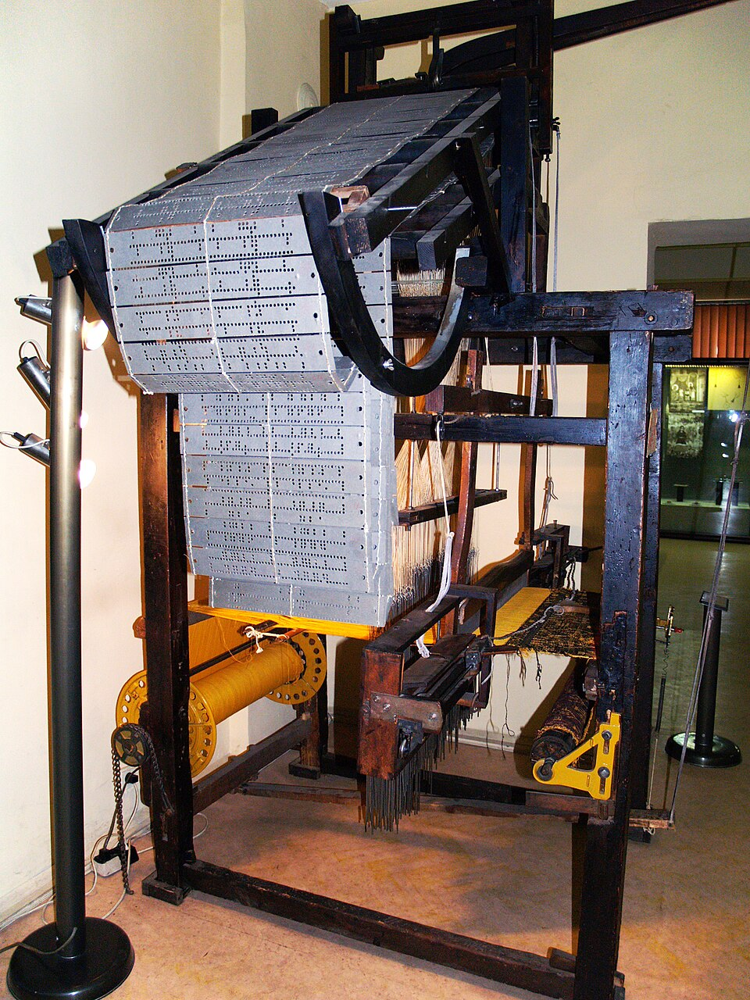
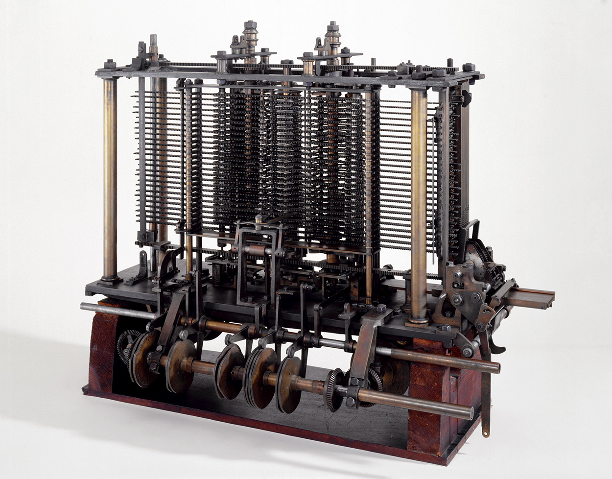
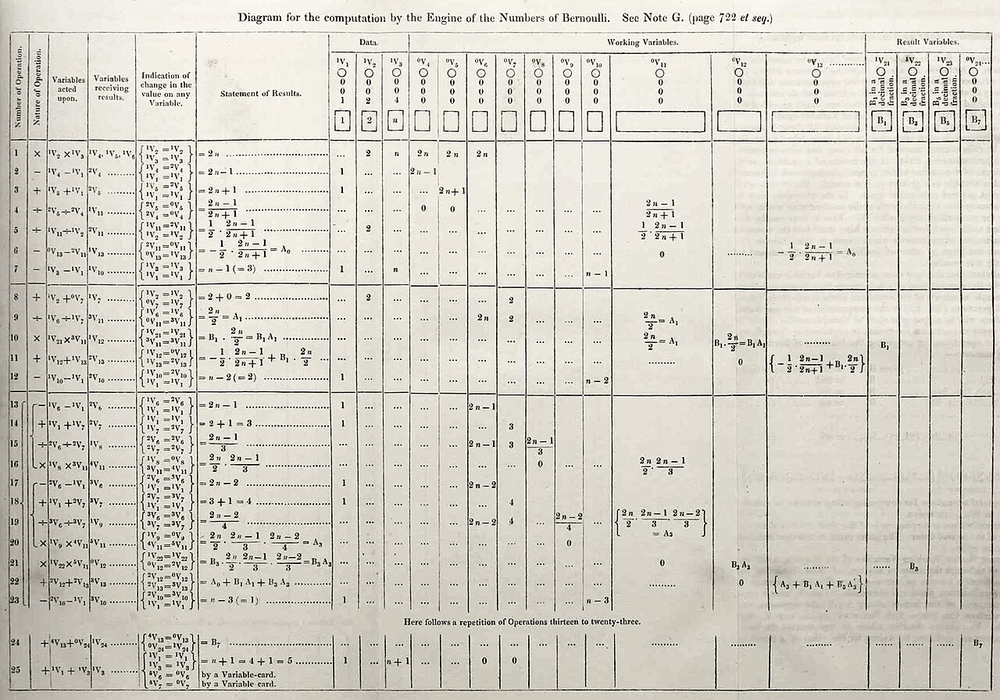
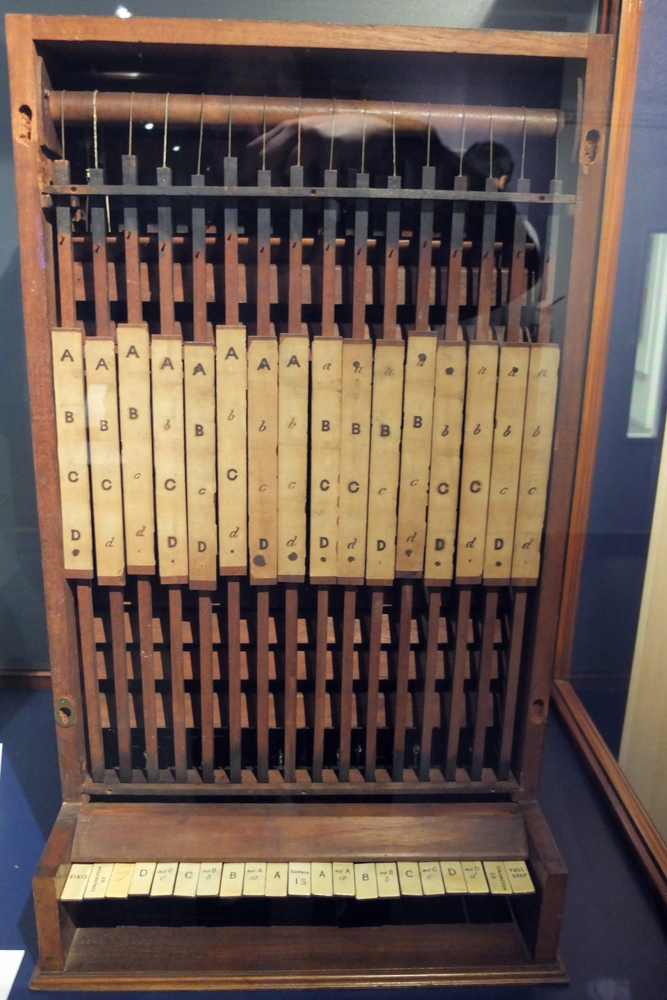
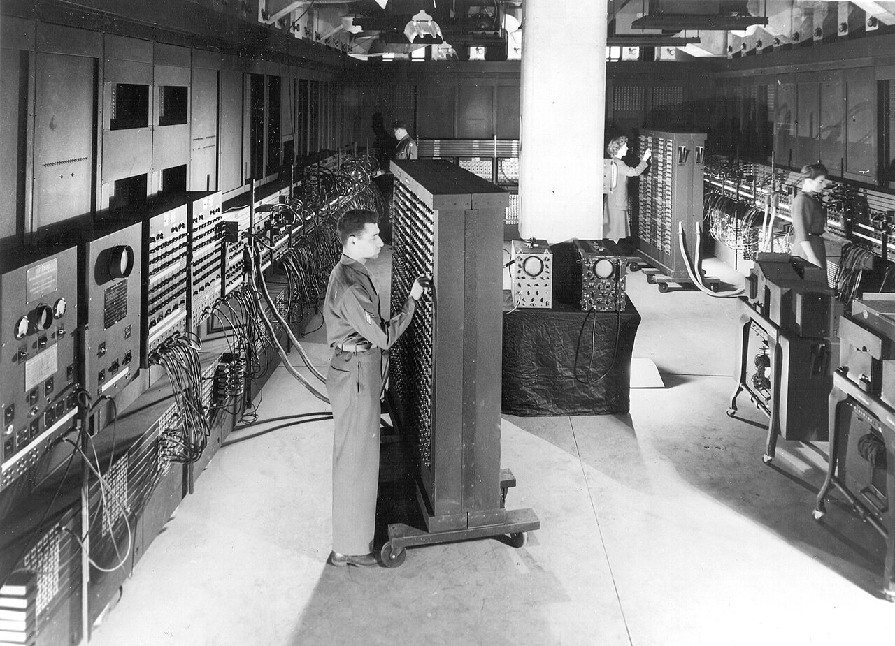

Λογική, γλώσσα και μηχανές
Από τον Πλάτωνα στον Wittgenstein και την τεχνητή νοημοσύνη
Οι υπολογιστές και η τεχνητή νοημοσύνη δεν ξεκίνησαν στα εργαστήρια ηλεκτρονικής του 20ού αιώνα. Πίσω τους βρίσκεται μια μακριά συζήτηση για τρία ερωτήματα: πώς συνδέονται οι λέξεις με τα πράγματα, πότε ένα συμπέρασμα βγαίνει σωστά από όσα έχουμε δεχτεί, και αν ο συλλογισμός μπορεί να γραφτεί ως σύνολο κανόνων που εφαρμόζονται μηχανικά. Το κείμενο αυτό ακολουθεί τη συζήτηση από την αρχαία Ελλάδα ως σήμερα. Ακολουθεί τη γραμμή που οδήγησε στη σύγχρονη τυπική λογική και στην Επιστήμη των Υπολογιστών· άλλες παραδόσεις, όπως η ινδική και η κινεζική, έχουν τη δική τους ιστορία, και αναφέρονται μόνο όπου τη συναντούν. Δίπλα στη συζήτηση αυτή τρέχει η ιστορία της μαθηματικής απόδειξης, από τα Στοιχεία του Ευκλείδη ως τις αποδείξεις που ελέγχει σήμερα ένας υπολογιστής. Στο κέντρο του κειμένου βρίσκεται ο Ludwig Wittgenstein, επειδή το έργο του έχει δύο φάσεις που αντιστοιχούν σε δύο διαφορετικούς τρόπους να σκεφτεί κανείς τη γλώσσα — και οι δύο ξαναβρίσκονται στη σημερινή συζήτηση για τις μηχανές.
Ένα σχήμα επανέρχεται σε όλη τη διαδρομή. Κάθε προσπάθεια να κλειστεί ο συλλογισμός σε ένα πλήρες σύστημα κανόνων έδωσε δύο πράγματα: ένα νέο εργαλείο και την ακριβή γνώση του τι το εργαλείο αυτό δεν μπορεί να κάνει. Τα τρία όρια που θα συναντήσουμε, του Russell, του Gödel και του Turing, στηρίζονται σε μια κοινή ιδέα: κάτι που αναφέρεται στον εαυτό του.
Το κείμενο απευθύνεται σε αναγνώστες χωρίς ειδικές γνώσεις μαθηματικών ή πληροφορικής. Οι λίγοι τεχνικοί όροι εξηγούνται εκεί όπου εμφανίζονται. Τα ονόματα γράφονται με λατινικούς χαρακτήρες, με την ελληνική προφορά όταν παρουσιάζονται τα βασικά πρόσωπα. Οι δεκαδικοί αριθμοί σε παρένθεση μετά από παραθέματα του Wittgenstein (για παράδειγμα 4.112) είναι οι αριθμοί των προτάσεων του Tractatus, ενώ το σύμβολο § παραπέμπει στις παραγράφους των Φιλοσοφικών Ερευνών. Όπου οι μελετητές διαφωνούν, το κείμενο αναφέρει τις βασικές αναγνώσεις σε μια «Ερμηνευτική σημείωση» και δεν διαλέγει. Οι ενότητες 7 και 8 είναι οι πιο τεχνικές. Το νήμα μπορεί να ακολουθηθεί και χωρίς κάθε βήμα των αποδείξεων.
1Η αρχαία αφετηρία: λέξεις, αλήθεια και συλλογισμός
Ο Πλάτων και το ερώτημα για τις λέξεις
Πριν η λογική υπάρξει ως ξεχωριστό αντικείμενο μελέτης, ο Πλάτων (περ. 428–348 π.Χ.) έθεσε τρία ερωτήματα που θα ξανασυναντήσουμε.
Το πρώτο αφορά τα ονόματα. Στον Κρατύλο, ο Ερμογένης υποστηρίζει ότι το ποια λέξη ταιριάζει σε ποιο πράγμα είναι ζήτημα συμφωνίας ανάμεσα στους ανθρώπους. Ο Κρατύλος υποστηρίζει το αντίθετο: κάθε πράγμα έχει ένα όνομα που του ταιριάζει από τη φύση του. Ο Σωκράτης εξετάζει και τις δύο θέσεις και καταλήγει ότι η σύμβαση παίζει οπωσδήποτε ρόλο στην ορθότητα των ονομάτων. Οι μελετητές δεν συμφωνούν αν με αυτό εγκαταλείπει εντελώς τη θέση του Κρατύλου ή αν απλώς την περιορίζει. Η ιδέα ότι στη γλώσσα συνυπάρχουν η αυθαίρετη σύμβαση και κάτι που δεν είναι αυθαίρετο θα επανέλθει στο Tractatus, όπου ο Wittgenstein υποστηρίζει ότι στη γραφή μας η επιλογή των σημείων είναι μεν αυθαίρετη, αλλά μόλις κάνουμε μια τέτοια επιλογή, κάποια άλλα πράγματα πρέπει αναγκαστικά να ισχύουν, και αυτό δεν είναι πλέον αυθαίρετο (πρόταση 3.342): αν αποφασίσουμε ότι ένα σημείο σημαίνει «όχι», τότε η διπλή άρνηση «όχι όχι βρέχει» πρέπει να λέει ό,τι και το «βρέχει».
Το δεύτερο αφορά το ψεύδος. Οι σοφιστές υποστήριζαν ότι κανείς δεν μπορεί να πει κάτι ψευδές, γιατί το να λες ψέματα σημαίνει να λες «αυτό που δεν είναι», και αυτό που δεν είναι δεν υπάρχει. Στον διάλογο Σοφιστής (261–263) ο Πλάτων απαντά, με το στόμα του Ξένου από την Ελέα, ότι μια πρόταση δεν είναι σειρά από ονόματα. Χρειάζεται τουλάχιστον ένα όνομα και ένα ρήμα που συνδυάζονται. Η πρόταση «Ο Θεαίτητος κάθεται» είναι αληθής και η πρόταση «Ο Θεαίτητος πετάει» ψευδής, επειδή η δεύτερη αποδίδει στον Θεαίτητο κάτι διαφορετικό από αυτό που συμβαίνει. Η αλήθεια και το ψεύδος ανήκουν λοιπόν στον συνδυασμό, όχι στις λέξεις μία μία. Η ιδέα αυτή περνά στον Αριστοτέλη και θα γίνει κεντρική στο Tractatus είκοσι τρεις αιώνες αργότερα.
Το τρίτο αφορά τη γνώση. Στον Θεαίτητο εξετάζεται ο ορισμός ότι γνώση είναι η αληθής γνώμη που συνοδεύεται από λόγο, δηλαδή από εξήγηση. Ο διάλογος δεν καταλήγει σε απάντηση. Περιέχει όμως μια σκέψη που ο Σωκράτης παρουσιάζει σαν όνειρο (201–202): τα πρώτα στοιχεία από τα οποία αποτελούνται όλα τα άλλα, όπως τα γράμματα της αλφαβήτου σε σχέση με τις συλλαβές, δεν μπορούν να εξηγηθούν· μπορούν μόνο να ονομαστούν. Ο Wittgenstein παραθέτει αυτό το χωρίο στις Φιλοσοφικές Έρευνες (§46) και σημειώνει ότι τέτοια πρώτα στοιχεία ήταν και τα «αντικείμενα» του δικού του Tractatus.
Ο Αριστοτέλης και ο συλλογισμός
Ο Αριστοτέλης (384–322 π.Χ.) θεωρείται ο θεμελιωτής της συστηματικής λογικής. Ήταν ο πρώτος που ανέλυσε τους κανόνες του ορθού συλλογισμού και τους κατέγραψε με τάξη. Οι μεταγενέστεροι συγκέντρωσαν τα λογικά του έργα με τον τίτλο Όργανον («εργαλείο»). Ο τίτλος δείχνει ότι η λογική θεωρούνταν εργαλείο για κάθε επιστήμη. Στο Περί Ερμηνείας γράφει ότι οι προφορικές λέξεις είναι σύμβολα όσων συμβαίνουν στην ψυχή και οι γραπτές σύμβολα των προφορικών, και ότι το αληθές και το ψευδές προϋποθέτουν «σύνθεση και διαίρεση» — το να ενώσεις δύο έννοιες («ο Σωκράτης είναι δίκαιος») ή να τις χωρίσεις («ο Σωκράτης δεν είναι δίκαιος»). Συμφωνεί δηλαδή με τον Σοφιστή ότι μια λέξη μόνη της δεν είναι ούτε αληθής ούτε ψευδής.
Η κύρια συμβολή του, στα Αναλυτικά Πρότερα, είναι η θεωρία του (κατηγορικού) συλλογισμού. Με τον όρο συλλογισμό εννοούμε έναν λόγο όπου, όταν τεθούν ορισμένες παραδοχές, προκύπτει αναγκαστικά ένα νέο συμπέρασμα που διαφέρει από αυτές. Ένα τυπικό παράδειγμα είναι: «Όλοι οι άνθρωποι είναι θνητοί· όλοι οι Έλληνες είναι άνθρωποι· άρα όλοι οι Έλληνες είναι θνητοί» (το γνωστό σχολικό παράδειγμα με το «ο Σωκράτης είναι άνθρωπος» είναι μεταγενέστερο, γιατί ο Αριστοτέλης χρησιμοποιεί γενικούς όρους). Το σημαντικό είναι ότι το συμπέρασμα δεν εξαρτάται από το θέμα. Για να το δείξει αυτό, ο Αριστοτέλης έκανε ένα μεγάλο βήμα: έβαλε στη θέση των λέξεων γράμματα (Α, Β, Γ) και έγραψε σχήματα όπως «αν το Α κατηγορείται για κάθε Β, και το Β για κάθε Γ, τότε το Α κατηγορείται αναγκαστικά για κάθε Γ». Είναι η πρώτη χρήση μεταβλητών στην ιστορία της λογικής. Η λογική του κοιτάζει μέσα στην πρόταση, στη σχέση ανάμεσα στο υποκείμενο και στο «κατηγόρημα» (αυτό που λέγεται για το υποκείμενο)· είναι ο πρόδρομος αυτού που από τον Frege και μετά ονομάζεται κατηγορηματική λογική.
Διατύπωσε επίσης, στα Μεταφυσικά (Γ 3), την αρχή της μη αντίφασης: είναι αδύνατον «τὸ αὐτὸ ἅμα ὑπάρχειν τε καὶ μὴ ὑπάρχειν τῷ αὐτῷ» — η ίδια ιδιότητα να υπάρχει και να μην υπάρχει στο ίδιο αντικείμενο, την ίδια στιγμή και από την ίδια άποψη. Τη θεωρεί την πιο βέβαιη από όλες τις αρχές.
Οι Μεγαρικοί και οι Στωικοί
Μια δεύτερη παράδοση κοίταξε τη λογική από άλλη πλευρά. Δεν ανέλυε το εσωτερικό μιας πρότασης αλλά τον τρόπο με τον οποίο ολόκληρες προτάσεις συνδέονται μεταξύ τους με τις λέξεις «και», «ή», «όχι», «αν… τότε…». Είναι αυτό που σήμερα ονομάζουμε προτασιακή λογική (ή λογική των προτάσεων).
Ο Διόδωρος Κρόνος και ο μαθητής του Φίλων (γύρω στο 300 π.Χ.), που παραδοσιακά κατατάσσονται στους Μεγαρικούς ενώ νεότεροι μελετητές τους θεωρούν ξεχωριστή «Διαλεκτική» σχολή, διαφώνησαν για το πότε αληθεύει μια πρόταση της μορφής «αν… τότε…». Κατά τον Φίλωνα, μια τέτοια πρόταση είναι ψευδής σε μία μόνο περίπτωση: όταν, τη στιγμή που μιλάμε, το πρώτο μέρος της είναι αληθές και το δεύτερο ψευδές. Ο Διόδωρος θεωρούσε αυτόν τον ορισμό υπερβολικά χαλαρό και απαιτούσε κάτι ισχυρότερο: να μην ήταν ποτέ στο παρελθόν, ούτε να είναι τώρα δυνατόν, το πρώτο μέρος να είναι αληθές και το δεύτερο ψευδές. Η συζήτηση έγινε τόσο γνωστή ώστε ο ποιητής Καλλίμαχος έγραψε σε επίγραμμά του πως «ακόμη και τα κοράκια στις στέγες κράζουν για το ποιες υποθετικές προτάσεις είναι αληθείς». Ο ορισμός που επικράτησε στη σύγχρονη τυπική λογική είναι εκείνος του Φίλωνα.
Ο Χρύσιππος ο Σολεύς (περ. 280–207 π.Χ.), ο σημαντικότερος λογικός της Στοάς, ανέπτυξε πάνω σε αυτή τη βάση μια πλήρη λογική των προτάσεων, με πέντε βασικά («αναπόδεικτα») σχήματα συμπερασμού από τα οποία παράγονται τα υπόλοιπα. Ένα από αυτά είναι: «Αν είναι μέρα, υπάρχει φως· είναι μέρα· άρα υπάρχει φως». Όπως ο Αριστοτέλης έβαζε γράμματα (Α, Β, Γ) στη θέση των όρων, οι Στωικοί έβαζαν τακτικούς αριθμούς στη θέση ολόκληρων προτάσεων: «Αν το πρώτο, τότε το δεύτερο· αλλά το πρώτο· άρα το δεύτερο». Οι Στωικοί έκαναν επίσης μια τριπλή διάκριση που προαναγγέλλει τη σύγχρονη φιλοσοφία της γλώσσας (και ειδικότερα τον Frege στην ενότητα 5): ξεχώρισαν τη φωνή που προφέρουμε (το «σημαίνον»), το υλικό αντικείμενο έξω στον κόσμο (το «τυγχάνον»), και το ασώματο νόημα αυτού που λέμε (το «σημαινόμενον» ή «λεκτόν») — αυτό που καταλαβαίνει όποιος ξέρει τη γλώσσα, ενώ ο ξένος ακούει μόνο τον ήχο και βλέπει μόνο το αντικείμενο.
Οι δύο παραδόσεις, του Αριστοτέλη και των Στωικών, προχώρησαν χωριστά. Τον 14ο αιώνα οι θεωρίες των λογικών για τις «ακολουθίες» (consequentiae) εξέτασαν μαζί τον συλλογισμό και κανόνες για ολόκληρες προτάσεις, αν και δεν έχει βρεθεί ότι γνώριζαν τη στωική λογική. Σε μία ενιαία γραφή οι δύο πλευρές θα ενωθούν μόλις το 1879.
Τα μαθηματικά της απόδειξης
Παράλληλα με τη λογική, οι αρχαίοι Έλληνες έκαναν τα μαθηματικά, από πρακτικό εργαλείο μετρήσεων, επιστήμη που στηρίζεται στην απόδειξη. Ακολουθεί ένας ενδεικτικός κατάλογος από γενιές μαθηματικών, από τον 6ο αιώνα π.Χ. ως τον 5ο αιώνα μ.Χ., όπου η καθεμιά έχτισε πάνω στα αποτελέσματα της προηγούμενης:
- Θαλής ο Μιλήσιος (περ. 624–547 π.Χ.). Συγγραφείς που έζησαν αιώνες αργότερα του αποδίδουν τα πρώτα γεωμετρικά θεωρήματα, ανάμεσά τους ότι η γωνία που βαίνει σε ημικύκλιο είναι ορθή, και γράφουν ότι μέτρησε το ύψος των πυραμίδων από τη σκιά τους.
- Πυθαγόρας ο Σάμιος (περ. 570–490 π.Χ.). Η σχολή του είχε ως κεντρική ιδέα ότι «τα πάντα είναι αριθμός»· η μεταγενέστερη παράδοση του αποδίδει ότι βρήκε πως τα βασικά μουσικά διαστήματα, η οκτάβα, η πέμπτη και η τετάρτη, αντιστοιχούν στους λόγους 2:1, 3:2 και 4:3. Πολύ αργότερα ο Galileo (Γαλιλαίος, 1564–1642) έγραψε ότι η φιλοσοφία είναι γραμμένη στο μεγάλο βιβλίο του σύμπαντος, «στη γλώσσα των μαθηματικών». Το θεώρημα που φέρει το όνομά του (a² + b² = c²) ήταν γνωστό στους Βαβυλώνιους πολύ νωρίτερα· ο ίδιος ίσως ήταν ο πρώτος που το απέδειξε. Οι Πυθαγόρειοι, μάλλον όχι ο ίδιος, ανακάλυψαν ότι υπάρχουν άρρητα μεγέθη, όπως η διαγώνιος του τετραγώνου σε σχέση με την πλευρά του.
- Εύδοξος ο Κνίδιος (περ. 408–355 π.Χ.). Με μια θεωρία των λόγων, που σώζεται στο πέμπτο βιβλίο των Στοιχείων του Ευκλείδη, έκανε δυνατή τη σύγκριση και των άρρητων μεγεθών, και με τη «μέθοδο της εξάντλησης» υπολόγισε εμβαδά και όγκους προσεγγίζοντάς τους με όλο και μικρότερα κομμάτια, μια πρώιμη μορφή του ολοκληρωτικού λογισμού.
- Ευκλείδης (περ. 325–265 π.Χ.), στην Αλεξάνδρεια. Τα Στοιχεία του, σε δεκατρία βιβλία, ξεκινούν από ορισμούς, πέντε αιτήματα και λίγες «κοινές έννοιες» και αποδεικνύουν από αυτά, το ένα μετά το άλλο, τα θεωρήματα της γεωμετρίας και της θεωρίας των αριθμών· επηρέασαν τα μαθηματικά για περισσότερα από δύο χιλιάδες χρόνια. Ήδη στην αρχαιότητα ο Ζήνων ο Σιδώνιος παρατήρησε ότι οι αποδείξεις στηρίζονται και σε σιωπηρές παραδοχές.
- Αρχιμήδης ο Συρακούσιος (περ. 287–212 π.Χ.). Έδειξε ότι το π βρίσκεται ανάμεσα στο 3 10/71 και στο 3 1/7 και ότι η επιφάνεια και ο όγκος της σφαίρας είναι τα δύο τρίτα εκείνων του κυλίνδρου που την περιβάλλει, και θεμελίωσε τη στατική και την υδροστατική. Οι μέθοδοί του προανήγγειλαν τον ολοκληρωτικό λογισμό.
- Ερατοσθένης ο Κυρηναίος (περ. 276–194 π.Χ.), βιβλιοθηκάριος της Αλεξάνδρειας. Υπολόγισε με απλή γεωμετρία την περίμετρο της Γης, και φέρει το όνομά του το «κόσκινο του Ερατοσθένη», ένας αλγόριθμος για την εύρεση των πρώτων αριθμών.
- Διόφαντος ο Αλεξανδρεύς (πιθανότατα 3ος αι. μ.Χ.). Στα Αριθμητικά έλυσε προβλήματα με εξισώσεις και χρησιμοποίησε συντομογραφίες για τον άγνωστο, τις δυνάμεις του και την ισότητα, ένα πρώτο βήμα από τη λεκτική προς τη συμβολική άλγεβρα. Από το όνομά του λέγονται σήμερα διοφαντικές οι εξισώσεις για τις οποίες ζητούνται ακέραιες λύσεις.
- Υπατία η Αλεξανδρινή (γεννήθηκε ανάμεσα στο 350 και στο 370, πέθανε το 415 μ.Χ.). Ο φόνος της από όχλο χριστιανών, μέσα σε μια πολιτική διαμάχη της Αλεξάνδρειας, έγινε αργότερα σύμβολο του τέλους του αρχαίου κόσμου· τον 19ο αιώνα ο Charles Kingsley την ονόμασε «την τελευταία των Ελλήνων». Κόρη του μαθηματικού Θέωνα, βοήθησε τον πατέρα της στο σχόλιό του στη Μεγάλη Σύνταξη του Πτολεμαίου και, σύμφωνα με τη Σούδα, έγραψε σχόλια στα Αριθμητικά του Διόφαντου και στα Κωνικά του Απολλώνιου του Περγαίου. Είναι η πρώτη γυναίκα μαθηματικός της οποίας η ζωή είναι σχετικά καλά γνωστή.
Ερμηνευτική σημείωση. Οι ιστορικοί διαφωνούν πόσα από όσα αποδίδονται στον Θαλή και στον Πυθαγόρα είναι δικά τους. Οι πηγές γράφτηκαν αιώνες αργότερα και συνήθιζαν να αποδίδουν ανακαλύψεις σε διάσημα πρόσωπα. Για τον Θαλή, κάποιοι θεωρούν ότι δεν υπάρχει λόγος να πιστεύουμε πως έδωσε αποδείξεις με τη σημερινή έννοια, ενώ άλλοι, όπως ο B. L. van der Waerden, ότι ήταν ο πρώτος που έθεσε τη γεωμετρία σε λογική βάση. Για τον Πυθαγόρα, άλλοι τον θεωρούν μαθηματικό που ίσως πρώτος απέδειξε το θεώρημά του, ενώ άλλοι, όπως ο Carl Huffman, σημειώνουν ότι οι πρώιμες μαρτυρίες τον παρουσιάζουν κυρίως ως διδάσκαλο για την ψυχή και τον τρόπο ζωής.
Τρία νήματα αυτής της παράδοσης θα τα συναντήσουμε ξανά: την αξιωματική μέθοδο του Ευκλείδη, που ο Frege και ο Hilbert θέλησαν να κάνουν πλήρως αυστηρή (ενότητες 5 και 7)· τον χειρισμό του απείρου από τον Εύδοξο και τον Αρχιμήδη, που οδήγησε στον απειροστικό λογισμό· και τις εξισώσεις του Διόφαντου, που οδηγούν στην άλγεβρα του Viète, στο θεώρημα του Fermat και στο δέκατο πρόβλημα του Hilbert (ενότητες 2, 8 και 11).
2Από τον Μεσαίωνα στον Leibniz
Ο Αυγουστίνος, ο Βοήθιος, ο αραβόφωνος κόσμος και οι Βυζαντινοί
Ανάμεσα στην αρχαιότητα και στον δυτικό Μεσαίωνα του 12ου αιώνα η λογική δεν έπαψε να διδάσκεται. Ο Αυρήλιος Αυγουστίνος (Augustinus, 354–430) πέρασε στη λατινική Δύση πολλές ιδέες του Πλάτωνα, όπως τις διάβασε στους νεοπλατωνικούς. Ο Ρωμαίος Βοήθιος (Boethius, περ. 475/477–526) μετέφρασε στα λατινικά και σχολίασε λογικά έργα του Αριστοτέλη και την Εισαγωγή του νεοπλατωνικού Πορφυρίου (3ος αι. μ.Χ.), η οποία έθετε το ερώτημα αν τα γένη και τα είδη υπάρχουν πραγματικά ή μόνο στη σκέψη. Το σχέδιο του Βοηθίου να μεταφράσει ολόκληρο τον Πλάτωνα και τον Αριστοτέλη διακόπηκε με την εκτέλεσή του. Οι μεταφράσεις του έμειναν οι καθιερωμένες σε όλο τον Μεσαίωνα, και από τα δικά του εγχειρίδια έμαθαν τον συλλογισμό οι λογικοί της Δύσης ως τον 12ο αιώνα.
Στον αραβόφωνο κόσμο τόσο τα μαθηματικά όσο και η λογική γνώρισαν δική τους ακμή. Στη Βαγδάτη του 9ου αιώνα, ο μαθηματικός και αστρονόμος al-Khwārizmī (Αλ-Χουαρίζμι, περ. 780–850) έδωσε στην ιστορία μας δύο από τις κεντρικές της λέξεις. Από τον όρο al-jabr («συμπλήρωση») στον τίτλο του βιβλίου του για τη συστηματική επίλυση εξισώσεων (περ. 830) προήλθε η λέξη «άλγεβρα». Και από τη λατινική απόδοση του ονόματός του (Algoritmi), στη μετάφραση της πραγματείας του που έκανε γνωστό στη Δύση το ινδοαραβικό δεκαδικό σύστημα αρίθμησης με το μηδέν, προήλθε η λέξη «αλγόριθμος»: μια καθορισμένη συνταγή υπολογισμού που εκτελείται βήμα προς βήμα.
Στη λογική, ο al-Fārābī (Αλ-Φαράμπι, περ. 870–950), που η παράδοση ονόμασε «δεύτερο δάσκαλο» μετά τον Αριστοτέλη, θεωρείται ο πρώτος πραγματικά ανεξάρτητος στοχαστής της αραβικής παράδοσης. Ξεχώρισε τη λογική από τη γραμματική: η γραμματική δίνει κανόνες για τη γλώσσα μιας κοινότητας, ενώ η λογική δίνει κανόνες κοινούς για τις εκφράσεις κάθε κοινότητας. Ο Ibn Sīnā (Ιμπν Σίνα, γνωστός στη Δύση ως Αβικέννας [Avicenna], περ. 980–1037) ανέπτυξε μια λογική όπου κάθε πρόταση συνοδεύεται από έναν προσδιορισμό χρόνου ή αναγκαιότητας, διακρίνοντας λόγου χάρη το «κάθε άνθρωπος αναπνέει (όσο ζει)» από το «κάθε άνθρωπος είναι αναγκαστικά ζώο». Μετά από αυτόν, κάθε λογικός της αραβικής παράδοσης αναμετρήθηκε μαζί του. Τον 12ο αιώνα ο Ibn Rushd (Αβερρόης [Averroes], 1126–1198), στην Κόρδοβα, έγραψε σχόλια σε σχεδόν όλα τα έργα του Αριστοτέλη· μεταφρασμένα στα λατινικά τον 13ο αιώνα, έγιναν τόσο γνωστά ώστε οι λόγιοι της Δύσης τον ονόμαζαν απλώς «ο Σχολιαστής». Στη λατινική Δύση πέρασαν κυρίως τα σχόλια του Averroes και ορισμένες ιδέες του Avicenna για το ποιο είναι το αντικείμενο της λογικής· οι πιο πρωτότυπες πλευρές της αραβικής λογικής δεν έφτασαν εκεί. Γλώσσα της επιστήμης ήταν τα αραβικά, όχι όμως πάντα και η καταγωγή των λογίων: το όνομα του al-Khwārizmī παραπέμπει στο Χορεζμ της Κεντρικής Ασίας, και ο Ibn Sīnā γεννήθηκε κοντά στη Μπουχάρα.
Και στο Βυζάντιο η λογική του Αριστοτέλη ήταν μέρος της κανονικής φιλοσοφικής εκπαίδευσης. Σχόλια στα λογικά του έργα έγραψαν, μεταξύ άλλων, τον 11ο αιώνα ο Μιχαήλ Ψελλός και ο Ιωάννης Ιταλός, και τον 13ο ο Νικηφόρος Βλεμμύδης. Για το αν η βυζαντινή λογική επηρέασε τη δυτική οι πηγές είναι λίγες. Ξέρουμε ότι σχόλια του Ευστρατίου Νικαίας και του Μιχαήλ Εφεσίου (12ος αι.), στα Ηθικά αλλά και στα Αναλυτικά Ύστερα του Αριστοτέλη, μεταφράστηκαν στα λατινικά τον 13ο αιώνα, και ότι η επίδραση κινήθηκε και αντίστροφα: ο Μανουήλ Ολόβωλος μετέφρασε στα ελληνικά τα λογικά έργα του Βοηθίου.
Ο Αβελάρδος, ο Ακινάτης και ο Ockham
Η μεσαιωνική φιλοσοφία της Δύσης συνέχισε τη μελέτη της λογικής και έκανε κεντρικό το ερώτημα του Πορφυρίου για τα «καθολικά» (universalia): οι γενικές λέξεις, όπως «άνθρωπος» ή «κόκκινο», αντιστοιχούν σε κάτι που υπάρχει πραγματικά πέρα από τους επιμέρους ανθρώπους και τα επιμέρους κόκκινα πράγματα (όπως υποστήριζαν οι «ρεαλιστές»), ή όχι; Ο Πέτρος Αβελάρδος (Abelard, περ. 1079–1142) απάντησε ότι τα καθολικά δεν είναι πράγματα, αλλά λέξεις με σημασία (sermones), που λέγονται για πολλά επιμέρους όντα: η λέξη «άνθρωπος» λέγεται για τον Σωκράτη, για τον Πλάτωνα και για κάθε άλλον άνθρωπο.
Ο Θωμάς ο Ακινάτης (Thomas Aquinas, περ. 1225–1274) συνδύασε τη φιλοσοφία του Αριστοτέλη με τη χριστιανική θεολογία και σχολίασε το Περί Ερμηνείας και τα Αναλυτικά Ύστερα, χρησιμοποιώντας και νέες μεταφράσεις από τα ελληνικά, όπως εκείνες του Γουλιέλμου του Moerbeke. Για τα καθολικά υποστήριξε μια μετριοπαθή θέση: δεν υπάρχουν χωριστά από τα πράγματα, αλλά ο νους τα αφαιρεί από αυτά.
Ο William του Ockham (Όκαμ, περ. 1287–1347) έδωσε στη θέση αυτή, που ονομάζεται νομιναλισμός, την πιο επεξεργασμένη μορφή της: έξω στον κόσμο υπάρχουν μόνο επιμέρους πράγματα. Υποστήριξε επίσης ότι η σκέψη έχει τη δική της «νοητική γλώσσα», της οποίας οι προφορικές και οι γραπτές γλώσσες είναι εξωτερική έκφραση — μια ιδέα που θα επανέλθει στον 20ό αιώνα στη φιλοσοφία του νου (ενότητα 10). Το όνομά του έμεινε συνδεδεμένο με τον κανόνα της οικονομίας που ονομάστηκε, πολύ αργότερα, «ξυράφι του Ockham»: είναι μάταιο να κάνει κανείς με περισσότερα ό,τι μπορεί να γίνει με λιγότερα. Η γνωστή διατύπωση «δεν πρέπει να πολλαπλασιάζουμε τις οντότητες χωρίς ανάγκη» δεν βρίσκεται στα κείμενά του.
Ο Wittgenstein αναφέρει τον κανόνα αυτό δύο φορές στο Tractatus (3.328, 5.47321) και του δίνει δικό του νόημα. Δεν το θεωρεί πρακτική συμβουλή αλλά κανόνα για τα σύμβολα: «Αν ένα σημείο δεν είναι αναγκαίο, τότε δεν έχει σημασία. Αυτό είναι το νόημα της αρχής του Occam» (3.328).
Ο Llull, ο Viète και ο Pascal
Τρία πρόσωπα προετοιμάζουν, το καθένα από άλλη πλευρά, το έδαφος για το σχέδιο του Leibniz: ο Llull με τον μηχανικό συνδυασμό εννοιών, ο Viète με τη συμβολική γραφή, ο Pascal με τη μηχανή που υπολογίζει. Ο Καταλανός Ramon Llull (1232–1316), από τη Μαγιόρκα, φιλόσοφος και λογικός, έγραψε περισσότερα από διακόσια έργα, κυρίως στα καταλανικά και στα λατινικά. Επινόησε μια «Τέχνη» (Ars) για να φανερώνεται η αλήθεια και να γίνεται διάλογος ανάμεσα στις θρησκείες: λίγες βασικές έννοιες, σημειωμένες με γράμματα, συνδυάζονταν μεταξύ τους με σχήματα από κύκλους που περιστρέφονταν. Γι' αυτό ορισμένοι τον θεωρούν πρόδρομο της θεωρίας του υπολογισμού.
Το 1591 ο Γάλλος νομικός και ερασιτέχνης μαθηματικός François Viète (Βιέτ, 1540–1603) δημοσίευσε την Εισαγωγή στην αναλυτική τέχνη (In artem analyticem isagoge), την πρώτη συστηματική συμβολική άλγεβρα, που την ονόμασε logistice speciosa. Τα κύρια χαρακτηριστικά της:
- Διέκρινε τη logistice numerosa, τον υπολογισμό με συγκεκριμένους αριθμούς, στα όρια του οποίου έμενε κατά τη γνώμη του ο Διόφαντος, από τη logistice speciosa, που υπολογίζει με γενικές μορφές (species) και αφηρημένα μεγέθη.
- Κράτησε την αυστηρότητα της αρχαίας ελληνικής γεωμετρίας με έναν «νόμο της ομοιογένειας»: μπορούν να προστεθούν ή να συγκριθούν μόνο μεγέθη της ίδιας διάστασης, μήκη με μήκη, εμβαδά με εμβαδά.
- Έγραψε τους αγνώστους με κεφαλαία φωνήεντα (A, E, I, O, U, Y) και τα γνωστά μεγέθη με κεφαλαία σύμφωνα (B, C, D, G κ.λπ.), ώστε μια εξίσωση να γράφεται μία φορά για όλες τις περιπτώσεις. Ο René Descartes (Ντεκάρτ/Καρτέσιος, 1596–1650) καθιέρωσε αργότερα τα x, y, z για τους αγνώστους και τα a, b, c για τα γνωστά μεγέθη.
- Υιοθέτησε τα σύμβολα + και − για την πρόσθεση και την αφαίρεση, ενώ για τον πολλαπλασιασμό και τις δυνάμεις έγραφε ακόμη λέξεις: B in A για το γινόμενο, A quadratum για το A².
Μισό αιώνα αργότερα, το 1642, ο Γάλλος μαθηματικός και φιλόσοφος Blaise Pascal (Πασκάλ, 1623–1662), δεκαοκτώ με δεκαεννέα ετών, άρχισε να κατασκευάζει, για να βοηθήσει τον πατέρα του που εισέπραττε φόρους, μια μηχανή με οδοντωτούς τροχούς που έκανε προσθέσεις και αφαιρέσεις. Το 1649 ένα βασιλικό προνόμιο του έδωσε το αποκλειστικό δικαίωμα να κατασκευάζει και να πουλά αριθμομηχανές στη Γαλλία· ήταν ένα είδος πρώιμης πατέντας. Ως το 1652 είχαν φτιαχτεί πενήντα πρωτότυπα, αλλά λίγα πουλήθηκαν.
Ο Leibniz
Ο Gottfried Wilhelm Leibniz (Λάιμπνιτς, 1646–1716) είναι ο πρώτος που διατύπωσε καθαρά το σχέδιο το οποίο διατρέχει όλη τη συνέχεια αυτής της ιστορίας. Ήδη το 1666 σκιαγράφησε μια «καθολική γραφή» (characteristica universalis), στην οποία κάθε απλή έννοια θα είχε το σύμβολό της, και έναν «λογισμό του συλλογισμού» (calculus ratiocinator), ένα σύνολο κανόνων με το οποίο οι διαφωνίες θα λύνονταν με υπολογισμό, όπως λύνεται μια πρόσθεση. Στην ίδια εργασία, τη Διατριβή για τη συνδυαστική τέχνη, εξετάζει και την τέχνη του Llull. Εκεί επικαλείται και τον Άγγλο φιλόσοφο Thomas Hobbes (Χομπς, 1588–1679), «τον πιο βαθύ ερευνητή των αρχών σε όλα τα πράγματα», που «σωστά έθεσε ότι κάθε έργο του νου μας είναι υπολογισμός». Ο Hobbes είχε γράψει το 1655, στο Περί σώματος (De Corpore), ότι με τον συλλογισμό εννοεί τον υπολογισμό: να συλλογίζεται κανείς είναι το ίδιο με το να προσθέτει ή να αφαιρεί. Σε δοκιμές του το 1679 ο Leibniz απέδωσε στις απλές έννοιες πρώτους αριθμούς και στις σύνθετες το γινόμενό τους (αν το «ζώο» είναι το 2 και το «λογικός» το 3, τότε ο «άνθρωπος» είναι 2 × 3 = 6), έτσι ώστε το αν μια πρόταση είναι αληθής να ελέγχεται με απλή διαίρεση — ιδέα που προαναγγέλλει την κωδικοποίηση του Gödel στην ενότητα 7.
Ο ίδιος κατασκεύασε μια μηχανική αριθμομηχανή που, σε αντίθεση με εκείνη του Pascal, έκανε και τις τέσσερις πράξεις, και την παρουσίασε στη Βασιλική Εταιρεία του Λονδίνου το 1673, και μελέτησε τη γραφή όλων των αριθμών μόνο με τα ψηφία 0 και 1. Όταν έγραψε γι' αυτήν το 1701 στον Ιησουίτη ιεραπόστολο Joachim Bouvet στο Πεκίνο, εκείνος του απάντησε στέλνοντας ένα διάγραμμα με τα εξήντα τέσσερα εξάγραμμα του κινεζικού Βιβλίου των Μεταβολών (I Ching), σχήματα από έξι συνεχείς ή διακεκομμένες γραμμές: αν η συνεχής γραμμή διαβαστεί ως 1 και η διακεκομμένη ως 0, τα εξάγραμμα δίνουν με τη σειρά τους αριθμούς από το 0 ως το 63. Ο Leibniz δημοσίευσε το 1703 την «Εξήγηση της δυαδικής αριθμητικής», όπου συνδέει το σύστημά του με τα «αρχαία κινεζικά σχήματα του Fuxi».
Ερμηνευτική σημείωση. Οι μελετητές διαφωνούν αν το κινεζικό διάγραμμα είναι πράγματι δυαδικό σύστημα. Για κάποιους η αντιστοιχία είναι μόνο τυπική, αφού το διάγραμμα κατασκευάζεται και διαβάζεται αλλιώς από ό,τι το διάβασαν ο Bouvet και ο Leibniz. Άλλοι απαντούν ότι είναι δυαδικό, αφού αποτελείται από δύο στοιχεία, και ένα δυαδικό σύστημα δεν χρειάζεται τα σύμβολα 0 και 1.

Την ίδια εποχή ο Leibniz ανέπτυξε, ανεξάρτητα από τον Άγγλο Isaac Newton (Νεύτων, 1643–1727), τον απειροστικό λογισμό, και δημοσίευσε πρώτος τα αποτελέσματά του, το 1684 και το 1686· ο Newton είχε φτάσει στις δικές του ιδέες ήδη το 1665–1666, αλλά τις δημοσίευσε πολύ αργότερα. Ο Leibniz θεωρούσε ότι μια καλή γραφή έχει θεμελιώδη σημασία, και τα σύμβολα που καθιέρωσε το 1675, το ∫ για το ολοκλήρωμα και το dx, χρησιμοποιούνται ως σήμερα. Ο λογισμός τους στηριζόταν σε διαισθητικές έννοιες, τα «απειροελάχιστα»· αυστηρό ορισμό, με όρια, του έδωσαν τον 19ο αιώνα ο Augustin-Louis Cauchy και, για το ολοκλήρωμα, ο Bernhard Riemann (Ρίμαν, 1826–1866), το 1854. Πέντε χρόνια αργότερα, το 1859, διατύπωσε και την υπόθεση για την κατανομή των πρώτων αριθμών που φέρει το όνομά του (Υστερόγραφο).
Ο Leibniz διέκρινε ακόμη δύο είδη αληθειών. Οι αλήθειες του λόγου, όπως «το τρίγωνο έχει τρεις πλευρές», αποδεικνύονται με ανάλυση των εννοιών και το αντίθετό τους είναι αδύνατο. Οι αλήθειες των γεγονότων, όπως «σήμερα βρέχει», θα μπορούσαν να είναι αλλιώς. Για να μιλήσει για το «θα μπορούσαν», μίλησε για δυνατούς κόσμους, από τους οποίους ο πραγματικός είναι ένας. Το Tractatus δεν αναφέρει τον Leibniz. Αρκετοί μελετητές βλέπουν συγγένεια ανάμεσα στους δυνατούς κόσμους και στον «λογικό χώρο» του Wittgenstein, αλλά αυτό είναι ερμηνεία και όχι τεκμηριωμένη επίδραση.
3Τι μπορούμε να γνωρίζουμε: Locke, Hume, Kant
Η γνωσιολογία είναι ο κλάδος της φιλοσοφίας που ρωτά τι είναι γνώση και από πού προέρχεται. Η ιστορία της διασταυρώνεται με την ιστορία της λογικής σε αρκετά σημεία που έχουν σημασία για τη συνέχεια.
Τον 17ο και τον 18ο αιώνα σχηματίστηκαν δύο τάσεις. Οι ορθολογιστές (Descartes, Spinoza [Σπινόζα, 1632–1677], Leibniz) υποστήριζαν ότι ένα ουσιώδες μέρος της γνώσης μας δεν προέρχεται από την εμπειρία αλλά από τον ίδιο τον νου. Οι εμπειριστές (Locke, Hume) υποστήριζαν ότι ο νους ξεκινά σαν «άγραφο χαρτί» (tabula rasa) και ότι δεν υπάρχει άλλη πηγή γνώσης εκτός από την εμπειρία. Οι δύο ετικέτες απλουστεύουν, αλλά δείχνουν τη βασική αντίθεση.
Ο John Locke (Λοκ, 1632–1704) αφιέρωσε ένα ολόκληρο βιβλίο του Δοκιμίου του (1689) στις λέξεις. Η θέση του είναι ότι οι λέξεις αντιπροσωπεύουν πρωτίστως τις ιδέες που έχει στον νου του αυτός που τις χρησιμοποιεί. Είναι μια εικόνα της γλώσσας που θα αμφισβητήσει πρώτα ο Frege (ενότητα 5) και, ακόμη πιο ριζικά, ο ύστερος Wittgenstein (ενότητα 10).
Ο David Hume (Χιουμ, 1711–1776), στην Έρευνα για την ανθρώπινη νόηση (1748), χώρισε όλα όσα μπορούμε να ερευνήσουμε σε δύο είδη: σχέσεις ιδεών, όπως οι προτάσεις των μαθηματικών, και ζητήματα γεγονότων. Για τα δεύτερα έθεσε το λεγόμενο «πρόβλημα της επαγωγής»: πώς δικαιολογείται το πέρασμα από όσα έχουμε παρατηρήσει ως τώρα σε όσα δεν έχουμε παρατηρήσει ακόμη; Η πρόταση «ο ήλιος δεν θα ανατείλει αύριο» δεν περιέχει καμία λογική αντίφαση· το ότι περιμένουμε να ανατείλει δεν στηρίζεται σε απόδειξη αλλά στη συνήθεια. Το Tractatus λέει το ίδιο σχεδόν με τα ίδια λόγια, χωρίς να αναφέρει τον Hume: «Ότι ο ήλιος θα ανατείλει αύριο είναι μια υπόθεση· και αυτό σημαίνει ότι δεν γνωρίζουμε αν θα ανατείλει» (6.36311), ενώ λίγο νωρίτερα χαρακτηρίζει την πίστη στον αιτιώδη δεσμό «δεισιδαιμονία» (5.1361). Το ίδιο ερώτημα θα το ξανασυναντήσουμε στην ενότητα 11, καθώς η μάθηση των σημερινών μηχανών από παραδείγματα είναι επαγωγή από το παρελθόν, όχι λογική απόδειξη.
Ο Immanuel Kant (Καντ, 1724–1804) προσπάθησε, στην Κριτική του καθαρού λόγου (1781), να συνδυάσει τις δύο τάσεις. Διέκρινε τις αναλυτικές κρίσεις, όπου το κατηγόρημα περιέχεται ήδη στην έννοια του υποκειμένου («όλα τα σώματα έχουν έκταση»), από τις συνθετικές, που προσθέτουν κάτι («όλα τα σώματα έχουν βάρος»). Υποστήριξε ότι υπάρχουν κρίσεις που είναι συνθετικές και όμως γνωστές πριν από κάθε εμπειρία, όπως το 7 + 5 = 12, επειδή ο ίδιος ο νους μας βάζει τις μορφές (τον χώρο και τον χρόνο) και τις βασικές έννοιες (όπως η αιτιότητα) μέσα στις οποίες οργανώνεται κάθε εμπειρία. Και έθεσε όρια στη γνώση: γνωρίζουμε τα πράγματα όπως μας εμφανίζονται, όχι όπως είναι καθαυτά.
Η συζήτηση αυτή βρίσκει μια από τις πιο καθαρές συνέχειές της στον Wittgenstein: το Tractatus μεταφέρει το καντιανό ερώτημα των ορίων από τη γνώση στη γλώσσα. Ο πρόλογός του λέει ότι το βιβλίο θέλει να χαράξει ένα όριο όχι στη σκέψη αλλά στην έκφραση των σκέψεων. Και μια πρότασή του ορίζει: «Όλη η φιλοσοφία είναι "κριτική της γλώσσας"» (4.0031). Γι' αυτό πολλοί μελετητές διαβάζουν το έργο ως συνέχεια του καντιανού σχεδίου με άλλα μέσα. Και αυτό είναι ερμηνεία: ο Kant αναφέρεται στο Tractatus μόνο μία φορά, και για άλλο θέμα (στο 6.36111, για το παράδειγμα του δεξιού και του αριστερού χεριού που δεν μπορούν να συμπέσουν στον χώρο).
4Μηχανές και άλγεβρα: Babbage, Lovelace, Boole
Η Αναλυτική Μηχανή
Στο πρώτο μισό του 19ου αιώνα, ο Άγγλος μαθηματικός Charles Babbage (Μπάμπατζ, 1791–1871) δούλεψε πάνω στην άλλη πλευρά του σχεδίου του Leibniz: τον υπολογισμό με μηχανή. Το κίνητρό του ήταν πρακτικό. Οι ναυτικοί και οι αστρονόμοι της εποχής δούλευαν με τυπωμένους αριθμητικούς πίνακες, που τους υπολόγιζαν, τους αντέγραφαν και τους στοιχειοθετούσαν άνθρωποι με το χέρι, και τα λάθη δεν ήταν σπάνια. Κατά μια γνωστή αφήγηση, ελέγχοντας τέτοιους πίνακες με τον αστρονόμο John Herschel γύρω στο 1821, ο Babbage είπε ότι θα ήθελε οι υπολογισμοί αυτοί να είχαν γίνει με ατμό. Ως το 1822 είχε κατασκευάσει ένα μικρό πρότυπο μιας «διαφορικής μηχανής», που θα υπολόγιζε αριθμητικούς πίνακες· η κατασκευή της πλήρους μηχανής, με κρατική χρηματοδότηση, σταμάτησε το 1834. Την ίδια εποχή σχεδίασε κάτι φιλοδοξότερο, την Αναλυτική Μηχανή, που δεν κατασκευάστηκε ποτέ. Είχε μια «αποθήκη» για τους αριθμούς και έναν «μύλο» που έκανε τις πράξεις, και οι πράξεις ορίζονταν με διάτρητες κάρτες.
Την ιδέα των καρτών την πήρε από τον αυτόματο αργαλειό που τελειοποίησε το 1804–1805 ο Γάλλος υφαντουργός Joseph-Marie Jacquard (Ζακάρ, 1752–1834), πάνω σε ιδέες παλαιότερων κατασκευαστών: μια αλυσίδα από χάρτινες κάρτες με τρύπες καθοδηγούσε τα άγκιστρα του αργαλειού —όπου υπήρχε τρύπα περνούσε η βελόνα και σηκωνόταν η κλωστή, όπου δεν υπήρχε έμενε κάτω— έτσι ώστε ο ίδιος αργαλειός να υφαίνει όποιο σύνθετο σχέδιο του έδιναν, αλλάζοντας απλώς την αλυσίδα των καρτών. Στην Αναλυτική Μηχανή του Babbage οι κάρτες μπορούσαν μάλιστα να γυρίζουν πίσω ή να αλλάζουν σειρά ανάλογα με το αποτέλεσμα μιας πράξης (αυτό που σήμερα λέμε διακλάδωση και επανάληψη). Η διάκριση ανάμεσα στη μνήμη και στη μονάδα που κάνει τις πράξεις, και η ιδέα ότι οι οδηγίες δίνονται στη μηχανή απ' έξω, προαναγγέλλουν τον σημερινό υπολογιστή.


Το 1843 η Ada Lovelace (Λάβλεϊς, 1815–1852), κόρη του Άγγλου ποιητή Λόρδου Βύρωνα, μετέφρασε στα αγγλικά ένα άρθρο του Ιταλού μηχανικού Luigi Menabrea για την Αναλυτική Μηχανή και πρόσθεσε δικές της σημειώσεις, μεγαλύτερες από το ίδιο το άρθρο. Η τελευταία τους (Σημείωση G) περιγράφει βήμα προς βήμα πώς η μηχανή θα υπολόγιζε μια σειρά αριθμών γνωστή στα μαθηματικά ως αριθμοί Bernoulli. Η Lovelace είδε ότι η μηχανή θα μπορούσε να χειρίζεται και άλλα πράγματα εκτός από αριθμούς: η μηχανή, γράφει, υφαίνει αλγεβρικά σχέδια όπως ο αργαλειός του Jacquard υφαίνει λουλούδια και φύλλα, και θα μπορούσε ακόμη να συνθέσει περίπλοκα μουσικά κομμάτια. Έθεσε όμως και ένα όριο: η Αναλυτική Μηχανή «δεν έχει καμία απολύτως αξίωση να δημιουργήσει οτιδήποτε· μπορεί να κάνει ό,τι ξέρουμε να της ορίσουμε». Η παρατήρηση αυτή θα ξαναβρεθεί στον Turing (ενότητα 11).

Ερμηνευτική σημείωση. Η Lovelace αναφέρεται συχνά ως «η πρώτη προγραμματίστρια». Πολλοί ιστορικοί θεωρούν ότι οι σημειώσεις της περιέχουν το πρώτο πρόγραμμα υπολογιστή που δημοσιεύθηκε. Άλλοι επισημαίνουν ότι ο Babbage είχε ήδη γράψει, ανάμεσα στο 1836 και στο 1841, 26 παραδείγματα προγραμμάτων που δεν δημοσίευσε, και ότι ο πίνακας της Lovelace είναι ακριβέστερα η καταγραφή των βημάτων ενός υπολογισμού παρά το ίδιο το πρόγραμμα. Αυτό που δεν αμφισβητείται είναι ότι η δική της περιγραφή ήταν η πρώτη λεπτομερής που τυπώθηκε, και ότι είδε πιο μακριά από τους αριθμούς.
Η άλγεβρα του Boole
Για περισσότερα από δύο χιλιάδες χρόνια η λογική γραφόταν σχεδόν μόνο με λέξεις. Τον 19ο αιώνα ο Άγγλος μαθηματικός George Boole (Μπουλ, 1815–1864) έδειξε ότι μπορεί να γραφτεί με εξισώσεις, σε δύο βιβλία του 1847 (Μαθηματική ανάλυση της λογικής) και του 1854 (Διερεύνηση των νόμων της σκέψης). Την ίδια χρονιά με το πρώτο, ο Augustus De Morgan δημοσίευσε τη δική του Τυπική Λογική· οι δύο κανόνες που φέρουν το όνομά του («όχι (Α και Β)» σημαίνει «όχι Α ή όχι Β», και αντίστροφα — το «δεν έχω και χρόνο και χρήμα» σημαίνει «ή δεν έχω χρόνο ή δεν έχω χρήμα») διδάσκονται ακόμη.
Ο Boole ξεκίνησε από ομάδες πραγμάτων, που τις ονόμαζε κλάσεις (και στη συνέχεια εφάρμοσε την ίδια άλγεβρα και σε προτάσεις, όπου το 1 σημαίνει «αληθής» και το 0 «ψευδής»). Το γράμμα x μπορεί να σημαίνει, ας πούμε, «τα λευκά πράγματα» και το y «τα πρόβατα». Τότε:
- Το γινόμενο xy σημαίνει τα πράγματα που ανήκουν και στις δύο κλάσεις: τα λευκά πρόβατα. Είναι αυτό που σήμερα λέμε «και».
- Το 1 σημαίνει το σύνολο όλων των πραγμάτων για τα οποία μιλάμε και το 0 το τίποτα, μια κλάση χωρίς κανένα μέλος.
- Το 1 − x σημαίνει όλα όσα δεν ανήκουν στο x: τα μη λευκά πράγματα. Είναι το «όχι».
- Το άθροισμα x + y ο Boole το χρησιμοποιούσε μόνο όταν οι δύο κλάσεις δεν έχουν κανένα κοινό μέλος· αλλιώς το θεωρούσε χωρίς ερμηνεία. Το «ή» με τη σημερινή του έννοια (το ένα ή το άλλο ή και τα δύο) το εισήγαγαν λίγο αργότερα ο William Stanley Jevons (1864) και, ανεξάρτητα, ο Αμερικανός Charles Sanders Peirce (Περς, 1839–1914), το 1867.
Ο βασικός νόμος του συστήματος είναι η εξίσωση x² = x. Η ερμηνεία της είναι απλή: τα «λευκά λευκά πράγματα» είναι απλώς τα λευκά πράγματα. Ο Boole παρατήρησε ότι στη συνηθισμένη άλγεβρα την εξίσωση αυτή την ικανοποιούν μόνο οι αριθμοί 0 και 1, και γι' αυτό πρότεινε μια άλγεβρα όπου τα σύμβολα παίρνουν μόνο αυτές τις δύο τιμές. Από τον ίδιο νόμο έβγαλε με έναν απλό μετασχηματισμό την εξίσωση x(1 − x) = 0, δηλαδή ότι τίποτα δεν είναι ταυτόχρονα λευκό και μη λευκό. Η αρχή της μη αντίφασης του Αριστοτέλη εμφανιζόταν έτσι ως αποτέλεσμα υπολογισμού.
Αυτό ήταν το νέο: ένα μέρος του σχεδίου του Leibniz είχε γίνει πράξη. Ο Jevons έκανε και το επόμενο βήμα. Έβαλε έναν ωρολογοποιό να του κατασκευάσει μια μηχανή, το «λογικό πιάνο», που έβγαζε συμπεράσματα με τη λογική του Boole. Ο χρήστης έδινε τις προκείμενες από ένα πληκτρολόγιο σαν πιάνου, για τέσσερις το πολύ όρους (A, B, C, D), και η μηχανή άφηνε ορατούς μόνο τους συνδυασμούς των όρων που δεν αποκλείονταν από τις προκείμενες. Ο Jevons την περιέγραψε το 1870 σε μια ανακοίνωση στη Βασιλική Εταιρεία· σώζεται στο Μουσείο Ιστορίας της Επιστήμης της Οξφόρδης.

Τα 0 και 1 του Boole θα αποκτήσουν απρόσμενη χρησιμότητα το 1938 (ενότητα 9).
5Frege, Russell και η κρίση των θεμελίων
Ο Gottlob Frege και η νέα λογική
Ο Γερμανός μαθηματικός Gottlob Frege (Φρέγκε, 1848–1925) θεώρησε ότι η άλγεβρα του Boole δεν αρκούσε για να εκφράσει τους συλλογισμούς των μαθηματικών. Στο μικρό βιβλίο του Begriffsschrift («Εννοιογραφία», 1879) παρουσίασε ένα νέο σύστημα που ένωνε για πρώτη φορά σε μία γραφή τις δύο αρχαίες παραδόσεις: τη λογική των συνδέσμων των Στωικών και την ανάλυση του εσωτερικού της πρότασης του Αριστοτέλη. Για να το πετύχει, αντικατέστησε το παλιό σχήμα «υποκείμενο – κατηγόρημα» με την ιδέα της συνάρτησης από τα μαθηματικά: μια έκφραση με κενές θέσεις, όπως «ο … είναι σοφός» ή «το … είναι μεγαλύτερο από το …», που γίνεται πρόταση, αληθής ή ψευδής, όταν οι θέσεις συμπληρωθούν. Έτσι μπόρεσε να εκφράσει όχι μόνο ιδιότητες ενός πράγματος («ο Σωκράτης είναι σοφός»), αλλά και σχέσεις ανάμεσα σε δύο ή περισσότερα πράγματα («το 5 είναι μεγαλύτερο από το 3», «ο Α έδωσε το Β στον Γ»), εκεί όπου η παραδοσιακή λογική του Αριστοτέλη δυσκολευόταν.
Το κρίσιμο νέο εργαλείο ήταν οι ποσοδείκτες, δηλαδή ένας ακριβής τρόπος να γράφει κανείς «για κάθε» και «υπάρχει κάποιο». Η παλιά λογική δυσκολευόταν με προτάσεις όπου αυτές οι εκφράσεις συνδυάζονται. Η πρόταση «Όλοι αγαπούν κάποιον» μπορεί να σημαίνει ότι ο καθένας έχει κάποιον που αγαπά («για κάθε άνθρωπο x, υπάρχει κάποιος y που ο x αγαπά»), ή ότι υπάρχει ένα συγκεκριμένο πρόσωπο που το αγαπούν όλοι («υπάρχει κάποιος y τέτοιος ώστε, για κάθε άνθρωπο x, ο x αγαπά τον y»). Με τους ποσοδείκτες οι δύο σημασίες γράφονται διαφορετικά και δεν μπερδεύονται. Ο Frege χρησιμοποιούσε δικό του, δισδιάστατο συμβολισμό, που δεν επικράτησε. Τα σύμβολα που χρησιμοποιούνται σήμερα ήρθαν αργότερα: το ∃ («υπάρχει») από τον Ιταλό Giuseppe Peano (1897) και το ∀ («για κάθε») από τον Gerhard Gentzen (1935).
Ο στόχος του Frege ήταν μεγαλύτερος. Ήθελε να δείξει —απέναντι στον Kant, που θεωρούσε το 7 + 5 = 12 συνθετική κρίση— ότι η αριθμητική είναι αναλυτική: δεν χρειάζεται καμία δική της αφετηρία, γιατί όλες οι αλήθειες της βγαίνουν από τη λογική και μόνο. Στα Θεμέλια της αριθμητικής (1884) στράφηκε και εναντίον του John Stuart Mill (Μιλ, 1806–1873), που στο Σύστημα Λογικής (1843) είχε υποστηρίξει ότι ακόμη και οι αλήθειες της αριθμητικής, όπως το 2 + 1 = 3, είναι γενικεύσεις από την εμπειρία. Το πρόγραμμα αυτό ονομάζεται λογικισμός. Για να ορίσει τι είναι αριθμός με καθαρά λογικά μέσα, χρειαζόταν να μιλά για ομάδες πραγμάτων που έχουν μια κοινή ιδιότητα. Στο κύριο έργο του, τους Θεμελιώδεις Νόμους της Αριθμητικής (1893 και 1903), δέχτηκε έναν κανόνα, τον Βασικό Νόμο V, από τον οποίο προκύπτει ότι σε κάθε ιδιότητα αντιστοιχεί μια τέτοια ομάδα. Στον πρόλογο του πρώτου τόμου γράφει ότι επιδιώκει ένα ιδεώδες αυστηρής μεθόδου που «θα μπορούσε να πάρει το όνομα του Ευκλείδη» (ενότητα 1): να δηλώνονται ρητά όλες οι προτάσεις που χρησιμοποιούνται χωρίς απόδειξη, ώστε να φαίνεται πάνω σε τι στηρίζεται όλο το οικοδόμημα. Και, πέρα από τον Ευκλείδη, να δηλώνονται από πριν και όλοι οι κανόνες συμπερασμού, ώστε η αλυσίδα των συμπερασμάτων να μην έχει κενά.
Στο ίδιο διάστημα ο Georg Cantor (Κάντορ, 1845–1918) θεμελίωνε τη θεωρία των συνόλων και έδειχνε ότι υπάρχουν άπειρα διαφορετικών μεγεθών. Η μέθοδος με την οποία το έδειξε, το λεγόμενο διαγώνιο επιχείρημα (αρχές της δεκαετίας του 1890), αξίζει μια περιγραφή, γιατί θα τη συναντήσουμε άλλες δύο φορές. Ας υποθέσουμε ότι κάποιος ισχυρίζεται πως έχει γράψει σε έναν κατάλογο, τη μία κάτω από την άλλη, όλες τις άπειρες σειρές από 0 και 1. Φτιάχνουμε μια νέα σειρά ως εξής: στην πρώτη θέση βάζουμε το αντίθετο από το πρώτο ψηφίο της πρώτης σειράς, στη δεύτερη το αντίθετο από το δεύτερο ψηφίο της δεύτερης, και ούτω καθεξής. Αν, για παράδειγμα, η 1η σειρά αρχίζει με 010…, η 2η με 110… και η 3η με 000…, τα ψηφία της διαγωνίου είναι 0, 1, 0· αντιστρέφοντάς τα παίρνουμε τη νέα σειρά 101…, η οποία διαφέρει από την 1η στο πρώτο ψηφίο, από τη 2η στο δεύτερο και από την 3η στο τρίτο. Η νέα σειρά διαφέρει επομένως από κάθε σειρά του καταλόγου σε μία τουλάχιστον θέση. Άρα δεν βρίσκεται στον κατάλογο, και ο κατάλογος δεν ήταν πλήρης. Το τέχνασμα είναι να κατασκευάσεις κάτι που «κάνει το αντίθετο» από κάθε μέλος μιας σειράς.
Νόημα και αναφορά
Ο Frege έθεσε και ένα ερώτημα για τη γλώσσα που άνοιξε ολόκληρο κλάδο της φιλοσοφίας. Οι αρχαίοι ονόμαζαν «Αυγερινό» το άστρο που φαίνεται την αυγή και «Αποσπερίτη» το άστρο που φαίνεται το βράδυ. Αργότερα διαπιστώθηκε ότι πρόκειται για το ίδιο σώμα, τον πλανήτη Αφροδίτη. Η πρόταση «ο Αυγερινός είναι ο Αποσπερίτης» μας μαθαίνει κάτι, ενώ η πρόταση «ο Αυγερινός είναι ο Αυγερινός» δεν μας μαθαίνει τίποτα. Πώς γίνεται, αφού και οι δύο μιλούν για το ίδιο πράγμα; Στο άρθρο του «Περί νοήματος και αναφοράς» (1892) ο Frege απάντησε ότι μια έκφραση έχει δύο πλευρές: το πράγμα στο οποίο αναφέρεται (Bedeutung) και τον τρόπο με τον οποίο μας το παρουσιάζει (Sinn). Οι δύο λέξεις έχουν την ίδια αναφορά και διαφορετικό νόημα. Τόνισε επίσης —απέναντι στην εικόνα του Locke που είδαμε στην ενότητα 3— ότι το νόημα δεν είναι η ιδιωτική παράσταση που έχει ο καθένας στο μυαλό του, αλλά κάτι αντικειμενικό και κοινό που μπορούν να μοιραστούν πολλοί άνθρωποι.
Οι λογικοί σύνδεσμοι
Η λογική των προτάσεων που αποκρυσταλλώθηκε μέσα από αυτή την παράδοση χρησιμοποιεί λίγους συνδέσμους. Τα γράμματα p και q σημαίνουν οποιεσδήποτε απλές προτάσεις, για παράδειγμα «βρέχει» και «φυσάει».
- Άρνηση (¬p, «όχι p»): αληθής όταν η p είναι ψευδής, και αντίστροφα.
- Σύζευξη (p ∧ q, «p και q»): αληθής μόνο όταν είναι αληθείς και οι δύο.
- Διάζευξη (p ∨ q, «p ή q»): ψευδής μόνο όταν είναι ψευδείς και οι δύο. Το «ή» εδώ επιτρέπει να ισχύουν και τα δύο.
- Συνεπαγωγή (p ⊃ q, σήμερα γράφεται συχνά και p → q, «αν p τότε q»): ψευδής σε μία μόνο περίπτωση, όταν η p είναι αληθής και η q ψευδής. Είναι ο ορισμός του Φίλωνα. Ένα παράδειγμα βοηθά: στην υπόσχεση «αν βρέξει, θα πάρω ομπρέλα», αθετώ τον λόγο μου μόνο αν βρέξει και δεν πάρω ομπρέλα. Αν δεν βρέξει, η υπόσχεση δεν έχει παραβιαστεί, ό,τι κι αν κάνω.
Όλα αυτά χωρούν σε έναν πίνακα, όπου Α σημαίνει «αληθής» και Ψ «ψευδής»:
| p | q | ¬p | p ∧ q | p ∨ q | p ⊃ q |
|---|---|---|---|---|---|
| Α | Α | Ψ | Α | Α | Α |
| Α | Ψ | Ψ | Ψ | Α | Ψ |
| Ψ | Α | Α | Ψ | Α | Α |
| Ψ | Ψ | Α | Ψ | Ψ | Α |
Τέτοιοι πίνακες λέγονται πίνακες αληθείας. Για την ιστορία τους θα μιλήσουμε στην ενότητα 6.
Το παράδοξο του Russell
Ο Βρετανός φιλόσοφος Bertrand Russell (Ράσελ, 1872–1970) εργαζόταν στο ίδιο πρόγραμμα με τον Frege και ήταν από τους πρώτους που κατάλαβαν τη σημασία του έργου του. Την άνοιξη του 1901 βρήκε μια αντίφαση, και στις 16 Ιουνίου 1902 έγραψε στον Frege ότι αυτή προκύπτει και στο δικό του σύστημα.
Η αντίφαση είναι η εξής. Τα περισσότερα σύνολα δεν είναι μέλη του εαυτού τους: το σύνολο όλων των γατών δεν είναι γάτα, άρα δεν ανήκει στον εαυτό του. Μερικά όμως μοιάζουν να ανήκουν: το σύνολο όλων των πραγμάτων που δεν είναι γάτες δεν είναι κι αυτό γάτα, άρα είναι ένα από τα μέλη του. Ας σχηματίσουμε λοιπόν το σύνολο R που έχει για μέλη του ακριβώς τα σύνολα που δεν είναι μέλη του εαυτού τους. Είναι το R μέλος του εαυτού του; Αν είναι, τότε, σύμφωνα με τον ορισμό του, δεν πρέπει να είναι. Αν δεν είναι, τότε πληροί τον ορισμό, άρα πρέπει να είναι. Και οι δύο απαντήσεις οδηγούν στο αντίθετό τους.
Τρία παραδείγματα από την καθημερινή ζωή δείχνουν το ίδιο σχήμα.
Ο κουρέας. Σε ένα χωριό, ο κουρέας ξυρίζει όλους εκείνους, και μόνο εκείνους, που δεν ξυρίζονται μόνοι τους. Ποιος ξυρίζει τον κουρέα; Αν ξυρίζεται μόνος του, τότε ανήκει σε αυτούς που ο κουρέας δεν ξυρίζει, άρα δεν ξυρίζεται μόνος του. Αν δεν ξυρίζεται μόνος του, τότε ανήκει σε αυτούς που ο κουρέας ξυρίζει, άρα ξυρίζεται μόνος του. Ο Russell το αναφέρει σε διαλέξεις του 1918: γράφει ότι του το είχαν προτείνει κάποτε ως μορφή του παραδόξου του, η οποία όμως «δεν ήταν έγκυρη» (για τον λόγο που θα δούμε λίγο πιο κάτω).
Ο κατάλογος της βιβλιοθήκης. Μια βιβλιοθήκη έχει πολλούς καταλόγους. Μερικοί αναφέρουν στις σελίδες τους και τον εαυτό τους, άλλοι όχι. Ο βιβλιοθηκάριος αποφασίζει να συντάξει έναν κατάλογο όλων των καταλόγων που δεν αναφέρουν τον εαυτό τους. Θα γράψει μέσα και τον νέο κατάλογο; Αν τον γράψει, ο κατάλογος αναφέρει τον εαυτό του και δεν έπρεπε να βρίσκεται εκεί. Αν δεν τον γράψει, ο κατάλογος δεν αναφέρει τον εαυτό του και έπρεπε να βρίσκεται εκεί.
Οι λέξεις που δεν περιγράφουν τον εαυτό τους. Μερικές λέξεις περιγράφουν τον εαυτό τους: η λέξη «πολυσύλλαβος» έχει πολλές συλλαβές, και η λέξη «ελληνικός» είναι ελληνική. Άλλες όχι: η λέξη «μονοσύλλαβος» δεν έχει μία συλλαβή, και η λέξη «γαλλικός» δεν είναι γαλλική. Ας ονομάσουμε τις δεύτερες «ετερολογικές». Είναι η ίδια η λέξη «ετερολογικός» ετερολογική; Αν είναι, τότε περιγράφει τον εαυτό της, άρα δεν είναι. Αν δεν είναι, τότε δεν περιγράφει τον εαυτό της, άρα είναι. Το παράδοξο το διατύπωσαν οι Kurt Grelling και Leonard Nelson το 1908· λέγεται «σημασιολογικό», επειδή αφορά τη σημασία των λέξεων.
Υπάρχει μια διαφορά ανάμεσα στον κουρέα και στο παράδοξο του Russell, και την επισήμανε ο ίδιος ο Russell. Για τον κουρέα η λύση είναι εύκολη: τέτοιος κουρέας απλώς δεν υπάρχει, και δεν έχουμε κανέναν λόγο να πιστεύουμε ότι υπάρχει. Για το σύνολο R η ίδια απάντηση δεν ήταν διαθέσιμη, επειδή ο Βασικός Νόμος V του Frege εγγυόταν ότι σε κάθε ιδιότητα αντιστοιχεί ένα σύνολο. Η αντίφαση έδειχνε επομένως ότι ο ίδιος ο νόμος ήταν λανθασμένος. Ο Frege το αναγνώρισε αμέσως. Ο δεύτερος τόμος του έργου του βρισκόταν στο τυπογραφείο, και πρόσθεσε ένα επίμετρο όπου γράφει ότι ο Νόμος V είναι ψευδής. Στο ίδιο επίμετρο γράφει ότι δύσκολα μπορεί να συμβεί κάτι πιο ατυχές σε έναν επιστημονικό συγγραφέα από το να κλονιστεί ένα από τα θεμέλια του οικοδομήματός του. Μία αντίφαση αρκούσε, επειδή στη λογική από μια αντίφαση αποδεικνύεται οτιδήποτε: ένα σύστημα που περιέχει έστω και μία αντίφαση αποδεικνύει κάθε πρόταση, την αληθή όπως και την ψευδή, και επομένως δεν ξεχωρίζει πια το αληθές από το ψευδές. Τα μαθηματικά θεωρούνταν ως τότε το πιο ασφαλές μέρος της γνώσης· γι' αυτό τα χρόνια που ακολούθησαν ονομάστηκαν κρίση των θεμελίων.
Οι απαντήσεις στο παράδοξο
Για να σώσει τον λογικισμό, ο Russell έγραψε μαζί με τον Alfred North Whitehead τα Principia Mathematica (τρεις τόμοι, 1910–1913). Η λύση τους είναι η θεωρία των τύπων. Τα πράγματα κατατάσσονται σε επίπεδα: στο πρώτο βρίσκονται τα επιμέρους αντικείμενα, στο δεύτερο οι ιδιότητες των αντικειμένων, στο τρίτο οι ιδιότητες των ιδιοτήτων, και ούτω καθεξής. Μια ιδιότητα μπορεί να αποδοθεί μόνο σε κάτι που βρίσκεται ένα επίπεδο χαμηλότερα. Η ερώτηση αν ένα σύνολο είναι μέλος του εαυτού του δεν παίρνει πια ούτε «ναι» ούτε «όχι»: δεν επιτρέπεται καν να διατυπωθεί. Το τίμημα ήταν ότι η θεωρία έγινε περίπλοκη και χρειάστηκε πρόσθετα αξιώματα —όπως το «αξίωμα του απείρου», ότι υπάρχουν άπειρα το πλήθος αντικείμενα στον κόσμο— που δύσκολα θεωρούνται καθαρή λογική. Ο συμβολισμός πάντως των Principia, που οφείλει πολλά στον Peano, έκανε γνωστά τα σύμβολα ∨ και ⊃ που είδαμε παραπάνω.
Στα μαθηματικά επικράτησε τελικά άλλη λύση. Ο Ernst Zermelo διατύπωσε το 1908 ένα σύνολο αξιωμάτων για τα σύνολα, το οποίο συμπλήρωσαν το 1922 ο Abraham Fraenkel και ο Thoralf Skolem. Εκεί δεν επιτρέπεται να σχηματίσει κανείς ένα σύνολο από οποιαδήποτε ιδιότητα. Μπορεί μόνο να ξεχωρίσει, μέσα από ένα σύνολο που ήδη έχει, τα μέλη που έχουν την ιδιότητα.
Ο κανόνας αυτός λέγεται «αξίωμα του διαχωρισμού» (Aussonderung στα γερμανικά του Zermelo). Με το παράδειγμα των γατών: αν έχουμε ήδη το σύνολο των ζώων ενός καταφυγίου, μπορούμε να ξεχωρίσουμε από αυτό το σύνολο των γατών του καταφυγίου. Δεν μπορούμε όμως να σχηματίσουμε «το σύνολο όλων των πραγμάτων που δεν είναι γάτες», γιατί για να το ξεχωρίσουμε θα χρειαζόμασταν ένα σύνολο που να περιέχει ήδη όλα τα πράγματα· και, όπως θα δούμε αμέσως παρακάτω, τέτοιο σύνολο δεν υπάρχει.
Έτσι το παράδοξο δεν μπορεί να διατυπωθεί όπως πριν. Μπορούμε να ξεχωρίσουμε, μέσα από ένα σύνολο Α που έχουμε ήδη, τα μέλη του που δεν είναι μέλη του εαυτού τους. Ο ίδιος συλλογισμός με του Russell δεν οδηγεί τώρα σε αντίφαση αλλά σε ένα συμπέρασμα: το νέο σύνολο δεν είναι μέλος του Α. Και επειδή αυτό ισχύει για οποιοδήποτε σύνολο Α, κανένα σύνολο δεν περιέχει τα πάντα, και δεν υπάρχει «σύνολο όλων των συνόλων». Το παράδοξο έγινε θεώρημα. Το τίμημα εδώ ήταν άλλο. Αφού ένα νέο σύνολο μπορεί μόνο να ξεχωριστεί μέσα από ένα σύνολο που ήδη έχουμε, κάποια σύνολα πρέπει να υπάρχουν από την αρχή: η ιδιότητα δεν τα δημιουργεί πια μόνη της, όπως με τον Νόμο V του Frege. Την ύπαρξή τους την εξασφαλίζουν χωριστά αξιώματα, που λένε ποια σύνολα υπάρχουν και πώς φτιάχνονται νέα από όσα ήδη έχουμε. Ένα από αυτά λέει ότι υπάρχει ένα άπειρο σύνολο, όπως οι φυσικοί αριθμοί 0, 1, 2, 3, …, χωρίς το οποίο δεν χτίζεται η αριθμητική. Όπως και το αξίωμα του απείρου των Principia, είναι παραδοχή για το τι υπάρχει, που δύσκολα θεωρείται καθαρή λογική. Το σύστημα αυτό, γνωστό με τα αρχικά ZF (Zermelo–Fraenkel), είναι ως σήμερα η συνηθισμένη βάση των μαθηματικών.
Η ανάλυση των περιγραφών
Ο Russell έκανε και μια συμβολή στη φιλοσοφία της γλώσσας που επηρέασε άμεσα τον Wittgenstein. Τι λέει η πρόταση «Ο σημερινός βασιλιάς της Γαλλίας είναι φαλακρός», αφού η Γαλλία δεν έχει βασιλιά; Αν την πάρουμε ως απλή πρόταση υποκειμένου–κατηγορήματος, είτε θα πρέπει να υποθέσουμε (όπως ο Αυστριακός φιλόσοφος Alexius Meinong) ότι ο ανύπαρκτος βασιλιάς «υπάρχει κάπως» προκειμένου να μιλάμε γι' αυτόν, είτε θα δυσκολευτούμε να πούμε αν είναι αληθής ή ψευδής, αφού ούτε η πρόταση «ο βασιλιάς της Γαλλίας έχει μαλλιά» αληθεύει. Στο άρθρο «Περί της αναφοράς» (On Denoting, 1905) ο Russell έδειξε ότι η πρόταση κρύβει τρεις ισχυρισμούς: υπάρχει κάποιος που είναι τώρα βασιλιάς της Γαλλίας· δεν υπάρχουν περισσότεροι από ένας· και αυτός είναι φαλακρός. Ο πρώτος ισχυρισμός είναι ψευδής, άρα και ολόκληρη η πρόταση είναι ψευδής, χωρίς κανένα αίνιγμα.
Το μάθημα ήταν ότι η γραμματική μιας πρότασης μπορεί να παραπλανά για το τι πραγματικά λέει. Ο Wittgenstein το αναγνωρίζει ρητά: «Το επίτευγμα του Russell είναι ότι έδειξε πως η φαινομενική λογική μορφή της πρότασης δεν είναι αναγκαστικά η πραγματική της» (4.0031).
Τρία πράγματα αξίζει να κρατήσει κανείς από αυτή την ενότητα. Με τον Frege η λογική απέκτησε μια γραφή αρκετά ακριβή για τους συλλογισμούς των μαθηματικών. Η προσπάθεια να στηριχτεί σε αυτήν ολόκληρη η αριθμητική σκόνταψε σε μια αντίφαση που γεννιέται όταν κάτι αναφέρεται στον εαυτό του. Και η ανάλυση του Russell έδειξε ότι η μορφή που έχει μια πρόταση στην καθημερινή γλώσσα δεν είναι πάντοτε η λογική της μορφή. Από αυτά τα τρία ξεκινά ο Wittgenstein.
6Ο πρώιμος Wittgenstein και το Tractatus
Ο δρόμος προς το βιβλίο
Ο Ludwig Wittgenstein (Βίτγκενσταϊν, 1889–1951) γεννήθηκε στη Βιέννη και σπούδασε μηχανικός —αρχικά στο Βερολίνο και έπειτα στο Manchester, όπου ασχολήθηκε με την αεροναυπηγική και τον σχεδιασμό ελίκων αεροπλάνων. Τα μαθηματικά της μηχανικής τον έφεραν στα ερωτήματα για τα θεμέλια των μαθηματικών και τον οδήγησαν στον Frege, τον οποίο επισκέφθηκε στην Ιένα. Με συμβουλή του Frege πήγε το 1911 στο Cambridge για να σπουδάσει κοντά στον Russell. Ο Russell έγραψε αργότερα ότι η γνωριμία μαζί του ήταν μία από τις πιο συναρπαστικές πνευματικές περιπέτειες της ζωής του. Γύρω στο 1900 ο Russell και ο G. E. Moore (Μουρ, 1873–1958) είχαν στραφεί εναντίον του ιδεαλισμού του F. H. Bradley και άλλων, που αντλούσε από τον G. W. F. Hegel (Χέγκελ, 1770–1831) και κυριαρχούσε ως τότε στη βρετανική φιλοσοφία. Η αντίδραση αυτή, μαζί με το έργο του Frege, θεωρείται η αφετηρία της αναλυτικής φιλοσοφίας, μέσα στην οποία γράφτηκε το Tractatus.

Η επίδραση πήγε σύντομα και προς την αντίθετη κατεύθυνση. Το 1913 ο Russell εγκατέλειψε ένα βιβλίο για τη θεωρία της γνώσης, κυρίως εξαιτίας της κριτικής του νεαρού μαθητή του. Στις διαλέξεις του για τον «λογικό ατομισμό» (1918) έγραψε ότι ασχολούνται σε μεγάλο βαθμό με ιδέες που έμαθε από τον φίλο και πρώην μαθητή του Ludwig Wittgenstein, και οι αλλαγές της δεύτερης έκδοσης των Principia (1925) οφείλονται σε μεγάλο μέρος στον Wittgenstein και στον Frank Ramsey (Ράμσεϊ, 1903–1930). Ορισμένοι μελετητές θεωρούν ότι ο Russell μεγαλοποίησε το χρέος του, για να βοηθήσει να γίνει γνωστός ο νεότερος φίλος του.
Το Tractatus Logico-Philosophicus γράφτηκε στα χρόνια του Πρώτου Παγκοσμίου Πολέμου, στον οποίο ο Wittgenstein υπηρέτησε ως στρατιώτης, και ολοκληρώθηκε το 1918. Δημοσιεύθηκε στα γερμανικά το 1921 και σε δίγλωσση έκδοση με αγγλική μετάφραση το 1922. Είναι σύντομο βιβλίο, γραμμένο σε αριθμημένες προτάσεις: επτά κύριες, και κάτω από αυτές σχόλια με δεκαδική αρίθμηση (η πρόταση 1.1 σχολιάζει την 1, η 1.11 σχολιάζει την 1.1, και ούτω καθεξής). Ήταν το μόνο φιλοσοφικό βιβλίο που δημοσίευσε ο Wittgenstein όσο ζούσε. Εκτός από αυτό εξέδωσε ένα λεξικό για τα δημοτικά σχολεία (1926) και ένα σύντομο άρθρο (1929)· όλα τα άλλα έργα του κυκλοφόρησαν μετά τον θάνατό του. Τον λατινικό τίτλο, που θυμίζει τη Θεολογικοπολιτική πραγματεία (Tractatus Theologico-Politicus, 1670) του Spinoza, τον πρότεινε ο Moore, που δίδασκε στο Cambridge και ήταν από τους λίγους με τους οποίους ο Wittgenstein είχε μοιραστεί τη δουλειά του· τον Απρίλιο του 1914 ο Moore τον είχε επισκεφθεί στη Νορβηγία, και εκεί ο Wittgenstein του υπαγόρευσε σημειώσεις για τη λογική. Ο γερμανικός τίτλος ήταν Logisch-philosophische Abhandlung.
Ο ίδιος ο Wittgenstein κατέγραψε το 1931 ποιοι τον είχαν επηρεάσει: ο φυσικός Ludwig Boltzmann, ο φυσικός Heinrich Hertz, ο Schopenhauer, ο Frege, ο Russell, ο Karl Kraus, ο αρχιτέκτονας Adolf Loos, ο Otto Weininger, ο Oswald Spengler και ο οικονομολόγος Piero Sraffa. Ο κατάλογος δείχνει ότι το βιβλίο δεν βγήκε μόνο από τη λογική. Με τον Hertz, που έγραφε ότι στη φυσική φτιάχνουμε μέσα μας εικόνες ή μοντέλα των πραγμάτων, συνδέεται η κεντρική ιδέα της εικόνας· το Tractatus παραπέμπει στη Μηχανική του δύο φορές. Με τον Arthur Schopenhauer (Σοπενχάουερ, 1788–1860) συνδέονται πολλά από όσα λέει το βιβλίο για το υποκείμενο, τη βούληση και την ηθική.
Η πρόταση ως εικόνα
Το βιβλίο ξεκινά με δύο διάσημες προτάσεις: «Ο κόσμος είναι καθετί που συμβαίνει» (1) και «Ο κόσμος είναι το σύνολο των γεγονότων, όχι των πραγμάτων» (1.1). Ένας απλός κατάλογος αντικειμένων δεν αρκεί για να περιγράψει τον κόσμο, αν δεν ξέρουμε πώς αυτά συνδέονται μεταξύ τους — όπως ένας κατάλογος από μεμονωμένες λέξεις στον Σοφιστή του Πλάτωνα δεν φτιάχνει πρόταση.
Πάνω σε αυτό πατά η βασική ιδέα του Tractatus για τη γλώσσα: μια πρόταση είναι εικόνα μιας δυνατής κατάστασης του κόσμου. Όχι ζωγραφιά, αλλά μοντέλο, με τον τρόπο που μια μακέτα τροχαίου ατυχήματος με κούκλες και άλλα ομοιώματα δείχνει πώς έγινε το ατύχημα — εικόνα που ο Wittgenstein σημείωσε στο τετράδιό του τον Σεπτέμβριο του 1914, όταν διάβασε για μια τέτοια αναπαράσταση σε δικαστήριο του Παρισιού. Τα στοιχεία της μακέτας αντιστοιχούν στα πράγματα, και ο τρόπος που είναι τοποθετημένα δείχνει πώς ήταν τοποθετημένα τα πράγματα. Το ίδιο ισχύει για την πρόταση: οι απλές λέξεις της αντιστοιχούν σε απλά αντικείμενα, και ο τρόπος που συνδέονται λέει πώς συνδέονται τα αντικείμενα. Γι' αυτό, σε αντίθεση με τον Frege, ένα όνομα μόνο του απλώς αντιστοιχεί σε ένα αντικείμενο (3.203)· νόημα (Sinn) έχει μόνο μια ολόκληρη πρόταση, επειδή μόνο αυτή παριστάνει μια δυνατή διάταξη των πραγμάτων (3.3). Στο ίδιο το βιβλίο ο Wittgenstein δίνει και ένα άλλο παράδειγμα: η παρτιτούρα της μουσικής, το αυλάκι στον δίσκο του γραμμοφώνου και τα ηχητικά κύματα στον αέρα δεν μοιάζουν καθόλου εξωτερικά μεταξύ τους, είναι όμως εικόνες το ένα του άλλου επειδή μοιράζονται την ίδια λογική μορφή («λογική κατασκευή», der logische Bau, στη διατύπωση της πρότασης 4.014).
Από εδώ βγαίνει μια απάντηση στο ερώτημα του Σοφιστή. Μια ψευδής πρόταση δεν είναι πρόταση για το τίποτα. Είναι μια εικόνα που δείχνει τα πράγματα τοποθετημένα αλλιώς από ό,τι είναι. Και από εδώ βγαίνει ένας ορισμός του τι σημαίνει να καταλαβαίνω μια πρόταση: να ξέρω τι συμβαίνει αν αυτή είναι αληθής (4.024). Μπορώ επομένως να την καταλάβω χωρίς να ξέρω αν είναι αληθής.
Οι σύνθετες προτάσεις σχηματίζονται από απλές —τις «στοιχειώδεις προτάσεις» (Elementarsätze) του Tractatus (4.21)— με τους λογικούς συνδέσμους, και η αλήθεια τους εξαρτάται μόνο από την αλήθεια των απλών, όπως στον πίνακα της ενότητας 5. Επιπλέον, οι απλές προτάσεις θεωρούνται λογικά ανεξάρτητες μεταξύ τους: η αλήθεια της μιας δεν αποκλείει ούτε επιβάλλει την αλήθεια της άλλης, οπότε κάθε γραμμή του πίνακα αληθείας αντιστοιχεί σε έναν δυνατό συνδυασμό απλών καταστάσεων πραγμάτων που υπάρχουν ή δεν υπάρχουν — μια απαίτηση που, όπως θα δούμε στην ενότητα 10, θα δημιουργήσει το πρώτο ρήγμα στο σύστημα.
Τρεις θέσεις για τη λογική
Οι σύνδεσμοι δεν αντιπροσωπεύουν τίποτα. Ο Wittgenstein ονομάζει αυτή τη θέση «θεμελιώδη σκέψη» του (4.0312). Ο Frege και ο Russell μεταχειρίζονταν τα «όχι», «και», «ή» σαν να ονομάζουν κάποια ιδιαίτερα λογικά αντικείμενα. Ο Wittgenstein το αρνείται. Το επιχείρημά του είναι η διπλή άρνηση: το «όχι όχι p» λέει ακριβώς ό,τι και το p. Αν το «όχι» ήταν όνομα κάποιου πράγματος, η πρόταση με τα δύο «όχι» θα μιλούσε για κάτι που η απλή πρόταση δεν αναφέρει, άρα θα έλεγε κάτι άλλο (5.44). Τα σημεία των λογικών πράξεων, γράφει, είναι σημεία στίξης (5.4611).
Οι πίνακες αληθείας και οι ταυτολογίες. Ο Wittgenstein χρησιμοποιεί τους πίνακες αληθείας για να δείξει τι είναι οι προτάσεις της λογικής. Η πρόταση «βρέχει ή δεν βρέχει» βγαίνει αληθής σε κάθε γραμμή του πίνακά της, ενώ η αντίθετή της, «βρέχει και δεν βρέχει», βγαίνει ψευδής σε κάθε γραμμή. Αυτό σημαίνει ότι δεν μας λένε απολύτως τίποτα για τον καιρό. Τις προτάσεις του πρώτου είδους τις ονομάζει ταυτολογίες και του δεύτερου αντιφάσεις: δεν είναι εικόνες κανενός γεγονότος, δείχνουν μόνο τη μορφή της γλώσσας. Γι' αυτό τις χαρακτηρίζει «χωρίς νόημα» (sinnlos), προσθέτει όμως ότι δεν είναι «ανόητες» (unsinnig), αλλά ανήκουν στον συμβολισμό «όπως το 0 στην αριθμητική» (4.461, 4.4611). Η διάκριση έχει σημασία: ανόητες, κατά το Tractatus, είναι οι ψευδοπροτάσεις της μεταφυσικής, που μοιάζουν με προτάσεις αλλά δεν απεικονίζουν τίποτα, ούτε δείχνουν κάτι για τη μορφή της γλώσσας. Τους πίνακες δεν τους επινόησε ο Wittgenstein: υπάρχουν ήδη σε χειρόγραφα του Peirce από τη δεκαετία του 1890, και ο Αμερικανός Emil Post τούς δημοσίευσε ανεξάρτητα την ίδια χρονιά, το 1921. Ο Wittgenstein όμως τους έδωσε τη φιλοσοφική τους σημασία.
Το παράδοξο του Russell. Κατά τον Wittgenstein, η θεωρία των τύπων δεν χρειάζεται ως πρόσθετος κανόνας. Μια ιδιότητα αντικειμένων μοιάζει με καλούπι που έχει μια κενή θέση για αντικείμενο (για παράδειγμα «ο … είναι σοφός»)· το ίδιο το καλούπι δεν μπορεί να μπει στη δική του κενή θέση. Αν γράψουμε κάτι σαν F(F), τα δύο F κάνουν διαφορετική δουλειά και έχουν κοινό μόνο το τυπωμένο γράμμα, «το οποίο όμως από μόνο του δεν δηλώνει τίποτα» — όπως δύο άνθρωποι που τυχαίνει να έχουν το ίδιο επώνυμο. Με αυτό, λέει, το παράδοξο εξαφανίζεται (3.333).
Αξίζει να σημειωθεί ότι το Tractatus δεν αναφέρει πουθενά τον Boole. Η λογική για τον Wittgenstein δεν είναι υπολογισμός με 0 και 1 αλλά κάτι που φαίνεται στην ίδια τη μορφή των προτάσεων.
Όσα λέγονται και όσα δείχνονται
Αν οι προτάσεις με νόημα είναι εικόνες δυνατών καταστάσεων του κόσμου, τότε πολλά από όσα θέλουμε να πούμε δεν είναι προτάσεις με νόημα. Μια εικόνα δεν μπορεί να απεικονίσει τον ίδιο τον τρόπο με τον οποίο απεικονίζει. Αυτό φαίνεται πάνω της: σε μια παρτιτούρα, το ότι η μία νότα είναι γραμμένη ψηλότερα από την άλλη δείχνει ότι ο ένας ήχος είναι οξύτερος από τον άλλον, χωρίς να υπάρχει μια επιπλέον νότα που να το «λέει»· και παρόμοια, όπως γράφει το Tractatus (5.633), το μάτι βλέπει το οπτικό πεδίο αλλά δεν βρίσκεται το ίδιο μέσα σε αυτό που βλέπει. Ο Wittgenstein το διατυπώνει ως γενικό κανόνα: «Αυτό που μπορεί να δειχθεί, δεν μπορεί να ειπωθεί» (4.1212). Στην ίδια κατηγορία βάζει τη λογική, αλλά και την ηθική, την αισθητική και το νόημα της ζωής: «η ηθική δεν μπορεί να εκφραστεί με λόγια» (6.421). Όταν μιλά για τη θέαση του κόσμου ως ενός περιορισμένου όλου, ο Wittgenstein χρησιμοποιεί μια λατινική έκφραση του Spinoza: να βλέπει κανείς τον κόσμο sub specie aeterni, «από τη σκοπιά της αιωνιότητας» (6.45)· κατά τους μελετητές, η έκφραση έφτασε σε αυτόν πιθανότατα μέσω του Schopenhauer.
Η φιλοσοφία, επομένως, δεν μπορεί να είναι ένα σύνολο από αληθείς προτάσεις πλάι σε εκείνες των επιστημών. «Η φιλοσοφία δεν είναι θεωρία αλλά δραστηριότητα», και σκοπός της είναι «η λογική διασάφηση των σκέψεων» (4.112).
Το βιβλίο εφαρμόζει τον κανόνα και στον εαυτό του. Προς το τέλος ο συγγραφέας γράφει ότι όποιος τον καταλαβαίνει αναγνωρίζει τις προτάσεις του ως ανόητες (unsinnig), και πρέπει να τις πετάξει όπως πετά κανείς μια σκάλα αφού ανεβεί (6.54). Η έβδομη και τελευταία πρόταση είναι, στη μετάφραση του Θανάση Κιτσόπουλου: «Για όσα δεν μπορεί να μιλάει κανείς, για αυτά πρέπει να σωπαίνει».
Ερμηνευτική σημείωση. Το πώς πρέπει να διαβαστεί το τέλος του βιβλίου είναι αντικείμενο διαφωνίας. Κατά την παραδοσιακή ανάγνωση (P. M. S. Hacker), οι προτάσεις του Tractatus προσπαθούν να πουν κάτι που δεν λέγεται αλλά δείχνεται, και με αυτή την έννοια μεταδίδουν μια αλήθεια. Κατά την «αποφασιστική» ανάγνωση (Cora Diamond, James Conant), όταν ο Wittgenstein λέει ότι οι προτάσεις του είναι ανόητες, το εννοεί κυριολεκτικά: δεν υπάρχει καμία άρρητη αλήθεια πίσω τους, και το βιβλίο θέλει να μας απαλλάξει από την ψευδαίσθηση ότι υπάρχει. Μια τρίτη, ενδιάμεση («διασαφητική») ανάγνωση (Marie McGinn, Daniel Hutto) δέχεται ότι το βιβλίο δεν κρύβει καμία μεταφυσική θεωρία, υποστηρίζει όμως ότι οι προτάσεις του λειτουργούν θετικά ως παιδαγωγικές διευκρινίσεις για το πώς λειτουργεί η γλώσσα μας. Η ανάλυση του Tractatus που συνοδεύει αυτό το δοκίμιο παρουσιάζει τις αναγνώσεις αυτές αναλυτικά.
Η εικόνα της σκάλας δεν ήταν καινούργια. Ο γερμανόφωνος συγγραφέας Fritz Mauthner (Μάουτνερ, 1849–1923), από τη Βοημία, στην αρχή του πρώτου τόμου των Συμβολών σε μια κριτική της γλώσσας (Beiträge zu einer Kritik der Sprache, 1901), γράφει ότι όποιος θέλει να ανέβει μέσω της κριτικής της γλώσσας πρέπει να συντρίβει κάθε σκαλί της σκάλας τη στιγμή που το πατά. Το Tractatus αναφέρει τον Mauthner μία φορά, για να διαφοροποιηθεί από αυτόν: «Όλη η φιλοσοφία είναι "κριτική της γλώσσας". (Όχι πάντως με την έννοια του Mauthner.)» (4.0031).
Ερμηνευτική σημείωση. Το Tractatus δεν λέει από πού πήρε την εικόνα της σκάλας, και την είχαν χρησιμοποιήσει πριν από αυτό και ο Σέξτος ο Εμπειρικός και ο Schopenhauer. Το πόσα οφείλει ο Wittgenstein στον Mauthner αμφισβητείται. Οι Allan Janik και Stephen Toulmin (1973) του απέδωσαν σημαντικό ρόλο, παραδεχόμενοι οι ίδιοι ότι η άποψή τους είναι εικασία. Άλλοι μελετητές διαβάζουν τη φράση του 4.0031 ως αναγνώριση και ταυτόχρονα απόρριψη, και τονίζουν τη διαφορά: ο Mauthner εξηγούσε τη γλώσσα με την ψυχολογία, ενώ το Tractatus τη θεμελιώνει στη λογική.
Γιατί το βιβλίο είχε τέτοια απήχηση
Ένα σύντομο βιβλίο, γραμμένο από έναν συγγραφέα που δεν είχε δημοσιεύσει σχεδόν τίποτε άλλο, έγινε μέσα σε λίγα χρόνια σημείο αναφοράς. Τρεις λόγοι ξεχωρίζουν.
Ο πρώτος ήταν οι άνθρωποι που το στήριξαν. Η έκδοση του 1921 και η αγγλική του 1922 κυκλοφόρησαν με εισαγωγή του Russell, που ήταν ήδη γνωστός πολύ πέρα από τον κύκλο των φιλοσόφων· χωρίς το όνομά του κανένας εκδότης δεν δεχόταν να τυπώσει το βιβλίο. Ο ίδιος ο Wittgenstein διαφώνησε έντονα με την εισαγωγή: ο Russell διάβαζε το βιβλίο ως σχέδιο για μια ιδανική τεχνητή γλώσσα, και αυτό, κατά τον συγγραφέα, ήταν παρερμηνεία. Την αγγλική μετάφραση την έκανε στην ουσία ο Ramsey, φοιτητής ακόμη στο Cambridge, δεκαοκτώ με δεκαεννέα ετών, αν και ως μεταφραστής αναφέρεται ο C. K. Ogden. Το 1923 ο Ramsey δημοσίευσε μια εκτενή κριτική του βιβλίου στο Mind και πέρασε περίπου δύο εβδομάδες στην Αυστρία διαβάζοντάς το μαζί με τον συγγραφέα του.
Ο δεύτερος ήταν ότι το βιβλίο έδινε απάντηση σε ένα παλιό πρόβλημα των εμπειριστών. Αν όλη η γνώση προέρχεται από την εμπειρία, πώς γίνεται η λογική και τα μαθηματικά να είναι βέβαια, ενώ καμία εμπειρία δεν είναι; Η απάντηση του Tractatus ήταν ότι οι προτάσεις της λογικής είναι βέβαιες επειδή είναι ταυτολογίες: δεν λένε τίποτα για τον κόσμο, άρα ο κόσμος δεν μπορεί να τις διαψεύσει.
Ο τρίτος ήταν μια νέα ιδέα για το τι κάνει η φιλοσοφία. Αν η φιλοσοφία δεν είναι θεωρία αλλά διασάφηση, τότε τα παλιά της προβλήματα δεν χρειάζονται λύση. Χρειάζεται να δειχθεί ότι είχαν τεθεί λανθασμένα. Η στροφή αυτή της φιλοσοφίας προς τη γλώσσα ονομάστηκε αργότερα «γλωσσική στροφή», από μια ανθολογία του Richard Rorty (1967). Το πού αρχίζει είναι ζήτημα διαφωνίας: ο Michael Dummett την ανάγει στα Θεμέλια της αριθμητικής του Frege (1884), άλλοι στον Russell και τον Moore, άλλοι στο Tractatus.
Ο Κύκλος της Βιέννης
Η πιο γνωστή ομάδα αναγνωστών του βιβλίου ήταν ο Κύκλος της Βιέννης, φιλόσοφοι και επιστήμονες γύρω από τον Moritz Schlick· στις συναντήσεις τους πήγαινε για ένα διάστημα και ο νεαρός Kurt Gödel της επόμενης ενότητας. Όταν άρχισαν να συναντιούνται, το 1924, το πρώτο κείμενο που διάβασαν ήταν το Tractatus, και το ξαναδιάβασαν από την αρχή όταν ήρθε στη Βιέννη ο Rudolf Carnap (Κάρναπ, 1891–1970). Από το 1927 ο Schlick και ο Friedrich Waismann συναντούσαν τον ίδιο τον Wittgenstein. Το μανιφέστο του Κύκλου, του 1929, τον αναφέρει ανάμεσα στους προδρόμους και παραθέτει τη φράση του προλόγου πως ό,τι μπορεί να ειπωθεί, μπορεί να ειπωθεί καθαρά.
Η θέση του Κύκλου, ο λογικός θετικισμός, ήταν ότι μια πρόταση έχει νόημα σε δύο μόνο περιπτώσεις: όταν είναι αληθής χάρη στη μορφή της και μόνο, όπως οι προτάσεις της λογικής και των μαθηματικών, ή όταν μπορεί να ελεγχθεί με την εμπειρία. Ό,τι δεν ανήκει σε καμία από τις δύο κατηγορίες, και εκεί έβαζαν τη μεταφυσική, δεν είναι ψευδές αλλά χωρίς νόημα. Από το Tractatus πήραν την ιδέα ότι η λογική αποτελείται από ταυτολογίες και την επέκτειναν στα μαθηματικά, αν και το ίδιο το βιβλίο δεν ονομάζει τις προτάσεις των μαθηματικών ταυτολογίες αλλά εξισώσεις, «ψευδοπροτάσεις» που δεν εκφράζουν σκέψη (6.2, 6.21) αλλά, όπως οι ταυτολογίες, δείχνουν τη «λογική του κόσμου» (6.22). Το σύνθημα με το οποίο έγινε γνωστός ο Κύκλος, ότι το νόημα μιας πρότασης είναι η μέθοδος με την οποία επαληθεύεται, αποδίδεται στον Wittgenstein. Δεν βρίσκεται όμως στο Tractatus. Προέρχεται από τις συζητήσεις του με τον Schlick και τον Waismann το 1929–1930. Στον αγγλόφωνο κόσμο οι ιδέες αυτές διαδόθηκαν κυρίως με το βιβλίο του A. J. Ayer Γλώσσα, αλήθεια και λογική (1936).
Ο Κύκλος άφησε έξω ό,τι στο βιβλίο δεν ταίριαζε με το πρόγραμμά του: τις τελευταίες σελίδες για την ηθική, το νόημα της ζωής και όσα δεν λέγονται. Για τον Wittgenstein αυτά ήταν το κύριο θέμα. Σε ένα γράμμα του 1919 προς τον εκδότη Ludwig von Ficker γράφει ότι το νόημα του βιβλίου είναι ηθικό, και ότι το έργο έχει δύο μέρη: αυτό που είναι γραμμένο, και όλα όσα δεν έγραψε, και ότι σημαντικό είναι το δεύτερο. Υπήρχε και αντίρρηση από την άλλη πλευρά. Ο Otto Neurath, από τα πιο ριζοσπαστικά μέλη του Κύκλου, παρατήρησε ότι η τελευταία πρόταση του Tractatus παραπλανά: ακούγεται σαν να υπάρχει «κάτι» για το οποίο δεν μπορούμε να μιλήσουμε. Κατά τον Neurath πρέπει πράγματι να σωπαίνουμε, όχι όμως «για κάτι».
Ερμηνευτική σημείωση. Το πόσο πιστά διάβασε ο Κύκλος το Tractatus κρίνεται διαφορετικά. Μια διαδεδομένη εικόνα θέλει τους θετικιστές να παίρνουν τις απόψεις τους κατευθείαν από τις σελίδες του. Οι επικριτές αυτής της εικόνας λένε ότι η ανάγνωσή τους ήταν επιλεκτική, και ότι παρέβλεψε ακριβώς όσα ο συγγραφέας θεωρούσε σημαντικότερα. Νεότερες μελέτες προσθέτουν ότι και η ίδια η εξάρτηση του Κύκλου από το βιβλίο έχει υπερεκτιμηθεί: δεν ήθελαν όλα τα μέλη του να ακολουθήσουν τον Wittgenstein.
Στη Βιέννη της ίδιας εποχής διαμορφώθηκε και η πιο γνωστή κριτική στον λογικό θετικισμό. Ο Karl Popper (Πόπερ, 1902–1994), στη Λογική της επιστημονικής έρευνας (1934/1935), επέστρεψε στο πρόβλημα της επαγωγής του Hume (ενότητα 3): καμία καθολική πρόταση, όπως «όλοι οι κύκνοι είναι λευκοί», δεν μπορεί να επαληθευτεί οριστικά όσους λευκούς κύκνους κι αν παρατηρήσουμε, ενώ αρκεί ένας μόνο μαύρος κύκνος για να την ανατρέψει. Γι' αυτό ο Popper αντικατέστησε την επαληθευσιμότητα με τη διαψευσιμότητα: μια θεωρία είναι επιστημονική όχι όταν αποδεικνύεται οριστικά, αλλά όταν διατυπώνει τολμηρές προβλέψεις που εκτίθενται στον κίνδυνο να διαψευστούν από την εμπειρία.
Τρία πράγματα αξίζει να κρατήσει κανείς από αυτή την ενότητα. Κατά το Tractatus, η σκέψη είναι η πρόταση με νόημα (4), και η πρόταση έχει νόημα επειδή είναι λογική εικόνα μιας δυνατής κατάστασης του κόσμου. Για να γνωρίσουμε αν η εικόνα είναι αληθής ή ψευδής, πρέπει να τη συγκρίνουμε με την πραγματικότητα (2.223). Οι προτάσεις της λογικής δεν είναι τέτοιες εικόνες αλλά ταυτολογίες, που δεν λένε τίποτα. Ό,τι αφορά τη μορφή της ίδιας της γλώσσας, όπως και η ηθική, δεν λέγεται αλλά δείχνεται, και το βιβλίο εφαρμόζει τον κανόνα αυτό και στις δικές του προτάσεις. Και οι πρώτοι του αναγνώστες, ο Κύκλος της Βιέννης, κράτησαν τη λογική του και άφησαν έξω όσα ο συγγραφέας θεωρούσε σημαντικότερα. Το ερώτημα τι μπορεί να πει ένα σύστημα για τον εαυτό του θα το θέσουν στη συνέχεια, με μαθηματικά μέσα, ο Gödel και ο Tarski.
7Ο Gödel και τα όρια της απόδειξης
Το σχέδιο του Hilbert
Ο Γερμανός μαθηματικός David Hilbert (Χίλμπερτ, 1862–1943) είχε δώσει το 1899, στα Θεμέλια της γεωμετρίας, αυστηρή αξιωματική μορφή στη γεωμετρία του Ευκλείδη. Μετά τα παράδοξα πρότεινε έναν τρόπο να ασφαλιστούν τα μαθηματικά μια για πάντα. Το πρόγραμμά του, που πήρε την τελική του μορφή γύρω στο 1921, είχε δύο βήματα. Πρώτα, να γραφτούν όλα τα μαθηματικά ως τυπικό σύστημα: ένας κατάλογος από αξιώματα και ένας κατάλογος από κανόνες που λένε ποια πρόταση επιτρέπεται να γραφτεί μετά από ποιες, έτσι ώστε ο έλεγχος μιας απόδειξης να γίνεται καθαρά μηχανικά πάνω στη μορφή των συμβόλων, όπως ελέγχουμε αν μια κίνηση στο σκάκι είναι νόμιμη χωρίς να χρειάζεται να ξέρουμε τι «σημαίνουν» τα πιόνια. Έπειτα, να αποδειχθεί με απλά και αναμφισβήτητα μέσα ότι το σύστημα αυτό είναι συνεπές, δηλαδή ότι δεν οδηγεί ποτέ σε αντίφαση. Ο Hilbert περίμενε επίσης ότι το σύστημα θα ήταν πλήρες: ότι κάθε ερώτημα που μπορεί να διατυπωθεί μέσα του θα μπορεί και να απαντηθεί. Το 1930 έκλεισε μια ομιλία του με τη φράση «Πρέπει να γνωρίζουμε, θα γνωρίσουμε».
Το πρώτο θεώρημα
Τον επόμενο χρόνο, το 1931, ο νεαρός Kurt Gödel (Γκέντελ, 1906–1978) δημοσίευσε στη Βιέννη δύο θεωρήματα που έδειξαν ότι το πρόγραμμα δεν μπορεί να πραγματοποιηθεί όπως είχε σχεδιαστεί.
Η απόδειξη ξεκινά με ένα τέχνασμα. Ο Gödel αντιστοίχισε έναν αριθμό σε κάθε σύμβολο του συστήματος, και με βάση αυτό —χρησιμοποιώντας γινόμενα δυνάμεων πρώτων αριθμών, με τρόπο που θυμίζει τη δοκιμή του Leibniz στην ενότητα 2— έναν μοναδικό αριθμό σε κάθε πρόταση και σε κάθε απόδειξη. Κάτι παρόμοιο κάνει ένας υπολογιστής όταν αποθηκεύει ένα κείμενο ως σειρά αριθμών. Με αυτόν τον τρόπο, μια φράση όπως «η τάδε πρόταση έχει απόδειξη» μετατρέπεται σε φράση για αριθμούς. Η αριθμητική αποκτά έτσι τη δυνατότητα να μιλά, έμμεσα, για τις δικές της προτάσεις.
Χρησιμοποιώντας αυτή την κωδικοποίηση, ο Gödel ξεκίνησε από μια φράση της αριθμητικής με μια κενή θέση για αριθμό: «αν στη φράση με αριθμό x βάλουμε τον ίδιο τον αριθμό x, η πρόταση που προκύπτει δεν έχει απόδειξη μέσα στο σύστημα». Έπειτα έβαλε στην κενή θέση τον αριθμό της ίδιας αυτής φράσης. Η πρόταση που προκύπτει, ας την πούμε G, μιλά έτσι για τον εαυτό της: είναι αληθής ακριβώς τότε όταν η ίδια η G δεν έχει απόδειξη μέσα στο σύστημα. Χαλαρά μιλώντας, η G «λέει»: «εγώ δεν αποδεικνύομαι». Θυμίζει το αρχαίο παράδοξο του ψεύτη («αυτό που λέω τώρα είναι ψέμα»), με μια κρίσιμη διαφορά: στη θέση της αλήθειας βρίσκεται η απόδειξη, και γι' αυτό δεν προκύπτει παράδοξο αλλά θεώρημα. Η κατασκευή συγγενεύει με το διαγώνιο επιχείρημα του Cantor: όπως εκεί η n-οστή σειρά συναντά το n-οστό ψηφίο της, εδώ κάθε φράση συναντά τον δικό της αριθμό.
Ας δούμε τις δύο περιπτώσεις.
- Αν η G είχε απόδειξη, το σύστημα θα αποδείκνυε μια πρόταση που ισχυρίζεται ότι δεν αποδεικνύεται, δηλαδή κάτι ψευδές. Ένα σύστημα που δεν αποδεικνύει ψευδή πράγματα δεν μπορεί επομένως να αποδείξει την G.
- Αν η G δεν έχει απόδειξη, τότε αυτό που ισχυρίζεται ισχύει. Η G είναι αληθής, και το σύστημα δεν μπορεί να το αποδείξει.
Αφού η G είναι αληθής (πράγματι δεν έχει απόδειξη), ένα σύστημα που δεν αποδεικνύει ψευδείς προτάσεις δεν μπορεί να αποδείξει ούτε την άρνησή της (ότι δήθεν υπάρχει απόδειξή της). Το συμπέρασμα είναι το πρώτο θεώρημα της μη πληρότητας: κάθε συνεπές τυπικό σύστημα που περιέχει τη στοιχειώδη αριθμητική, και του οποίου τα αξιώματα και οι κανόνες ελέγχονται μηχανικά, αφήνει κάποιες προτάσεις που ούτε τις αποδεικνύει ούτε αποδεικνύει την άρνησή τους. (Για να αποκλείσει την απόδειξη της G, στον Gödel αρκούσε η συνέπεια· για να αποκλείσει και την απόδειξη της άρνησής της, χρειάστηκε μια κάπως ισχυρότερη υπόθεση. Ο J. Barkley Rosser έδειξε το 1936, με μια παραλλαγή της G, ότι η απλή συνέπεια αρκεί και για τα δύο.) Και δεν βοηθά να προσθέσουμε την G στα αξιώματα: για το νέο, μεγαλύτερο σύστημα κατασκευάζεται με τον ίδιο τρόπο μια νέα πρόταση.
Χρειάζεται προσοχή στο τι δεν λέει το θεώρημα. Δεν λέει ότι υπάρχουν αλήθειες που δεν θα γνωρίσουμε ποτέ, ούτε ότι τα μαθηματικά είναι αβέβαια. Λέει ότι κανένα μεμονωμένο σύστημα αξιωμάτων δεν εξαντλεί την αριθμητική.
Το δεύτερο θεώρημα
Το δεύτερο θεώρημα αφορά το άλλο βήμα του προγράμματος του Hilbert. Ένα συνεπές σύστημα αυτού του είδους δεν μπορεί να αποδείξει, με τα δικά του μέσα, ότι είναι συνεπές. Η ιδέα είναι ότι το ίδιο το σύστημα μπορεί να ακολουθήσει τον συλλογισμό του πρώτου θεωρήματος και να αποδείξει: «αν είμαι συνεπές, τότε ισχύει η G». Αν μπορούσε να αποδείξει και ότι είναι συνεπές, θα αποδείκνυε την G, πράγμα που είδαμε ότι αποκλείεται. Για να βεβαιωθούμε ότι ένα σύστημα δεν κρύβει αντίφαση χρειαζόμαστε επομένως μέσα που ξεπερνούν το ίδιο το σύστημα. Αυτό ακριβώς έκανε το 1936 ο Gerhard Gentzen: απέδειξε ότι η αριθμητική είναι συνεπής, με μέσα που δεν μπορούν να διατυπωθούν μέσα στην ίδια την αριθμητική. Ο ίδιος θεωρούσε τα μέσα αυτά αναμφισβήτητα· το αν ανήκουν στα «απλά και αναμφισβήτητα» μέσα που ζητούσε ο Hilbert είναι ζήτημα διαφωνίας.
Από όσα περίμενε ο Hilbert, δύο είχαν αποκλειστεί: ένα σύστημα που απαντά σε κάθε ερώτημα που διατυπώνεται μέσα του, και μια απόδειξη της συνέπειας με μέσα που περιέχονται στο ίδιο το σύστημα. Τα μαθηματικά δεν έγιναν γι' αυτό λιγότερο βέβαια· έγινε ακριβέστερη η γνώση του τι μπορεί να κάνει ένα σύστημα αξιωμάτων.
Ο Tarski και η αλήθεια
Γιατί η G μιλά για απόδειξη και όχι για αλήθεια; Την απάντηση έδωσε το 1933 ο Πολωνός λογικός Alfred Tarski (Τάρσκι, 1901–1983). Αν ένα σύστημα που περιέχει την αριθμητική μπορούσε να ορίσει με τα δικά του μέσα ποιες προτάσεις του είναι αληθείς, τότε με το ίδιο τέχνασμα θα σχηματιζόταν μέσα του η πρόταση «εγώ δεν είμαι αληθής», δηλαδή ο ψεύτης, και το σύστημα θα περιείχε αντίφαση. Ένα συνεπές σύστημα αυτού του είδους δεν μπορεί επομένως να ορίσει τη δική του αλήθεια. Η αλήθεια των προτάσεων μιας γλώσσας ορίζεται μόνο σε μια δεύτερη, πλουσιότερη γλώσσα που μιλά για την πρώτη και λέγεται «μεταγλώσσα». Εκεί γράφεται, για παράδειγμα, ότι η πρόταση «το χιόνι είναι λευκό» είναι αληθής αν και μόνο αν το χιόνι είναι λευκό.
Το αποτέλεσμα θυμίζει τη θέση του Tractatus ότι μια γλώσσα δεν μπορεί να πει τη δική της σχέση με τον κόσμο, αλλά η λύση είναι άλλη. Μοιάζει με την ιεραρχία γλωσσών, όπου κάθε γλώσσα μιλά για τη δομή της προηγούμενης, την οποία είχε προτείνει ο Russell στην εισαγωγή του στο Tractatus, ως διέξοδο από τη θέση αυτή. Ο ίδιος πρόσθετε ότι ο Wittgenstein θα απαντούσε πως η θεωρία του ισχύει αμετάβλητη για το σύνολο αυτών των γλωσσών.
Η αντίδραση του Wittgenstein
Ο Wittgenstein έγραψε για το θεώρημα του Gödel κυρίως το 1937–1938, σε σημειώσεις που δημοσιεύθηκαν μετά τον θάνατό του στις Παρατηρήσεις για τα θεμέλια των μαθηματικών (1956). Εκεί συνδέει το «αληθής μέσα στο σύστημα του Russell» με το «αποδεδειγμένη μέσα στο σύστημα του Russell», και αμφιβάλλει αν έχει νόημα να μιλάμε για μια πρόταση που είναι αληθής αλλά αναπόδεικτη.
Ερμηνευτική σημείωση. Οι παρατηρήσεις αυτές έχουν κριθεί πολύ διαφορετικά. Ο ίδιος ο Gödel θεώρησε ότι ο Wittgenstein παρουσίαζε το αποτέλεσμά του σαν είδος λογικού παραδόξου και ότι δεν το είχε καταλάβει. Την ίδια γνώμη είχαν λογικοί όπως ο Georg Kreisel και ο Paul Bernays, ο οποίος παρατήρησε ότι ο Wittgenstein παραβλέπει τη ρητή προϋπόθεση της συνέπειας. Αντίθετα, η Juliet Floyd και ο Hilary Putnam (2000) υποστήριξαν ότι ο Wittgenstein δεν ήθελε να αναιρέσει το θεώρημα αλλά να θέσει ένα φιλοσοφικό ερώτημα: με ποιο δικαίωμα μεταφράζουμε την πρόταση G με τη φράση της καθημερινής γλώσσας «η G δεν αποδεικνύεται». Η ανάγνωσή τους έχει με τη σειρά της αμφισβητηθεί, σε δύο διαφορετικά σημεία: ο Victor Rodych (2003) αμφισβήτησε ότι αυτό εννοούσε ο Wittgenstein, και ο Timothy Bays (2004) ότι το φιλοσοφικό επιχείρημα που του αποδίδουν στέκει. Το ζήτημα παραμένει ανοιχτό.
Τρία αποτελέσματα αξίζει να κρατήσει κανείς από αυτή την ενότητα. Πρώτον, κανένα συνεπές τυπικό σύστημα που περιέχει τη στοιχειώδη αριθμητική δεν είναι πλήρες: αφήνει πάντοτε αληθείς προτάσεις που ούτε τις αποδεικνύει ούτε αποδεικνύει την άρνησή τους. Δεύτερον, ένα τέτοιο σύστημα δεν μπορεί να αποδείξει τη δική του συνέπεια με τα δικά του μέσα — χρειάζεται εργαλεία που το ξεπερνούν. Τρίτον, δεν μπορεί ούτε να ορίσει τη δική του αλήθεια χωρίς να πέσει σε αντίφαση· η αλήθεια μιας τυπικής γλώσσας ορίζεται μόνο από έξω, σε μια πλουσιότερη μεταγλώσσα. Και στα τρία αποτελέσματα, το όριο αναδύεται από το ίδιο τέχνασμα: ένα σύστημα που αναφέρεται στον εαυτό του.
8Ο Turing και τα όρια του υπολογισμού
Το πρόβλημα της απόφασης
Το πρόγραμμα του Hilbert περιείχε και ένα τρίτο ερώτημα, που ο ίδιος και ο Wilhelm Ackermann διατύπωσαν το 1928, δηλαδή πριν από τα θεωρήματα του Gödel, και το ονόμασαν κύριο πρόβλημα της μαθηματικής λογικής. Είναι γνωστό με το γερμανικό του όνομα, Entscheidungsproblem, «πρόβλημα της απόφασης»: υπάρχει μια μέθοδος που, για οποιαδήποτε πρόταση της λογικής, να αποφασίζει σε πεπερασμένο αριθμό βημάτων αν αυτή ισχύει πάντοτε ή όχι; Μέθοδος εδώ σημαίνει κάτι που εκτελείται μηχανικά, χωρίς έμπνευση: μια συνταγή, δηλαδή έναν αλγόριθμο. Το διακύβευμα ήταν μεγάλο: αν υπήρχε τέτοια μέθοδος, κάθε ερώτημα που γράφεται στη γλώσσα της λογικής θα λυνόταν, κατ' αρχήν, με υπολογισμό ρουτίνας. Ο Άγγλος μαθηματικός G. H. Hardy, σε κείμενο του 1929, έγραψε ότι ένα τέτοιο σύστημα κανόνων «δεν πρέπει να το περιμένουμε».
Το 1936 δόθηκε αρνητική απάντηση δύο φορές, ανεξάρτητα. Ο Αμερικανός Alonzo Church (Τσερτς, 1903–1995) δημοσίευσε πρώτος, επινοώντας ένα αλγεβρικό σύστημα για τους κανόνες υπολογισμού, τον «λογισμό λάμδα» (που αποτέλεσε αργότερα τη βάση πολλών γλωσσών προγραμματισμού). Λίγους μήνες αργότερα ακολούθησε ο Βρετανός Alan Turing (Τιούρινγκ, 1912–1954), που ήταν τότε είκοσι τριών ετών και είχε γράψει την εργασία του χωρίς να γνωρίζει εκείνη του Church. Η εργασία του Turing έμεινε στην ιστορία για τον τρόπο με τον οποίο έθεσε το πρόβλημα.
Τι είναι η μηχανή του Turing
Για να αποδείξει κανείς ότι κάτι δεν μπορεί να γίνει με καμία μηχανική μέθοδο (με κανέναν αλγόριθμο), πρέπει πρώτα να πει με ακρίβεια τι είναι μηχανική μέθοδος. Ο Turing ξεκίνησε από τον άνθρωπο. Εκείνη την εποχή «υπολογιστής» σήμαινε έναν υπάλληλο που κάνει υπολογισμούς με μολύβι και χαρτί. Τι ακριβώς κάνει αυτός ο υπάλληλος; Ο Turing αφαίρεσε ό,τι δεν είναι ουσιώδες και κράτησε τα εξής:
- Μια ταινία χαρτιού, όσο μακριά χρειαστεί, χωρισμένη σε τετράγωνα, όπως το τετράδιο αριθμητικής ενός παιδιού. Κάθε τετράγωνο είναι άδειο ή έχει γραμμένο ένα σύμβολο.
- Μια κεφαλή που βλέπει κάθε στιγμή ένα μόνο τετράγωνο. Μπορεί να διαβάσει το σύμβολό του, να το σβήσει, να γράψει άλλο, και να μετακινηθεί ένα τετράγωνο δεξιά ή αριστερά.
- Μια «κατάσταση», από έναν μικρό αριθμό δυνατών καταστάσεων. Αντιστοιχεί σε αυτό που θυμάται ο υπάλληλος για το σημείο όπου βρίσκεται στη δουλειά του.
- Έναν πίνακα οδηγιών. Κάθε οδηγία έχει τη μορφή: «αν βρίσκεσαι στην κατάσταση τάδε και βλέπεις το σύμβολο τάδε, γράψε αυτό, πήγαινε προς τα εκεί, και πέρνα στην κατάσταση δείνα».
Αυτό είναι όλο. Ένα παράδειγμα: θέλουμε μια μηχανή που προσθέτει ένα σε έναν αριθμό, όταν ο αριθμός είναι γραμμένος με γραμμές, όπως μετράμε τις μέρες στον τοίχο (το τρία είναι | | |). Ο πίνακας έχει δύο οδηγίες. Πρώτη: «αν βλέπεις γραμμή, άφησέ την και πήγαινε ένα τετράγωνο δεξιά». Δεύτερη: «αν βλέπεις άδειο τετράγωνο, γράψε μια γραμμή και σταμάτα». Η μηχανή προσπερνά τις γραμμές μία μία, φτάνει στο πρώτο άδειο τετράγωνο, γράφει εκεί μια γραμμή και σταματά. Στην ταινία υπάρχει τώρα μία γραμμή περισσότερη. Στο σχήμα που ακολουθεί, η ίδια ιδέα φαίνεται με τα σύμβολα 0 και 1 πάνω στην ταινία και με τις καταστάσεις συντομευμένες σε q₁, q₂ κ.λπ.
Η μηχανή δεν «καταλαβαίνει» τίποτα για αριθμούς. Εκτελεί οδηγίες. Ο ισχυρισμός του Turing, και ανεξάρτητα του Church, είναι ότι οτιδήποτε μπορεί να υπολογιστεί με μια μηχανική μέθοδο (αλγόριθμο) μπορεί να υπολογιστεί και από μια τέτοια μηχανή, με κατάλληλο πίνακα οδηγιών. Ο ισχυρισμός αυτός ονομάζεται θέση των Church και Turing. Δεν είναι θεώρημα, γιατί η «μηχανική μέθοδος» δεν είναι μαθηματική έννοια. Κανείς όμως δεν έχει βρει αντιπαράδειγμα, και όλοι οι άλλοι ορισμοί που προτάθηκαν αποδείχθηκαν ισοδύναμοι.
Η καθολική μηχανή
Κάθε μηχανή του Turing κάνει μία δουλειά, αυτή που ορίζει ο πίνακάς της. Ο Turing παρατήρησε όμως ότι ο ίδιος ο πίνακας οδηγιών είναι ένα κείμενο, και —όπως ακριβώς στις προτάσεις του Gödel— μπορεί να κωδικοποιηθεί σε έναν αριθμό και να γραφτεί πάνω σε μια ταινία. Σχεδίασε λοιπόν μια μηχανή που δέχεται στην ταινία της τον πίνακα οδηγιών οποιασδήποτε άλλης μηχανής και στη συνέχεια κάνει ό,τι θα έκανε εκείνη. Την ονόμασε καθολική μηχανή.
Η διαφορά μοιάζει με τη διαφορά ανάμεσα σε ένα μουσικό κουτί, που παίζει μία μόνο μελωδία, και σε έναν πιανίστα, που παίζει όποια παρτιτούρα του δώσουν. Αυτή είναι η ιδέα πίσω από κάθε σημερινό υπολογιστή: μία συσκευή, πολλά προγράμματα, και τα προγράμματα αποθηκεύονται με τον ίδιο τρόπο όπως τα δεδομένα. Στον Δεύτερο Παγκόσμιο Πόλεμο ο Turing είχε κεντρικό ρόλο στο Bletchley Park, το βρετανικό κέντρο αποκρυπτογράφησης, στο σπάσιμο των κωδίκων της γερμανικής μηχανής Enigma· σχεδίασε ηλεκτρομηχανικές συσκευές, τις Bombes (εξέλιξη προηγούμενης πολωνικής εργασίας), που δοκίμαζαν γρήγορα χιλιάδες πιθανές ρυθμίσεις. Το 1945 σχεδίασε έναν από τους πρώτους ηλεκτρονικούς υπολογιστές, τον ACE.
Το πρόβλημα του τερματισμού
Όποιος έχει χρησιμοποιήσει υπολογιστή έχει δει ένα πρόγραμμα να «κολλάει». Μερικές φορές το πρόγραμμα απλώς αργεί και θα τελειώσει. Άλλες φορές έχει πέσει σε έναν κύκλο που επαναλαμβάνεται χωρίς τέλος. Απ' έξω, οι δύο περιπτώσεις δεν ξεχωρίζουν.
Θα ήταν πολύ χρήσιμο να υπάρχει ένα πρόγραμμα-ελεγκτής που να εξετάζει οποιοδήποτε άλλο πρόγραμμα, μαζί με τα δεδομένα που θα του δοθούν, και να απαντά πάντοτε σωστά, πριν το τρέξουμε: «θα τελειώσει» ή «δεν θα τελειώσει ποτέ». Το ερώτημα αν μπορεί να υπάρξει τέτοιος ελεγκτής λέγεται πρόβλημα του τερματισμού.
Για να φανεί πόσο ισχυρός θα ήταν, αρκεί ένα παράδειγμα. Υπάρχει μια εικασία στα μαθηματικά, η εικασία του Goldbach, που λέει ότι κάθε άρτιος αριθμός μεγαλύτερος του 2 είναι άθροισμα δύο πρώτων αριθμών (4 = 2 + 2, 6 = 3 + 3, 8 = 3 + 5, και ούτω καθεξής). Διατυπώθηκε τον 18ο αιώνα και δεν έχει ούτε αποδειχθεί ούτε διαψευσθεί. Είναι εύκολο να γράψει κανείς ένα πρόγραμμα που εξετάζει τους άρτιους αριθμούς με τη σειρά και σταματά μόνο αν βρει έναν που δεν είναι άθροισμα δύο πρώτων. Αν η εικασία αληθεύει, το πρόγραμμα δεν σταματά ποτέ. Ένας ελεγκτής τερματισμού θα μας έλεγε αμέσως ποιο από τα δύο συμβαίνει, και θα έλυνε έτσι ένα πρόβλημα τριών αιώνων χωρίς να κάνει καθόλου μαθηματικά.
Τέτοιος ελεγκτής δεν μπορεί να υπάρξει. Η απόδειξη είναι σύντομη και δεν χρειάζεται καμία τεχνική γνώση. Χρειάζεται μόνο να δεχτούμε κάτι που ήδη είδαμε: ένα πρόγραμμα είναι κι αυτό ένα κείμενο, άρα μπορεί να δοθεί ως δεδομένο σε ένα άλλο πρόγραμμα, ή και στον εαυτό του. Δεν υπάρχει τίποτα παράξενο σε αυτό. Ένα πρόγραμμα που μετρά λέξεις μπορεί να μετρήσει τις λέξεις του δικού του κειμένου.
- Υποθέτουμε ότι ο ελεγκτής υπάρχει. Ας τον ονομάσουμε Ελεγκτή. Του δίνουμε ένα πρόγραμμα και τα δεδομένα του, και απαντά πάντοτε, και πάντοτε σωστά, «τελειώνει» ή «δεν τελειώνει».
- Φτιάχνουμε ένα δεύτερο πρόγραμμα, τον Αντίθετο. Ο Αντίθετος δέχεται το κείμενο ενός προγράμματος, και ρωτά τον Ελεγκτή: «αν σε αυτό το πρόγραμμα δοθεί ως δεδομένο το δικό του κείμενο, τελειώνει;». Έπειτα κάνει το ανάποδο από την απάντηση. Αν ο Ελεγκτής πει «τελειώνει», ο Αντίθετος μπαίνει επίτηδες σε έναν κύκλο χωρίς τέλος. Αν ο Ελεγκτής πει «δεν τελειώνει», ο Αντίθετος σταματά αμέσως. Αφού ο Ελεγκτής υπάρχει, ο Αντίθετος γράφεται εύκολα: είναι ο Ελεγκτής και τρεις γραμμές ακόμη.
- Δίνουμε στον Αντίθετο το δικό του κείμενο. Τι θα γίνει; Ο Αντίθετος ρωτά τον Ελεγκτή για τον εαυτό του. Αν ο Ελεγκτής απαντήσει «τελειώνει», ο Αντίθετος δεν τελειώνει ποτέ. Αν ο Ελεγκτής απαντήσει «δεν τελειώνει», ο Αντίθετος τελειώνει αμέσως.
- Συμπέρασμα. Ό,τι κι αν απαντήσει ο Ελεγκτής, έχει κάνει λάθος. Υποθέσαμε όμως ότι δεν κάνει ποτέ λάθος. Η υπόθεση ήταν επομένως αδύνατη: τέτοιο πρόγραμμα δεν υπάρχει.
Ο αναγνώστης θα αναγνωρίσει το σχήμα. Ο Αντίθετος είναι ο κουρέας της ενότητας 5, και η κατασκευή του είναι η διαγώνιος του Cantor: φτιάχνουμε κάτι που κάνει το αντίθετο από ό,τι προβλέπεται γι' αυτό. Η διαφορά είναι στο συμπέρασμα. Στον κουρέα συμπεράναμε ότι δεν υπάρχει τέτοιος κουρέας. Εδώ ο Αντίθετος θα υπήρχε οπωσδήποτε, αν υπήρχε ο Ελεγκτής. Άρα αυτός που δεν υπάρχει είναι ο Ελεγκτής.
Το ίδιο σχήμα, στις πέντε μορφές που είδαμε:
| Τι υποθέτουμε ότι υπάρχει | Αυτό που στρέφεται στον εαυτό του | Τι προκύπτει | |
|---|---|---|---|
| Cantor (αρχές δεκαετίας 1890) | Ένας πλήρης κατάλογος όλων των άπειρων σειρών από 0 και 1 | Η σειρά που διαφέρει από τη n-οστή σειρά του καταλόγου στο n-οστό ψηφίο | Ο κατάλογος δεν είναι πλήρης |
| Russell (1901) | Ένα σύνολο για κάθε ιδιότητα (ο Νόμος V του Frege) | Το σύνολο των συνόλων που δεν είναι μέλη του εαυτού τους | Αντίφαση: ο Νόμος V είναι ψευδής |
| Gödel (1931) | Ένα συνεπές σύστημα που απαντά σε κάθε ερώτημα της αριθμητικής | Η πρόταση G, που λέει για τον εαυτό της ότι δεν αποδεικνύεται | Το σύστημα ούτε την αποδεικνύει ούτε αποδεικνύει την άρνησή της |
| Tarski (1933) | Ένας ορισμός της αλήθειας μέσα στο ίδιο το σύστημα | Η πρόταση «εγώ δεν είμαι αληθής» | Αντίφαση: η αλήθεια ορίζεται μόνο σε μια μεταγλώσσα |
| Turing (1936) | Ένας Ελεγκτής που αποφασίζει για κάθε πρόγραμμα αν τελειώνει | Ο Αντίθετος, που ρωτά για τον εαυτό του και κάνει το ανάποδο | Τέτοιος Ελεγκτής δεν υπάρχει |
Δύο διευκρινίσεις. Πρώτον, το αποτέλεσμα δεν λέει ότι δεν μπορούμε ποτέ να ξέρουμε αν ένα πρόγραμμα θα τελειώσει. Για πάρα πολλά προγράμματα το ξέρουμε, και υπάρχουν εργαλεία που το ελέγχουν σε πολλές περιπτώσεις. Λέει ότι καμία μέθοδος δεν δουλεύει για όλα τα προγράμματα. Δεύτερον, ένα ιστορικό σημείο. Η εργασία του Turing του 1936 δεν μιλά για «τερματισμό». Αποδεικνύει κάτι πολύ κοντινό: ότι καμία μέθοδος δεν αποφασίζει αν μια μηχανή θα συνεχίσει να γράφει ψηφία επ' άπειρον ή θα κολλήσει, ούτε αν θα γράψει ποτέ ένα δεδομένο σύμβολο. Το όνομα «πρόβλημα του τερματισμού» και η σημερινή του διατύπωση οφείλονται στον Martin Davis, στη δεκαετία του 1950. Μια σύντομη απόδειξη γραμμένη για προγραμματιστές δημοσίευσε το 1965 ο Christopher Strachey, σε μια επιστολή όπου χαρακτήριζε το αποτέλεσμα γνωστό στους προγραμματιστές και ανέφερε ότι ο Turing του είχε δώσει προφορικά μια απόδειξη το 1953. Στην επιστολή το πρόγραμμα δεν παίρνει δεδομένα αλλά ρωτά απευθείας για τον εαυτό του· η μορφή που δώσαμε, όπου ο Αντίθετος παίρνει ως δεδομένο το δικό του κείμενο, είναι μια παραλλαγή της ίδιας ιδέας.
Αποφασίσιμα και μη αποφασίσιμα προβλήματα
Από εδώ προκύπτει μια διάκριση που ισχύει για κάθε ερώτημα με απάντηση «ναι» ή «όχι».
Ένα πρόβλημα λέγεται αποφασίσιμο όταν υπάρχει μια μέθοδος (αλγόριθμος) που δίνει τη σωστή απάντηση για κάθε περίπτωση, και πάντοτε τελειώνει. Μερικά παραδείγματα:
- Είναι ένας δεδομένος αριθμός πρώτος; Αρκεί να δοκιμάσουμε όλες τις διαιρέσεις με μικρότερους αριθμούς. Μπορεί να πάρει πολύ χρόνο, αλλά κάποτε τελειώνει.
- Είναι μια πρόταση της λογικής των προτάσεων ταυτολογία; Φτιάχνουμε τον πίνακα αληθείας της και κοιτάζουμε αν βγαίνει αληθής σε όλες τις γραμμές. Ο πίνακας έχει πάντοτε πεπερασμένο αριθμό γραμμών.
- Αληθεύει μια πρόταση για τους ακέραιους αριθμούς που χρησιμοποιεί μόνο την πρόσθεση και όχι τον πολλαπλασιασμό; Ο Mojżesz Presburger έδειξε το 1929 ότι το σύστημα αυτών των προτάσεων είναι πλήρες, και η απόδειξή του δίνει έναν τρόπο να αποφασίζεται κάθε τέτοια πρόταση.
Ένα πρόβλημα λέγεται μη αποφασίσιμο όταν έχει αποδειχθεί ότι καμία τέτοια μέθοδος δεν μπορεί να υπάρξει. Το πρόβλημα του τερματισμού ήταν το πρώτο παράδειγμα. Ακολούθησαν άλλα:
- Η λογική με ποσοδείκτες. Ισχύει πάντοτε μια δεδομένη πρόταση της λογικής του Frege; Αυτό είναι το πρόβλημα της απόφασης του Hilbert, και η απάντηση των Church και Turing ήταν ότι δεν υπάρχει μέθοδος. Η μέθοδος των πινάκων αληθείας φτάνει ως τη λογική των προτάσεων και όχι παραπέρα, επειδή εκεί οι συνδυασμοί αλήθειας και ψεύδους είναι πεπερασμένοι, ενώ μια πρόταση με το «για κάθε x» μπορεί να αναφέρεται σε άπειρα αντικείμενα που δεν ελέγχονται ένα ένα σε πεπερασμένο πίνακα. Το Tractatus είχε γράψει ότι το αν μια πρόταση ανήκει στη λογική «μπορεί να υπολογιστεί» (6.126), και πολλοί μελετητές διαβάζουν εκεί την πεποίθηση ότι για κάθε πρόταση της λογικής υπάρχει μέθοδος απόφασης· για τη λογική του Frege και του Russell, το αποτέλεσμα του 1936 δείχνει ότι δεν υπάρχει.
- Οι εξισώσεις με ακέραιες λύσεις. Έχει μια διοφαντική εξίσωση (ενότητα 1), όπως η x² + y² = z², λύσεις που είναι όλες ακέραιοι αριθμοί; Ο Hilbert ζήτησε το 1900, ως δέκατο πρόβλημα του γνωστού καταλόγου του, μια μέθοδο που να απαντά για κάθε τέτοια εξίσωση. Ο Yuri Matiyasevich, στο Λένινγκραντ, έδειξε το 1970, ολοκληρώνοντας τη δουλειά των Martin Davis, Hilary Putnam και Julia Robinson, ότι τέτοια μέθοδος δεν υπάρχει.
- Τα πλακάκια. Μας δίνουν μερικά είδη τετράγωνων πλακιδίων με χρωματιστές πλευρές, και απεριόριστη ποσότητα από το καθένα. Μπορούμε να στρώσουμε με αυτά ένα επίπεδο χωρίς τέλος, έτσι ώστε οι πλευρές που ακουμπούν να έχουν πάντοτε το ίδιο χρώμα; Το ερώτημα το έθεσε ο Hao Wang το 1961, και ο Robert Berger έδειξε το 1966 ότι δεν υπάρχει μέθοδος που να απαντά για κάθε σύνολο πλακιδίων.
Πώς αποδεικνύεται ότι ένα πρόβλημα είναι μη αποφασίσιμο; Συνήθως δεν επαναλαμβάνεται το επιχείρημα του Αντίθετου από την αρχή. Δείχνει κανείς ότι, αν υπήρχε μέθοδος για το νέο πρόβλημα, θα μπορούσαμε με αυτήν να φτιάξουμε και έναν ελεγκτή τερματισμού. Αφού ο δεύτερος αποκλείεται, αποκλείεται και η πρώτη. Με τον ίδιο τρόπο το πρόβλημα των πλακιδίων «κρύβει μέσα του» το πρόβλημα του τερματισμού: για κάθε πρόγραμμα μπορεί να σχεδιαστεί ένα σύνολο πλακιδίων που στρώνει το επίπεδο ακριβώς όταν το πρόγραμμα δεν τελειώνει ποτέ. Η ιδέα είναι ότι κάθε σειρά πλακιδίων αντιγράφει ένα βήμα του προγράμματος και η επόμενη σειρά το επόμενο βήμα, έτσι ώστε η στρώση να μπορεί να συνεχιστεί επ' άπειρον μόνο αν το πρόγραμμα δεν σταματήσει ποτέ.
Η λέξη «μη αποφασίσιμο» χρειάζεται την ίδια προσοχή με τη μη πληρότητα. Δεν σημαίνει ότι κάθε επιμέρους περίπτωση είναι άλυτη, ούτε ότι το πρόβλημα είναι απλώς πολύ δύσκολο ή ότι λείπουν ταχύτεροι υπολογιστές. Σημαίνει ότι δεν υπάρχει μία συνταγή για όλες τις περιπτώσεις, και ότι αυτό έχει αποδειχθεί.
Ακόμη όμως κι όταν ένα πρόβλημα είναι αποφασίσιμο, γεννιέται ένα δεύτερο ερώτημα: τελειώνει η μέθοδος σε χρόνο που αντέχεται στην πράξη; Από τη δεκαετία του 1960 το ερώτημα αυτό απασχολεί δύο συγγενείς κλάδους: τη θεωρία της υπολογιστικής πολυπλοκότητας (Juris Hartmanis και Richard Stearns, 1965) και την ανάλυση αλγορίθμων, που την ονόμασε και τη συστηματοποίησε ο Αμερικανός Donald Knuth στο πολύτομο έργο του The Art of Computer Programming («Η τέχνη του προγραμματισμού υπολογιστών», από το 1968)· για τη δουλειά του αυτή τιμήθηκε το 1974 με το βραβείο Turing, που απονέμεται για την επιστήμη των υπολογιστών.
Στον πίνακα αληθείας με δύο απλές προτάσεις (p, q) οι γραμμές είναι 4· με δέκα προτάσεις γίνονται 1.024· με τριακόσιες ξεπερνούν τον αριθμό των ατόμων του ορατού σύμπαντος. Αν όμως κάποιος μας δώσει έτοιμη μία γραμμή του πίνακα, μπορούμε να ελέγξουμε αμέσως αν κάνει τη σύνθετη πρόταση αληθή — όπως είναι δύσκολο να λύσεις ένα μεγάλο παζλ, αλλά εύκολο να ελέγξεις αν μια έτοιμη λύση είναι σωστή. Το ερώτημα αν κάθε πρόβλημα του οποίου η λύση ελέγχεται γρήγορα (τάξη NP) μπορεί και να λυθεί γρήγορα από την αρχή (τάξη P) είναι το περίφημο πρόβλημα «P απέναντι στο NP». Το διατύπωσαν ανεξάρτητα ο Stephen Cook (1971) και, στη Σοβιετική Ένωση, ο Leonid Levin (1973), ξεκινώντας ακριβώς από τους πίνακες αληθείας της προτασιακής λογικής, και παραμένει ως σήμερα ένα από τα κεντρικά άλυτα προβλήματα της Επιστήμης των Υπολογιστών.
Ο Turing στις παραδόσεις του Wittgenstein
Το 1939, στο Cambridge, ο Turing παρακολούθησε τις παραδόσεις του Wittgenstein για τα θεμέλια των μαθηματικών, και οι δύο διαφώνησαν ανοιχτά. Οι σημειώσεις φοιτητών από εκείνες τις συναντήσεις εκδόθηκαν το 1976. Ένα από τα θέματά τους ήταν οι αντιφάσεις. Ο Wittgenstein υποστήριζε ότι μια αντίφαση κρυμμένη μέσα σε ένα σύστημα κανόνων δεν είναι από μόνη της καταστροφή, όσο κανείς δεν την χρησιμοποιεί. Ο Turing απαντούσε με ένα παράδειγμα από την πράξη: αν ένας μηχανικός υπολογίσει μια γέφυρα με ένα τέτοιο σύστημα, η γέφυρα μπορεί να πέσει — με τον Wittgenstein να ανταπαντά ότι, αν πέσει μια γέφυρα, αιτία θα είναι κάποιο λάθος στη φυσική ή στους υπολογισμούς αντοχής των υλικών και όχι μια κρυμμένη τυπική αντίφαση της λογικής.
Η επίδραση πήγε και προς τις δύο κατευθύνσεις. Ο Turing σημείωσε το 1944–1945, σε ένα σχέδιο για τη μεταρρύθμιση του μαθηματικού συμβολισμού, ότι μια από τις αρχές του τού την υπέδειξαν οι παραδόσεις του Wittgenstein. Ο Wittgenstein, από την πλευρά του, έγραψε το 1947: «Οι “μηχανές” του Turing. Αυτές οι μηχανές είναι άνθρωποι που υπολογίζουν». Η παρατήρηση συμφωνεί με τον τρόπο που ο ίδιος ο Turing είχε φτάσει στη μηχανή του: ξεκινώντας από τον υπάλληλο που υπολογίζει με μολύβι και χαρτί.
Από την ενότητα αυτή αρκεί να κρατήσει κανείς τρία πράγματα. Ο Turing έδωσε έναν ακριβή ορισμό του τι σημαίνει μια διεργασία να είναι «υπολογίσιμη», δίνοντας τυπική μορφή στην έως τότε ασαφή, διαισθητική έννοια του αλγορίθμου. Από αυτόν προέκυψε η ιδέα του υπολογιστή γενικής χρήσης (η καθολική μηχανή) — μιας μηχανής της οποίας η συμπεριφορά δεν καθορίζεται από την κατασκευή της, αλλά από το πρόγραμμα που της δίνεις, ώστε να μπορεί να εξομοιώνει οποιαδήποτε άλλη ειδική μηχανή. Τέλος, χρησιμοποιώντας το ίδιο μαθηματικό μοντέλο, απέδειξε ότι υπάρχουν μη αποφασίσιμα προβλήματα: ερωτήματα με σαφή απάντηση «ναι» ή «όχι», για τα οποία καμία μέθοδος δεν μπορεί να δώσει απάντηση σε όλες τις περιπτώσεις.
9Κυκλώματα και πληροφορία: Shannon, von Neumann
Η μηχανή του Turing ήταν μια ιδέα στο χαρτί. Το πώς μπορεί η λογική να γίνει υλικό αντικείμενο το έδειξε, την ίδια εποχή, ο Αμερικανός Claude Shannon (Σάνον, 1916–2001). Ως μεταπτυχιακός φοιτητής στο MIT έγραψε μια εργασία για τα κυκλώματα με ηλεκτρικούς διακόπτες που χρησιμοποιούσαν τότε τα τηλεφωνικά κέντρα, η οποία δημοσιεύθηκε το 1938.
Η παρατήρησή του ήταν ότι ένας διακόπτης έχει δύο καταστάσεις, όπως και μια πρόταση. Είναι κλειστός και περνά ρεύμα, ή ανοιχτός και δεν περνά. Αν γράψουμε 1 για το πρώτο και 0 για το δεύτερο, τα κυκλώματα υπακούουν στην άλγεβρα του Boole:
- Δύο διακόπτες στη σειρά, ο ένας μετά τον άλλον, αφήνουν το ρεύμα να περάσει μόνο αν είναι κλειστοί και οι δύο. Αυτό είναι το «και».
- Δύο διακόπτες παράλληλα, σε δύο δρόμους πλάι πλάι, αφήνουν το ρεύμα να περάσει αν είναι κλειστός έστω ο ένας. Αυτό είναι το «ή».
- Ένας διακόπτης που ανοίγει όταν ένας άλλος κλείνει δίνει το «όχι».
Ο μηχανικός μπορούσε πια να σχεδιάζει και να απλοποιεί ένα κύκλωμα λύνοντας εξισώσεις, αντί να δοκιμάζει. Η άλγεβρα του Boole δεν είχε ξεχαστεί: οι λογικοί τη χρησιμοποιούσαν συνεχώς. Ήταν όμως σχεδόν άγνωστη στους μηχανικούς. Παρόμοια αποτελέσματα είχε δημοσιεύσει λίγο νωρίτερα, από το 1934 ως το 1936, ο Akira Nakashima στην Ιαπωνία. Στη Σοβιετική Ένωση ο Victor Shestakov ανέπτυξε την ίδια ιδέα σε διατριβή που υποστήριξε το 1938, τη χρονιά που δημοσιεύτηκε η εργασία του Shannon, αλλά τη δημοσίευσε μόλις το 1941.
Τα κυκλώματα αυτά έγιναν τα δομικά στοιχεία των πρώτων ηλεκτρονικών υπολογιστών. Ένας από αυτούς, ο ENIAC, κατασκευάστηκε από το 1943 ως το 1945 στο Πανεπιστήμιο της Πενσυλβάνια· στη θέση των διακοπτών είχε περίπου 18.000 ηλεκτρονικές λυχνίες, και για κάθε νέο πρόβλημα έπρεπε να αλλάξουν οι συνδέσεις των καλωδίων και οι θέσεις των διακοπτών του, δουλειά που κρατούσε μέρες. Το 1945 ο John von Neumann (φον Νόιμαν, 1903–1957) περιέγραψε, σε μια έκθεση για τον διάδοχό του, τον υπολογιστή EDVAC, την οργάνωση που ακολουθούν από τότε σχεδόν όλοι οι υπολογιστές. Μια κεντρική μονάδα επεξεργασίας κάνει τις πράξεις, αριθμητικές και λογικές, με κυκλώματα σαν εκείνα του Shannon, και ελέγχει τη σειρά τους. Μια μνήμη κρατά τους αριθμούς. Και στην ίδια μνήμη αποθηκεύεται, με τον ίδιο τρόπο, και το πρόγραμμα. Αυτό ήταν το νέο: στην Αναλυτική Μηχανή του Babbage οι οδηγίες έρχονταν απ' έξω, σε κάρτες (ενότητα 4)· εδώ είναι κι αυτές δεδομένα, όπως στην καθολική μηχανή του Turing (ενότητα 8), και ένα πρόγραμμα μπορεί να διαβάσει ή να αλλάξει ένα άλλο. Το πόσο άμεσα πάντως η εργασία του Turing του 1936 οδήγησε σε αυτή την οργάνωση είναι ζήτημα στο οποίο οι ιστορικοί δεν συμφωνούν: κάποιοι θεωρούν τη σύνδεση άμεση, άλλοι προειδοποιούν ότι η εικόνα του Turing ως μοναδικού εφευρέτη του υπολογιστή απλουστεύει την ιστορία. Η έκθεση κυκλοφόρησε μόνο με το όνομα του von Neumann, αν και περιέγραφε τη δουλειά μιας ομάδας με επικεφαλής τους J. Presper Eckert και John Mauchly, τους κατασκευαστές του ENIAC· γι' αυτό το όνομα «αρχιτεκτονική von Neumann», με το οποίο έμεινε γνωστή, αμφισβητείται. Το πρώτο πρόγραμμα αποθηκευμένο στη μνήμη έτρεξε στις 21 Ιουνίου 1948, σε μια μικρή πειραματική μηχανή του Πανεπιστημίου του Manchester.

Κάθε σημερινός υπολογιστής και κάθε κινητό τηλέφωνο αποτελείται από δισεκατομμύρια μικροσκοπικούς διακόπτες, τα τρανζίστορ, συνδεδεμένους σε τέτοια στοιχειώδη κυκλώματα που οι μηχανικοί ονομάζουν «λογικές πύλες» (πύλες ΚΑΙ, Ή, ΟΧΙ). Ο πίνακας αληθείας της ενότητας 5 είναι, κυριολεκτικά, η περιγραφή του τι κάνει καθεμία από αυτές τις πύλες. Δεν χρειάζονται όμως και τα τρία είδη: αρκεί ένα μόνο, η πύλη ΟΧΙ-Ή (NOR, «ούτε p ούτε q») ή η πύλη ΟΧΙ-ΚΑΙ (NAND, «όχι και τα δύο»), γιατί με αυτό φτιάχνονται όλα τα άλλα. Το είχε δει γύρω στο 1880 ο Peirce, σε χειρόγραφο που τυπώθηκε μόλις το 1933, και το δημοσίευσε το 1913 ο Henry M. Sheffer. Το «ούτε… ούτε…» το έβαλε ο Wittgenstein στη βάση του Tractatus: ορίζει μία μόνο πράξη, την κοινή άρνηση οσωνδήποτε προτάσεων (5.502), και υποστηρίζει ότι κάθε πρόταση προκύπτει από τις απλές με διαδοχική εφαρμογή της (6.001)· ο Russell σημειώνει στην εισαγωγή του βιβλίου ότι ο Wittgenstein προϋποθέτει την εργασία του Sheffer. Ο υπολογιστής πλοήγησης των αποστολών Apollo χρησιμοποιούσε για όλες τις λογικές του λειτουργίες ένα μόνο είδος ολοκληρωμένου κυκλώματος, με δύο πύλες ΟΧΙ-Ή τριών εισόδων.
Το 1948 ο ίδιος ο Shannon θεμελίωσε τη θεωρία της πληροφορίας και καθιέρωσε τη λέξη bit (από το binary digit, «δυαδικό ψηφίο») για τη στοιχειώδη μονάδα πληροφορίας που παίρνει τιμή 0 ή 1: τα δύο ψηφία με τα οποία ο Leibniz είχε γράψει όλους τους αριθμούς (ενότητα 2). Το μέτρο του Shannon στηρίζεται σε μια απλή ιδέα: ένα μήνυμα μεταφέρει τόσο περισσότερη πληροφορία όσο λιγότερο αναμενόμενο ήταν. Αν κάτι ήταν βέβαιο, το να μάθουμε ότι συνέβη δεν μας μαθαίνει τίποτα: μηδέν bit. Το αποτέλεσμα μιας ρίψης νομίσματος, με πιθανότητα ένα στα δύο, φέρνει ένα bit, όση πληροφορία δίνει η απάντηση σε μία ερώτηση «ναι ή όχι». Ένα αποτέλεσμα ανάμεσα σε οκτώ εξίσου πιθανά φέρνει τρία bit, γιατί χρειάζονται τρεις τέτοιες ερωτήσεις για να το βρούμε, και ένα γεγονός με πιθανότητα ένα στα εκατό περίπου 6,6 bit. Το πόσο πληροφορία μεταφέρει ένα μήνυμα εξαρτάται λοιπόν από το πόσο πιθανό ήταν, όχι από το τι λέει.
Στην ίδια εργασία του 1948 ο Shannon χώρισε ρητά το μηχανικό πρόβλημα της μετάδοσης ενός μηνύματος από το νόημά του: για να μετρηθεί πόση πληροφορία μεταφέρει ένα μήνυμα, γράφει, το νόημα δεν παίζει ρόλο. Και για να δείξει πόσο προβλέψιμη είναι μια γλώσσα όπως τα αγγλικά, την αντιμετώπισε στατιστικά: έφτιαξε σειρές από γράμματα και λέξεις όπου κάθε επόμενο σύμβολο διαλέγεται με πιθανότητες που εξαρτώνται από τα προηγούμενα, και έδειξε ότι οι σειρές μοιάζουν όλο και περισσότερο με αγγλικό κείμενο όσο περισσότερα προηγούμενα σύμβολα λαμβάνονται υπόψη. Η ιδέα να προβλέπεται το επόμενο σύμβολο από τα προηγούμενα θα ξαναβρεθεί, σε πολύ μεγαλύτερη κλίμακα, στα γλωσσικά μοντέλα της ενότητας 11.
10Ο ύστερος Wittgenstein: η γλώσσα ως χρήση
Η επιστροφή
Μετά το Tractatus ο Wittgenstein θεώρησε ότι είχε λύσει στα ουσιώδη τα προβλήματα της φιλοσοφίας και αποσύρθηκε. Εργάστηκε ως δάσκαλος σε χωριά της Αυστρίας, ως κηπουρός, και σχεδίασε ένα σπίτι για την αδελφή του στη Βιέννη. Το 1929 επέστρεψε στο Cambridge και υπέβαλε το Tractatus ως διδακτορική διατριβή. Εξεταστές ήταν ο Russell και ο Moore, ο οποίος έγραψε αργότερα ότι δεν είχαν καμία απολύτως αμφιβολία πως το έργο άξιζε τον τίτλο. Τα επόμενα χρόνια όμως ο Wittgenstein άρχισε να βρίσκει λάθη στο ίδιο του το βιβλίο.
Ένα από αυτά αφορούσε τις απλές προτάσεις. Το Tractatus απαιτούσε να είναι ανεξάρτητες η μία από την άλλη. Όμως οι προτάσεις «αυτό το σημείο είναι κόκκινο» και «αυτό το σημείο είναι πράσινο» αποκλείουν η μία την άλλη. Το βιβλίο το είχε δει: ονομάζει τον συνδυασμό τους αντίφαση (6.3751), άρα δεν τις θεωρεί απλές, και περίμενε ότι η ανάλυσή τους σε απλούστερες προτάσεις θα έδειχνε πού βρίσκεται η αντίφαση. Τέτοια ανάλυση δεν βρέθηκε — ένα πρόβλημα που είχε ήδη επισημάνει ο Ramsey στην κριτική του το 1923. Στο άρθρο του του 1929 ο Wittgenstein παραδέχθηκε ότι τέτοιες προτάσεις δεν αναλύονται περαιτέρω και ότι, αντίθετα με όσα είχε γράψει, αποκλείουν η μία την άλλη· πρότεινε όμως ακόμη να διορθωθεί ο συμβολισμός με κανόνες που να αποκλείουν τους αδύνατους συνδυασμούς. Αργότερα κατέληξε ότι το ίδιο το πλαίσιο του Tractatus έπρεπε να εγκαταλειφθεί.
Ένα άλλο το συνδέει η παράδοση με τον Ιταλό οικονομολόγο Piero Sraffa (Σράφα, 1898–1983). Σύμφωνα με ένα γνωστό ανέκδοτο που διασώζει ο μαθητής και βιογράφος του Norman Malcolm (1958), όταν ο Wittgenstein επέμενε ότι μια πρόταση και αυτό που περιγράφει πρέπει να έχουν την ίδια «λογική μορφή», ο Sraffa έκανε μια ναπολιτάνικη χειρονομία περιφρόνησης και ρώτησε ποια είναι η λογική μορφή αυτού (σε μια παραλλαγή που ο Wittgenstein διηγήθηκε στον von Wright, και την οποία σημειώνει επίσης ο Malcolm, ρώτησε ποια είναι η «γραμματική» της χειρονομίας). Στον πρόλογο του επόμενου βιβλίου του ο Wittgenstein γράφει ότι στην κριτική του Sraffa οφείλει τις πιο γόνιμες ιδέες του.
Οι Φιλοσοφικές Έρευνες
Το βιβλίο αυτό, οι Φιλοσοφικές Έρευνες, δημοσιεύθηκε το 1953, δύο χρόνια μετά τον θάνατό του. Η εικόνα της γλώσσας που δίνει είναι σχεδόν αντίστροφη από εκείνη του Tractatus.
Οι Έρευνες ανοίγουν με ένα απόσπασμα από τις Εξομολογήσεις του Αυγουστίνου (I.8), όπου εκείνος θυμάται πώς έμαθε να μιλά: οι μεγάλοι ονόμαζαν ένα πράγμα και έδειχναν προς αυτό. Ο Wittgenstein βλέπει εκεί μια εικόνα της γλώσσας —κάθε λέξη έχει μια σημασία, το αντικείμενο που αντιπροσωπεύει (§1)— συγγενική με εκείνη του δικού του Tractatus, και την εξετάζει σε όλο το βιβλίο.
Το νόημα ως χρήση. Στο Tractatus η σημασία ενός ονόματος είναι το αντικείμενο που ονομάζει (3.203), αν και ένα όνομα έχει σημασία μόνο μέσα σε μια πρόταση (3.3). Οι Έρευνες λένε: «Για μια μεγάλη κατηγορία περιπτώσεων όπου χρησιμοποιούμε τη λέξη "σημασία", αν και όχι για όλες, μπορούμε να την εξηγήσουμε έτσι: η σημασία μιας λέξης είναι η χρήση της μέσα στη γλώσσα» (§43). Η επιφύλαξη είναι του ίδιου του Wittgenstein και συχνά παραλείπεται. Ο ίδιος χρησιμοποιεί το παράδειγμα του σκακιού: μιλάμε για τις λέξεις όπως μιλάμε για τα πιόνια όταν εξηγούμε τους κανόνες του παιχνιδιού, όχι όταν περιγράφουμε από τι είναι φτιαγμένα (§108). Για να εξηγήσω τι είναι ο αξιωματικός δεν περιγράφω το ξύλο του, λέω πώς κινείται. Αλλού συγκρίνει τις λέξεις με τα εργαλεία μιας εργαλειοθήκης, το σφυρί, την τανάλια, το πριόνι, το κατσαβίδι: όσο διαφορετικές είναι οι λειτουργίες αυτών των αντικειμένων, τόσο διαφορετικές είναι και οι λειτουργίες των λέξεων (§11).
Τα γλωσσικά παιχνίδια. Η γλώσσα δεν κάνει ένα μόνο πράγμα, να περιγράφει γεγονότα. Στην αρχή του βιβλίου (§2) ο Wittgenstein περιγράφει έναν χτίστη και τον βοηθό του που χτίζουν με τέσσερα είδη λίθων και έχουν μια γλώσσα τεσσάρων μόνο λέξεων («πλάκα», «κολόνα», «πλίνθος», «δοκάρι»): ο χτίστης φωνάζει τη λέξη και ο βοηθός τού φέρνει την αντίστοιχη πέτρα. Με τις λέξεις δίνουμε διαταγές, ρωτάμε, ευχαριστούμε, λέμε αστεία, προσευχόμαστε. Ο Wittgenstein ονομάζει κάθε τέτοια δραστηριότητα «γλωσσικό παιχνίδι» και τονίζει ότι η ομιλία είναι πλεγμένη μέσα σε μια δραστηριότητα, σε μια «μορφή ζωής» (§23). Δεν υπάρχει μία κρυφή λογική κάτω από όλες αυτές τις χρήσεις.
Οι οικογενειακές ομοιότητες. Τι κοινό έχουν όλα όσα ονομάζουμε «παιχνίδια»: το σκάκι, το ποδόσφαιρο, η πασιέντζα, το κρυφτό; Ο Wittgenstein απαντά ότι δεν υπάρχει ένα γνώρισμα κοινό σε όλα. Υπάρχει ένα πλέγμα από ομοιότητες που διασταυρώνονται, όπως στα μέλη μιας οικογένειας: ο ένας έχει τη μύτη του πατέρα, η άλλη το περπάτημα της γιαγιάς (§§66–67). Οι λέξεις μας δεν χρειάζονται αυστηρό ορισμό για να δουλεύουν.
Τι σημαίνει να ακολουθείς έναν κανόνα. Αν η γλώσσα λειτουργεί με κανόνες χρήσης, πώς ξέρουμε ποιο είναι το σωστό επόμενο βήμα; Ο Wittgenstein εξετάζει την περίπτωση ενός μαθητή στον οποίο μαθαίνουμε τον κανόνα «πρόσθετε 2 κάθε φορά» (2, 4, 6, 8…), με ασκήσεις μόνο ως το 1.000. Όταν όμως φτάνει στο 1.000, συνεχίζει με 1.004, 1.008, επιμένοντας ότι εφαρμόζει τον ίδιο κανόνα όπως τον είχε καταλάβει: σαν να του είχαμε πει «πρόσθετε 2 ως το 1.000, 4 ως το 2.000, 6 ως το 3.000» (§185). Όλα τα παραδείγματα που του δώσαμε ταιριάζουν και με τους δύο τρόπους να συνεχίσει κανείς. Κανένας γραπτός κανόνας και κανένα νοητικό σύμβολο δεν ερμηνεύει από μόνο του τον εαυτό του, γιατί σε κάθε νέα ερμηνεία χωράει μια άλλη. Το συμπέρασμα του Wittgenstein είναι ότι το να υπακούς σε έναν κανόνα είναι ένα έθιμο, μια κοινή πρακτική: δεν είναι κάτι που θα μπορούσε να κάνει ένας μόνο άνθρωπος μία μόνο φορά στη ζωή του, «ιδιωτικά» (§§199–202).
Η ιδιωτική γλώσσα. Ένα από τα πιο συζητημένα μέρη του βιβλίου (περίπου §§243–315) ρωτά αν θα μπορούσε να υπάρξει μια γλώσσα της οποίας οι λέξεις αναφέρονται σε ό,τι μπορεί να γνωρίζει μόνο αυτός που μιλά, στις δικές του άμεσες αισθήσεις, έτσι ώστε κανείς άλλος να μην μπορεί να την καταλάβει (§243). Ο Wittgenstein υποστηρίζει ότι όχι, και δίνει δύο παραδείγματα. Στο πρώτο, κάποιος αποφασίζει να σημειώνει σε ένα ημερολόγιο το γράμμα «Ε» κάθε μέρα που νιώθει μια ορισμένη αίσθηση. Πώς θα ξέρει, την επόμενη φορά, ότι χρησιμοποιεί το «Ε» σωστά; Δεν έχει κανένα κριτήριο πέρα από το ότι του φαίνεται σωστό, και αυτό, γράφει ο Wittgenstein, σημαίνει μόνο ότι εδώ δεν μπορεί να γίνει λόγος για «σωστό» (§258). Στο δεύτερο, ο καθένας έχει ένα κουτί με κάτι μέσα που το ονομάζει «σκαθάρι». Κανείς δεν μπορεί να κοιτάξει στο κουτί του άλλου, και ο καθένας λέει ότι ξέρει τι είναι σκαθάρι μόνο από το δικό του. Αν η λέξη χρησιμοποιείται κανονικά ανάμεσά τους, τότε αυτό που είναι μέσα στο κουτί δεν παίζει κανέναν ρόλο στη χρήση της: το κουτί θα μπορούσε να είναι και άδειο (§293). Το συμπέρασμα που συνήθως αντλείται είναι ότι ακόμη και οι λέξεις για τον πόνο ή για τα συναισθήματα παίρνουν το νόημά τους μέσα σε μια κοινή γλώσσα, με κριτήρια που μπορούν να ελέγξουν και άλλοι. Με αυτό αμφισβητείται στη ρίζα της η εικόνα που αποδίδεται συνήθως στον Locke (ενότητα 3): ότι οι λέξεις αντιπροσωπεύουν πρωτίστως ιδέες που έχει στον νου του όποιος μιλά.
Ερμηνευτική σημείωση. Το επιχείρημα για την ιδιωτική γλώσσα είναι από τα πιο αμφισβητούμενα της φιλοσοφίας του 20ού αιώνα. Οι μελετητές διαφωνούν όχι μόνο για το αν ευσταθεί, αλλά και για τις λεπτομέρειές του, για τη σημασία του, ακόμη και για το ποιο ακριβώς συμπέρασμα θέλει να στηρίξει. Γι' αυτό είναι ακριβέστερο να πούμε ότι ο Wittgenstein το υποστήριξε, όχι ότι το απέδειξε.
Η φιλοσοφία ως θεραπεία. Τα φιλοσοφικά προβλήματα γεννιούνται, κατά τον Wittgenstein, όταν η γλώσσα «κάνει αργία» (§38), όταν δηλαδή παίρνουμε μια λέξη έξω από τις χρήσεις όπου έχει τη θέση της. Η φιλοσοφία είναι «αγώνας ενάντια στη μάγευση του νου μας από τα μέσα της γλώσσας μας» (§109), και ο φιλόσοφος μεταχειρίζεται ένα ερώτημα όπως μια αρρώστια (§255). Η πιο γνωστή του εικόνα για τον σκοπό αυτό είναι μια ερώτηση και μια απάντηση: «Ποιος είναι ο σκοπός σου στη φιλοσοφία; Να δείξω στη μύγα τον δρόμο έξω από τη μυγοπαγίδα» (§309). Η μύγα στη γυάλινη παγίδα χτυπά στα τοιχώματα, ενώ η έξοδος, το στόμιο από όπου μπήκε, είναι ανοιχτή. Εδώ υπάρχει και μια συνέχεια με το Tractatus: και στα δύο βιβλία η φιλοσοφία δεν είναι θεωρία αλλά δραστηριότητα διασάφησης.
Βεβαιότητα και γνώση
Στα τελευταία του χρόνια ο Wittgenstein επέστρεψε και στο ερώτημα της γνώσης. Αφετηρία του ήταν δύο άρθρα του Moore (1925 και 1939), όπου ο Moore υποστήριζε, απέναντι στους σκεπτικιστές, ότι γνωρίζει με βεβαιότητα πράγματα όπως ότι αυτό εδώ είναι το ένα του χέρι. Οι σημειώσεις του εκδόθηκαν το 1969 με τον τίτλο Περί βεβαιότητας. Εκεί υποστηρίζει ότι η αμφιβολία προϋποθέτει πάντοτε κάποια πράγματα που δεν αμφισβητούνται, όπως μια πόρτα γυρίζει επειδή οι μεντεσέδες της μένουν ακίνητοι. Προτάσεις όπως «έχω δύο χέρια» δεν είναι γνώσεις που έχουμε αποδείξει. Είναι το έδαφος πάνω στο οποίο αποδεικνύουμε οτιδήποτε άλλο.
Το ερώτημα τι είναι γνώση έμεινε ανοιχτό και μετά από αυτόν. Το 1963 ο Αμερικανός Edmund Gettier (Γκέτιερ, 1927–2021), σε ένα άρθρο τριών σελίδων, επέστρεψε στον ορισμό του Θεαίτητου (ενότητα 1): έδειξε με απλά αντιπαραδείγματα ότι μια πεποίθηση μπορεί να είναι αληθής και δικαιολογημένη αλλά να βγαίνει αληθής από σύμπτωση. (Ένα παλιότερο παράδειγμα του Russell, του 1948, δείχνει το ίδιο: όποιος κοιτάζει ένα σταματημένο ρολόι που τυχαίνει να δείχνει τη σωστή ώρα έχει αληθή και εύλογη πεποίθηση, αλλά όχι γνώση.)
Οι δύο φάσεις σε αντιπαραβολή
Ο πίνακας συνοψίζει τη διαφορά, με την επιφύλαξη ότι κάθε πίνακας απλουστεύει.
| Tractatus (1921) | Φιλοσοφικές Έρευνες (1953) | |
|---|---|---|
| Τι είναι η γλώσσα | Λογική εικόνα του κόσμου | Πλήθος δραστηριοτήτων, μια «εργαλειοθήκη» (§11) |
| Από πού έρχεται το νόημα | Από την κοινή λογική μορφή της πρότασης και της δυνατής κατάστασης που απεικονίζει | Από τη χρήση μέσα σε γλωσσικά παιχνίδια (§43) |
| Η λογική | Μία, ακριβής, κρυμμένη κάτω από την καθημερινή γλώσσα | Καμία κρυφή λογική· ομοιότητες που διασταυρώνονται |
| Τι κάνει η φιλοσοφία | Διασαφηνίζει, και χαράζει το όριο ανάμεσα σε όσα λέγονται και όσα μόνο δείχνονται | Διασαφηνίζει, θεραπεύοντας τις συγχύσεις που γεννά η γλώσσα |
| Ποιοι το διάβασαν πρώτοι | Ο Κύκλος της Βιέννης, επιλεκτικά | Οι φιλόσοφοι της καθημερινής γλώσσας, οι κοινωνικοί επιστήμονες |
Η διαίρεση σε δύο φάσεις είναι η συνηθισμένη, όχι η μόνη. Ορισμένοι μελετητές τονίζουν όσα μένουν σταθερά από το ένα βιβλίο στο άλλο, πρώτα από όλα την ιδέα της φιλοσοφίας ως διασάφησης. Άλλοι ξεχωρίζουν μια ενδιάμεση φάση γύρω στο 1930, ή έναν «τρίτο» Wittgenstein, του Περί βεβαιότητας.
Η επίδραση της δεύτερης φάσης
Οι Φιλοσοφικές Έρευνες επηρέασαν πρώτα τη φιλοσοφία στη Βρετανία. Στην Οξφόρδη της δεκαετίας του 1950 αναπτύχθηκε η λεγόμενη φιλοσοφία της καθημερινής γλώσσας (Gilbert Ryle [Ράιλ, 1900–1976], J. L. Austin [Όστιν, 1911–1960] κ.ά.), που αντιμετώπιζε τα φιλοσοφικά προβλήματα εξετάζοντας πώς χρησιμοποιούνται πραγματικά οι λέξεις. Οι φιλόσοφοι αυτοί πήραν ιδέες από τον Wittgenstein, κράτησαν όμως και αποστάσεις από αυτόν. Ο Ryle, στο βιβλίο του Η έννοια του νου (1949), επέκρινε την καρτεσιανή εικόνα του νου ως ενός αόρατου πνεύματος μέσα στο σώμα, ονομάζοντάς την «το δόγμα του φαντάσματος μέσα στη μηχανή». Ο Austin, από την πλευρά του, έδειξε ότι πολλές φράσεις δεν περιγράφουν κάτι αλλά κάνουν κάτι. Όποιος λέει «ονομάζω αυτό το πλοίο Queen Elizabeth» ή «στοιχηματίζω έξι πένες ότι αύριο θα βρέξει» δεν αναφέρει μια πράξη, την εκτελεί. Τέτοιες εκφράσεις τις ονόμασε «επιτελεστικές», σε διαλέξεις του 1955 που εκδόθηκαν το 1962 με τον τίτλο Πώς κάνουμε πράγματα με λέξεις.
Ερμηνευτική σημείωση. Η ιδέα του Austin θυμίζει τα γλωσσικά παιχνίδια, αλλά το αν οφείλει κάτι στον Wittgenstein είναι αμφιλεγόμενο. Όσοι γνώρισαν τον Austin το αρνούνταν συχνά κατηγορηματικά. Νεότερη μελέτη (Daniel Harris και Elmar Unnsteinsson, 2018) υποστηρίζει ότι η επίδραση στο βιβλίο του ήταν σημαντική.
Η στροφή αυτή —μαζί με συγγενείς ιδέες που αναπτύχθηκαν παράλληλα— άφησε αποτύπωμα σε πολλούς τομείς έξω από τη φιλοσοφία της γλώσσας.
- Στην ιστορία της επιστήμης. Ο Thomas Kuhn (Κουν, 1922–1996), στη Δομή των επιστημονικών επαναστάσεων (1962), παραπέμπει ρητά στις οικογενειακές ομοιότητες για να εξηγήσει πώς οι επιστήμονες ενός κλάδου δουλεύουν με κοινά πρότυπα, χωρίς να μοιράζονται έναν κατάλογο ρητών κανόνων.
- Στις κοινωνικές επιστήμες. Ο Peter Winch (1958) υποστήριξε, με βάση όσα λέει ο Wittgenstein για το τι σημαίνει να ακολουθείς έναν κανόνα, ότι οι ανθρώπινες πράξεις δεν εξηγούνται όπως τα φυσικά φαινόμενα. Για τις μαγικές πρακτικές των Αζάντε της Κεντρικής Αφρικής, όπως τις είχε περιγράψει ο ανθρωπολόγος E. E. Evans-Pritchard, υποστήριξε (1964) ότι πρέπει να τις καταλάβουμε μέσα από τη μορφή ζωής στην οποία ανήκουν και όχι με ένα καθολικό μέτρο ορθολογικότητας. Οι επικριτές του, όπως ο Steven Lukes, τον κατηγόρησαν για σχετικισμό, και η συζήτηση συνεχίζεται.
- Στην ψυχολογία. Η Eleanor Rosch έδειξε με πειράματα (1975) ότι οι άνθρωποι δεν κατατάσσουν τα πράγματα σε κατηγορίες με βάση αυστηρούς ορισμούς, αλλά με βάση την ομοιότητά τους προς χαρακτηριστικά παραδείγματα: ο κοκκινολαίμης θεωρείται «περισσότερο πουλί» από τον πιγκουίνο. Μια εργασία της ίδιας χρονιάς, με την Carolyn Mervis, ξεκινά ρητά από τις οικογενειακές ομοιότητες του Wittgenstein.
- Στη θεωρία της γνώσης και του νοήματος. Ο W. V. O. Quine (Κουάιν, 1908–2000), στα «Δύο δόγματα του εμπειρισμού» (1951), αμφισβήτησε τη διάκριση των λογικών θετικιστών ανάμεσα σε αναλυτικές και συνθετικές προτάσεις: οι πεποιθήσεις μας, υποστήριξε, αντιμετωπίζουν την εμπειρία όχι μία μία αλλά ως ενιαίο πλέγμα. Η αφετηρία του ήταν δική του, αλλά σε αυτό συγκλίνει με τον ύστερο Wittgenstein. Ο Richard Rorty (1979) στηρίχθηκε στον Wittgenstein, στον Quine και στους Αμερικανούς πραγματιστές (Peirce, William James [Τζέιμς, 1842–1910], John Dewey [Ντιούι, 1859–1952]), για τους οποίους το νόημα μιας έννοιας και η αλήθεια μιας πεποίθησης κρίνονται από τις πρακτικές τους συνέπειες, για να αμφισβητήσει την ιδέα ότι η γνώση είναι καθρέφτης της φύσης. Τον James τον διάβαζε συχνά και ο ίδιος ο Wittgenstein. Ο Saul Kripke (Κρίπκε, 1940–2022) διάβασε το 1982 τις Έρευνες ως σκεπτικιστικό επιχείρημα για το νόημα: τίποτα στο παρελθόν μου δεν καθορίζει πώς πρέπει να εφαρμόσω μια λέξη στην επόμενη περίπτωση. Πολλοί θεωρούν ότι η ανάγνωση αυτή δεν είναι πιστή στο κείμενο, αλλά η συζήτηση που άνοιξε συνεχίζεται.
- Στη φιλοσοφία του νου. Ο Daniel Dennett, μαθητής του Ryle, διάβασε τις Έρευνες το 1962 και ονόμασε αργότερα τον Wittgenstein ήρωά του, επειδή μας έδειξε νέους τρόπους να είμαστε καχύποπτοι απέναντι στις δικές μας πεποιθήσεις για τον νου. Ο Jerry Fodor, αντίθετα, υπέθεσε μια «γλώσσα της σκέψης» μέσα στο κεφάλι (1975), συγγενική με τη «νοητική γλώσσα» του Ockham (ενότητα 2), και γι' αυτό χρειάστηκε να απαντήσει στο επιχείρημα για την ιδιωτική γλώσσα· υποστήριξε ότι το επιχείρημα δεν ευσταθεί.
- Στη φιλοσοφία της πράξης και στην ηθική. Η Elizabeth Anscombe, μαθήτριά του και μεταφράστρια των έργων του στα αγγλικά, συνέχισε τη σκέψη του σε αυτά τα πεδία.
Δεν πείστηκαν όλοι. Ο Russell έγραψε το 1959 ότι δεν βρήκε στις Φιλοσοφικές Έρευνες τίποτα που να του φαίνεται ενδιαφέρον, και ότι δεν καταλαβαίνει γιατί μια ολόκληρη σχολή βρίσκει σοφία στις σελίδες τους.
Μαρξιστές και εγελιανοί αναγνώστες
Η μαρξιστική κριτική στράφηκε κυρίως εναντίον της ιδέας ότι η φιλοσοφία περιορίζεται στη διασάφηση. Ο Herbert Marcuse, στον Μονοδιάστατο άνθρωπο (1964), επιτέθηκε στη φιλοσοφία της καθημερινής γλώσσας και ειδικά στη φράση των Ερευνών ότι η φιλοσοφία «αφήνει τα πάντα όπως είναι» (§124). Για τον Marcuse, μια φιλοσοφία που δέχεται την καθιερωμένη χρήση των λέξεων ως τελευταίο κριτήριο δέχεται μαζί και την καθιερωμένη κοινωνία.
Υπάρχει και η αντίθετη γραμμή. Ο Sraffa, στον οποίο ο Wittgenstein απέδιδε τις πιο γόνιμες ιδέες του ύστερου έργου του, ανήκε στον κύκλο του περιοδικού L'Ordine Nuovo, στον οποίο ανήκε και ο Antonio Gramsci. Ο οικονομολόγος Amartya Sen έχει προτείνει ότι μέσω του Sraffa πέρασαν στον Wittgenstein ιδέες από τον κύκλο του Gramsci για τη γλώσσα ως κοινωνική πρακτική. Η υπόθεση δεν μπορεί να αποδειχθεί. Αργότερα, μαρξιστές όπως ο Ferruccio Rossi-Landi και ο Terry Eagleton διάβασαν τον ύστερο Wittgenstein με συμπάθεια: η θέση ότι το νόημα βρίσκεται στις κοινές πρακτικές των ανθρώπων και όχι στο κεφάλι του καθενός δεν απέχει πολύ από τον Marx. Ο ίδιος ο Wittgenstein ταξίδεψε στη Σοβιετική Ένωση το 1935 και σκέφτηκε να εγκατασταθεί εκεί. Μίλησε ελάχιστα για το ταξίδι, και τα κίνητρά του ερμηνεύονται διαφορετικά από όσους τον γνώρισαν.
Με τον Hegel η σχέση είναι πιο έμμεση. Ο Wittgenstein είπε κάποτε στον φίλο του Maurice Drury ότι ο Hegel του φαίνεται να θέλει πάντοτε να πει πως πράγματα που μοιάζουν διαφορετικά είναι στην πραγματικότητα ίδια, ενώ το δικό του ενδιαφέρον είναι να δείξει ότι πράγματα που μοιάζουν ίδια είναι στην πραγματικότητα διαφορετικά. Παρ' όλα αυτά, από τη δεκαετία του 1970 αρκετοί φιλόσοφοι έφεραν τους δύο κοντά. Ο Charles Taylor, και αργότερα ο Robert Brandom και ο John McDowell, βρίσκουν στον Hegel και στον ύστερο Wittgenstein την ίδια βασική ιδέα: ότι η σκέψη και το νόημα δεν υπάρχουν πρώτα μέσα στο άτομο, αλλά μέσα σε κοινές πρακτικές όπου οι άνθρωποι δίνουν και ζητούν λόγους. Η ιδέα ότι το νόημα ζει μέσα σε κοινές πρακτικές θα ξαναβρεθεί στην επόμενη ενότητα, στο ερώτημα αν ένα σύστημα που έχει δει μόνο κείμενα μπορεί να συμμετέχει σε τέτοιες πρακτικές.
11Από τη λογική στην τεχνητή νοημοσύνη
Το παιχνίδι της μίμησης
Το 1950 ο Turing δημοσίευσε ένα άρθρο που ξεκινά με την ερώτηση «Μπορούν οι μηχανές να σκέφτονται;». Αν προσπαθούσε να απαντήσει ορίζοντας τις λέξεις «μηχανή» και «σκέφτομαι» όπως τις χρησιμοποιούμε συνήθως, γράφει, η απάντηση θα έπρεπε να βρεθεί με δημοσκόπηση, πράγμα παράλογο. Γι' αυτό αντικατέστησε την ερώτηση με ένα παιχνίδι — μια κίνηση που θυμίζει τον ύστερο Wittgenstein: αντί να ψάχνει μια κρυφή εσωτερική ουσία της σκέψης, κοιτάζει πώς κρίνουμε στην πράξη μέσα σε μια συγκεκριμένη επικοινωνία.
Στο «παιχνίδι της μίμησης» παίζουν τρεις: ένας άνδρας, μια γυναίκα, και ένας ανακριτής σε άλλο δωμάτιο, που επικοινωνεί μαζί τους μόνο γραπτά και πρέπει να βρει ποιος είναι ποιος. Ο άνδρας προσπαθεί να τον παραπλανήσει, η γυναίκα να τον βοηθήσει. Τι θα συμβεί, ρωτά ο Turing, αν τη θέση του άνδρα πάρει μια μηχανή; Πρόβλεψε ότι σε περίπου πενήντα χρόνια οι υπολογιστές θα παίζουν τόσο καλά, ώστε ένας μέσος ανακριτής δεν θα έχει περισσότερες από 70 στις 100 πιθανότητες να βρει τη σωστή απάντηση ύστερα από πέντε λεπτά ερωτήσεων. Η δοκιμασία έγινε γνωστή ως «τεστ του Turing» (στην απλουστευμένη μορφή που καθιερώθηκε αργότερα, ο ανακριτής καλείται απλώς να ξεχωρίσει ποιος από τους δύο συνομιλητές είναι ο άνθρωπος και ποιος η μηχανή).
Ο Turing εξετάζει στο ίδιο άρθρο αντιρρήσεις. Η μία είναι της Lovelace, ότι η μηχανή δεν μπορεί να δημιουργήσει τίποτα, μόνο να κάνει ό,τι της ορίσουμε. Ο Turing απαντά ότι οι μηχανές τον εκπλήσσουν πολύ συχνά. Μια άλλη λέει ότι μια μηχανή δεν σκέφτεται όσο δεν νιώθει αυτό που γράφει. Ο Turing παρατηρεί ότι, με αυστηρή εφαρμογή, η αντίρρηση αυτή θα μας άφηνε να είμαστε βέβαιοι μόνο για τη δική μας σκέψη, και ότι για τους άλλους ανθρώπους ακολουθούμε συνήθως την ευγενική σύμβαση πως όλοι σκέφτονται.
Αν η επιτυχία στο παιχνίδι θα έδειχνε πράγματι ότι μια μηχανή σκέφτεται, συζητείται ακόμη. Μια γνωστή αντίρρηση (Ned Block, 1981) φαντάζεται μια μηχανή που απαντά από έναν τεράστιο, γραμμένο από πριν κατάλογο απαντήσεων: θα περνούσε τη δοκιμασία, αλλά λίγοι θα έλεγαν ότι σκέφτεται.
Πόσο εύκολα πείθεται ένας συνομιλητής φάνηκε νωρίς. Το 1966 ο Joseph Weizenbaum, στο MIT, δημοσίευσε το ELIZA, ένα πρόγραμμα που συνομιλούσε γραπτά σαν ψυχοθεραπευτής: εντόπιζε λέξεις-κλειδιά στις φράσεις του συνομιλητή του και συνέθετε από αυτές απαντήσεις με έτοιμους κανόνες, χωρίς καμία γνώση του κόσμου. Πολλοί από όσους το δοκίμασαν μιλούσαν μαζί του σαν να τους καταλάβαινε. Ο Weizenbaum έγραψε ότι το ELIZA δείχνει «πόσο εύκολο είναι να δημιουργηθεί και να διατηρηθεί η ψευδαίσθηση της κατανόησης», και ότι η κρίσιμη δοκιμασία της κατανόησης δεν είναι η ικανότητα να συνεχίζει κανείς μια συζήτηση, αλλά να βγάζει έγκυρα συμπεράσματα από όσα του λένε. Η τάση των ανθρώπων να αποδίδουν κατανόηση σε ένα πρόγραμμα που απλώς απαντά εύστοχα ονομάστηκε αργότερα «φαινόμενο ELIZA». Η αντίδραση αυτή τον ανησύχησε, και δέκα χρόνια αργότερα, στο βιβλίο Computer Power and Human Reason (1976), υποστήριξε ότι δεν πρέπει να αφήνουμε στους υπολογιστές σημαντικές αποφάσεις.
Η συμβολική περίοδος
Ο όρος «τεχνητή νοημοσύνη» καθιερώθηκε το 1956, σε μια θερινή συνάντηση ερευνητών στο Dartmouth College των Ηνωμένων Πολιτειών. Τον όρο τον είχε εισαγάγει, το 1955, η πρόταση για τη συνάντηση, με τις υπογραφές του John McCarthy, του Marvin Minsky, του Nathaniel Rochester της IBM και του Claude Shannon της ενότητας 9. Η σχέση του νέου πεδίου με τη λογική ήταν από την αρχή άμεση. Ένα από τα πρώτα προγράμματα, ο Logic Theorist των Allen Newell, Herbert Simon και Cliff Shaw, απέδειξε μόνο του 38 από τα πρώτα 52 θεωρήματα του δεύτερου κεφαλαίου των Principia Mathematica του Russell και του Whitehead — και για ένα από αυτά βρήκε απόδειξη πιο σύντομη και κομψή από εκείνη του ίδιου του βιβλίου.
Η βασική παραδοχή αυτής της περιόδου ήταν ότι σκέψη σημαίνει χειρισμό συμβόλων με κανόνες. Είναι η παλιά ιδέα του Hobbes και του Leibniz, και στο επίπεδο της γλώσσας βρίσκεται κοντά στην εικόνα του Tractatus: πίσω από την καθημερινή ομιλία υπάρχει μια ακριβής λογική δομή, και αν τη γράψουμε, η μηχανή μπορεί να συλλογιστεί. Την ίδια δεκαετία η ιδέα αυτή άλλαξε και την ψυχολογία. Στη λεγόμενη «γνωσιακή επανάσταση» ο Jerome Bruner (Μπρούνερ, 1915–2016), ο George Miller, ο γλωσσολόγος Noam Chomsky (Τσόμσκι, γενν. 1928) και άλλοι αντιμετώπισαν τον νου ως σύστημα που επεξεργάζεται πληροφορίες με κανόνες, απέναντι στον συμπεριφορισμό, που μελετούσε μόνο την εξωτερική συμπεριφορά. Στην τεχνητή νοημοσύνη, ο φιλόσοφος John Haugeland ονόμασε αργότερα (1985) τη συμβολική αυτή προσέγγιση «παλιά καλή τεχνητή νοημοσύνη».
Το πιο γνωστό προϊόν της ήταν τα λεγόμενα έμπειρα συστήματα των δεκαετιών του 1970 και του 1980. Οι γνώσεις ενός ειδικού γράφονταν ως κανόνες της μορφής «αν ισχύει αυτό, τότε συμπέρανε εκείνο». Το MYCIN, ένα σύστημα που πρότεινε θεραπεία για λοιμώξεις, είχε μερικές εκατοντάδες τέτοιους κανόνες. Τα συστήματα αυτά δούλευαν καλά σε στενά και καλά οριοθετημένα πεδία. Έξω από αυτά δυσκολεύονταν, γιατί ο κόσμος έχει περισσότερες εξαιρέσεις από όσες μπορεί να προβλέψει ένας κατάλογος κανόνων. Το να αναγνωρίσει μια μηχανή μια γάτα σε μια φωτογραφία, ή να καταλάβει μια συνηθισμένη κουβέντα, αποδείχθηκε πολύ δυσκολότερο από το να αποδείξει ένα θεώρημα — μια διαπίστωση που έμεινε γνωστή στη δεκαετία του 1980 ως «παράδοξο του Moravec»: όσα φαίνονται δύσκολα στους ενήλικους ανθρώπους, όπως η τυπική λογική και η άλγεβρα, προγραμματίζονται σχετικά εύκολα, ενώ όσα κάνει αβίαστα ένα μικρό παιδί αντιστέκονται στους ρητούς κανόνες.
Η πιο γνωστή φιλοσοφική κριτική της περιόδου στηρίχθηκε στον ύστερο Wittgenstein. Ο Hubert Dreyfus (1929–2017), φιλόσοφος στο MIT και αργότερα στο Berkeley, υποστήριζε από το 1965, και στο βιβλίο του What Computers Can't Do («Τι δεν μπορούν να κάνουν οι υπολογιστές», 1972), ότι το συμβολικό πρόγραμμα θα αποτύγχανε. Η θέση του, που όπως γράφει οφείλει πολλά στον Wittgenstein, ήταν ότι κάθε κανόνας για την ανθρώπινη συμπεριφορά ισχύει «με όλα τα άλλα ίσα», και ότι το τι σημαίνει αυτό σε μια συγκεκριμένη περίσταση δεν μπορεί να γραφτεί ολόκληρο χωρίς ατέρμονη αναδρομή: αν χρειαζόμαστε κανόνες για να εφαρμόζουμε τους κανόνες, θα χρειαστούμε κι άλλους για να εφαρμόζουμε εκείνους (ενότητα 10). Οι άνθρωποι, κατά τον Dreyfus, δεν πέφτουν σε αυτή την αναδρομή επειδή στηρίζονται σε ένα υπόβαθρο πρακτικών, σε αυτό που απλώς «κάνουμε», και όχι σε γνώση γραμμένη σε προτάσεις. Οι ερευνητές της τεχνητής νοημοσύνης υποδέχθηκαν την κριτική του με εχθρότητα. Στην έκδοση του 1992 έγραψε ότι τα νευρωνικά δίκτυα, που δεν δουλεύουν με κανόνες αλλά ρυθμίζονται με παραδείγματα, έδιναν μια πολύ πιο εύλογη απάντηση στο ερώτημα «αν όχι σύμβολα και κανόνες, τότε τι;», αν και έμενε ανοιχτό αν θα έφταναν ποτέ στη νοημοσύνη.
Το κινέζικο δωμάτιο
Το 1980 ο φιλόσοφος John Searle (Σερλ, 1932–2025) διατύπωσε ένα επιχείρημα εναντίον της ιδέας ότι ένας κατάλληλα προγραμματισμένος υπολογιστής κυριολεκτικά καταλαβαίνει, ιδέα που ονόμασε «ισχυρή τεχνητή νοημοσύνη». Φανταστείτε, γράφει, ότι είμαι κλεισμένος σε ένα δωμάτιο και μου δίνουν φύλλα με κινεζική γραφή. Δεν ξέρω κινέζικα· για μένα είναι απλώς ακατανόητα σχήματα. Μου δίνουν όμως και ένα βιβλίο με κανόνες, γραμμένο σε γλώσσα που καταλαβαίνω, που λέει ποια σχήματα να στείλω έξω όταν μου δίνουν ποια. Αν οι κανόνες είναι αρκετά καλοί, οι απαντήσεις μου δεν ξεχωρίζουν από εκείνες ενός Κινέζου. Κι όμως δεν καταλαβαίνω λέξη. Κάνω ό,τι κάνει ένας υπολογιστής: χειρίζομαι σύμβολα σύμφωνα με κανόνες. Το συμπέρασμα του Searle είναι ότι ένα πρόγραμμα έχει σύνταξη αλλά όχι σημασιολογία: χειρίζεται τη μορφή των συμβόλων, όχι το νόημά τους.
Οι απαντήσεις που δόθηκαν είναι πολλές. Κατά την πιο γνωστή, δεν καταλαβαίνει ο άνθρωπος μέσα στο δωμάτιο, καταλαβαίνει ολόκληρο το σύστημα: ο άνθρωπος μαζί με τους κανόνες και τα χαρτιά. Ο Searle αντιτείνει ότι ο άνθρωπος θα μπορούσε να απομνημονεύσει όλους τους κανόνες και πάλι να μην καταλαβαίνει τίποτα. Κατά μια άλλη, αν το πρόγραμμα έβαζε σε κίνηση ένα ρομπότ με αισθητήρες, που βλέπει και ενεργεί στον κόσμο, θα καταλάβαινε. Ο Searle απαντά ότι αυτό θα πρόσθετε απλώς περισσότερα σύμβολα στη δουλειά του ανθρώπου στο δωμάτιο.
Ερμηνευτική σημείωση. Το κινέζικο δωμάτιο είναι από τα πιο συζητημένα επιχειρήματα της φιλοσοφίας του νου, και δεν υπάρχει συμφωνία για το αν ευσταθεί. Οι υποστηρικτές του το θεωρούν απόδειξη ότι ο χειρισμός συμβόλων δεν αρκεί για κατανόηση. Οι επικριτές του λένε ότι στηρίζεται σε μια διαίσθηση για το τι «νιώθει» ο άνθρωπος στο δωμάτιο, και ότι η διαίσθηση αυτή δεν μας λέει τι κάνει το σύστημα ως σύνολο. Η συζήτηση ξαναζωντάνεψε με τα σημερινά γλωσσικά μοντέλα.
Τα νευρωνικά δίκτυα
Η δεύτερη προσέγγιση είναι εξίσου παλιά. Το 1943 ο νευροφυσιολόγος Warren McCulloch και ο λογικός Walter Pitts περιέγραψαν τα νευρικά κύτταρα του εγκεφάλου ως απλές λογικές μονάδες που «ανάβουν» ή όχι, και έδειξαν ότι δίκτυα τέτοιων μονάδων μπορούν να υπολογίσουν λογικές σχέσεις. Η εργασία τους χρησιμοποιεί τον συμβολισμό του Rudolf Carnap και παραπέμπει στα Principia. Το 1958 ο Frank Rosenblatt παρουσίασε το perceptron, ένα δίκτυο που δεν προγραμματίζεται με κανόνες αλλά μαθαίνει από παραδείγματα, αλλάζοντας σιγά σιγά την ισχύ των συνδέσεών του.
Για δεκαετίες ωστόσο τα νευρωνικά δίκτυα είχαν περιορισμένες δυνατότητες. Το 1969 ο Minsky και ο Seymour Papert έδειξαν με μαθηματικές αποδείξεις τι δεν μπορεί να υπολογίσει ένα perceptron με ένα μόνο επίπεδο συνδέσεων, ανάμεσα σε άλλα ούτε μια τόσο απλή λογική σχέση όσο το «ή το ένα ή το άλλο, αλλά όχι και τα δύο». Συχνά λέγεται ότι το βιβλίο τους έστρεψε την έρευνα πίσω στη συμβολική παράδοση για σχεδόν δύο δεκαετίες· ο ιστορικός Mikel Olazaran (1996) υποστηρίζει ότι η αφήγηση αυτή διαμορφώθηκε σε μεγάλο μέρος αργότερα. Ακόμη και ο Deep Blue της IBM, που νίκησε τον παγκόσμιο πρωταθλητή στο σκάκι Garry Kasparov το 1997, δεν χρησιμοποιούσε νευρωνικά δίκτυα· εξέταζε περίπου διακόσια εκατομμύρια θέσεις το δευτερόλεπτο.
Μόνο αργότερα, με μια μέθοδο εκπαίδευσης για δίκτυα με πολλά επίπεδα που έγινε γνωστή το 1986, την «οπισθοδιάδοση του σφάλματος» (backpropagation) των David Rumelhart, Geoffrey Hinton και Ronald Williams, και με την αύξηση της υπολογιστικής ισχύος και των δεδομένων, έγινε δυνατή η εκπαίδευση δικτύων με πολλά διαδοχικά επίπεδα («βαθιά μάθηση»). Η στροφή φάνηκε το 2012: το δίκτυο AlexNet των Alex Krizhevsky, Ilya Sutskever και Geoffrey Hinton, που εκπαιδεύτηκε σε κάρτες γραφικών, κέρδισε με μεγάλη διαφορά έναν διεθνή διαγωνισμό αναγνώρισης εικόνων (ImageNet), ακριβώς στο είδος του προβλήματος, όπως η αναγνώριση μιας γάτας σε μια φωτογραφία, που η συμβολική παράδοση είχε βρει τόσο δύσκολο. Ο διαγωνισμός χρησιμοποιούσε το ImageNet, μια συλλογή με εκατομμύρια φωτογραφίες ταξινομημένες από ανθρώπους, που είχε ξεκινήσει το 2007 στο Princeton η Fei-Fei Li· όπως έγραψαν οι ίδιοι οι νικητές, για να μάθει ένα δίκτυο να αναγνωρίζει αντικείμενα σε πραγματικές συνθήκες χρειάζονται τέτοια μεγάλα σύνολα δεδομένων. Το 2016 το AlphaGo της DeepMind νίκησε τον πρωταθλητή Lee Sedol στο Go, όπου οι δυνατές θέσεις είναι πάρα πολλές για να εξεταστούν μία μία: το δίκτυο έμαθε να εκτιμά ποιες είναι υποσχόμενες παίζοντας εκατομμύρια παρτίδες με τον εαυτό του (ενισχυτική μάθηση). Το 2024 η έρευνα πάνω στα νευρωνικά δίκτυα οδήγησε σε δύο βραβεία Νόμπελ: το Νόμπελ Φυσικής δόθηκε στους John Hopfield και Geoffrey Hinton «για θεμελιώδεις ανακαλύψεις και εφευρέσεις που κάνουν δυνατή τη μηχανική μάθηση με τεχνητά νευρωνικά δίκτυα», και το μισό του Νόμπελ Χημείας στους Demis Hassabis και John Jumper για το AlphaFold, που έλυσε ένα πρόβλημα πενήντα ετών της βιολογίας: την πρόβλεψη της τρισδιάστατης μορφής των πρωτεϊνών από την αλληλουχία των αμινοξέων τους.
Η σημασία από τα συμφραζόμενα
Τα σημερινά γλωσσικά μοντέλα έχουν και μια δεύτερη ρίζα, στη γλωσσολογία. Στη δεκαετία του 1950 διαμορφωνόταν εκεί η ιδέα ότι η σημασία μιας λέξης φαίνεται από τις λέξεις που τη συνοδεύουν. Στις Ηνωμένες Πολιτείες ο Zellig Harris, δάσκαλος του Chomsky, έγραψε το 1954 ότι η διαφορά στη σημασία δύο λέξεων συμβαδίζει με τη διαφορά στα περιβάλλοντα όπου εμφανίζονται: το «οφθαλμίατρος» και το «γιατρός των ματιών» εμφανίζονται σχεδόν στις ίδιες φράσεις, το «οφθαλμίατρος» και το «δικηγόρος» όχι. Η Margaret Masterman, που είχε παρακολουθήσει τα μαθήματα του Wittgenstein στο Cambridge τη δεκαετία του 1930, ίδρυσε εκεί το 1955 μια από τις πρώτες ερευνητικές ομάδες για την επεξεργασία της γλώσσας από υπολογιστές. Και ο Βρετανός γλωσσολόγος J. R. Firth τη διατύπωσε το 1957 με τη φράση «θα γνωρίσεις μια λέξη από τη συντροφιά της», λίγες γραμμές μετά από μια φράση όπου επικαλείται τον Wittgenstein: «το νόημα των λέξεων βρίσκεται στη χρήση τους».
Την ίδια χρονιά ο Chomsky υποστήριξε το αντίθετο, στις Συντακτικές δομές (1957). Έφτιαξε την πρόταση «Άχρωμες πράσινες ιδέες κοιμούνται μανιασμένα» (Colorless green ideas sleep furiously): δεν σημαίνει τίποτα, και οι λέξεις της δεν συναντιούνται η μία δίπλα στην άλλη στα κείμενα. Κι όμως κάθε ομιλητής την αναγνωρίζει ως γραμματικά σωστή, ενώ τις ίδιες λέξεις με ανάποδη σειρά όχι. Κατά τον Chomsky, ένα στατιστικό μοντέλο, όπως εκείνα του Shannon (ενότητα 9), θα απέρριπτε εξίσου και τις δύο· άρα η γραμματική δεν είναι ζήτημα συχνότητας αλλά κανόνων. Η θέση αυτή είχε μεγάλη επίδραση στη γλωσσολογία. Η ιδέα μιας γραμματικής που παράγει τις σωστές μορφές μιας γλώσσας με ρητούς κανόνες, εφαρμοσμένους με αυστηρή σειρά, είχε ένα πολύ παλιό προηγούμενο: τη γραμματική των σανσκριτικών του Ινδού Pāṇini (Πάνινι), που οι μελετητές τοποθετούν, χωρίς βεβαιότητα, ανάμεσα στον 7ο και τον 4ο αιώνα π.Χ. Είναι ένα σύστημα περίπου τεσσάρων χιλιάδων σύντομων κανόνων, και η σύγχρονη γλωσσολογία τη θεωρεί την πληρέστερη γενετική γραμματική που έχει γραφτεί για οποιαδήποτε γλώσσα. Το επιχείρημα δέχτηκε αργότερα αντίρρηση: ο Fernando Pereira έδειξε το 2000 ότι ένα στατιστικό μοντέλο που ομαδοποιεί τις λέξεις σε κατηγορίες βρίσκει την πρώτη σειρά πολύ πιθανότερη από τη δεύτερη. Η διαφωνία για το πόσα στη γλώσσα είναι κανόνες και πόσα στατιστική συνεχίζεται με τα σημερινά γλωσσικά μοντέλα.
Τα γλωσσικά μοντέλα
Στη γλώσσα, η καθοριστική τομή ήρθε το 2017 με μια αρχιτεκτονική νευρωνικών δικτύων που ονομάστηκε Transformer (Ashish Vaswani και συνεργάτες) και βασίστηκε στον μηχανισμό της «προσοχής» (attention). Πριν από αυτόν, τα δίκτυα επεξεργάζονταν το κείμενο σειριακά, λέξη προς λέξη, και έχαναν εύκολα τον ειρμό σε μεγάλες προτάσεις. Ο μηχανισμός της προσοχής επιτρέπει στο δίκτυο, καθώς επεξεργάζεται μια λέξη, να «κοιτάζει» ταυτόχρονα όλες τις υπόλοιπες λέξεις του κειμένου και να υπολογίζει ποιες από αυτές έχουν σημασία για την ερμηνεία της: έτσι ξεχωρίζει αν η λέξη «γλώσσα» σε μια πρόταση σημαίνει το όργανο του στόματος, μια γλώσσα όπως τα ελληνικά ή το ψάρι, ή βρίσκει σε ποιο ουσιαστικό αναφέρεται η αντωνυμία «αυτός» τρεις αράδες πιο κάτω. Στα μοντέλα που γράφουν κείμενο, όπως τα σημερινά γλωσσικά μοντέλα, κάθε λέξη κοιτάζει μόνο όσες έχουν προηγηθεί, αφού όσες ακολουθούν δεν έχουν ακόμη γραφτεί.
Η εργασία του 2017 είχε τίτλο «Η προσοχή είναι το μόνο που χρειάζεσαι» (Attention Is All You Need): η νέα αρχιτεκτονική στηριζόταν αποκλειστικά στην προσοχή και εγκατέλειπε τη σειριακή επεξεργασία. Τη δημοσίευσαν οκτώ ερευνητές, οι περισσότεροι της Google, για τη μηχανική μετάφραση, και είχε δύο μέρη: ένα που διαβάζει το πρωτότυπο κοιτάζοντας προς τις δύο κατευθύνσεις, και ένα που γράφει τη μετάφραση λέξη προς λέξη κοιτάζοντας μόνο πίσω. Οι διάδοχοί της κράτησαν συχνά το ένα από τα δύο. Το 2018 η Google κράτησε το πρώτο στο BERT, και η OpenAI το δεύτερο στο πρώτο της μοντέλο GPT, που εκπαιδεύτηκε να μαντεύει την επόμενη λέξη· ανάμεσα στους συγγραφείς του ήταν ο Ilya Sutskever του AlexNet.
Πάνω στην αρχιτεκτονική αυτή στηρίζονται τα σημερινά μεγάλα γλωσσικά μοντέλα. Η εκπαίδευσή τους γίνεται σε στάδια. Στο πρώτο στάδιο («προεκπαίδευση»), το δίκτυο διαβάζει τεράστιες ποσότητες κειμένου με μία μόνο άσκηση: να μαντεύει ποια λέξη (ή τμήμα λέξης, token) ακολουθεί. Κανείς δεν του δίνει ορισμούς λέξεων ούτε κανόνες γραμματικής. Κάθε φορά που πέφτει έξω, ένας μαθηματικός αλγόριθμος ρυθμίζει ελάχιστα μερικά δισεκατομμύρια αριθμούς («βάρη») στις εσωτερικές του συνδέσεις ώστε την επόμενη φορά η πρόβλεψη να είναι λίγο καλύτερη. Ό,τι «ξέρει» το μοντέλο για μια λέξη προέρχεται από τα συμφραζόμενα στα οποία αυτή εμφανίζεται: κάθε λέξη αποθηκεύεται ως μια σειρά από εκατοντάδες ή χιλιάδες αριθμούς (ένα σημείο σε έναν πολυδιάστατο χώρο), έτσι ώστε λέξεις που εμφανίζονται σε παρόμοια συμφραζόμενα —όπως «γάτα» και «σκύλος», ή «Αθήνα» και «Ρώμη»— να βρίσκονται κοντά μεταξύ τους, ενώ ο μηχανισμός της προσοχής προσαρμόζει δυναμικά την αναπαράσταση αυτή ανάλογα με τις γύρω λέξεις. Στα επόμενα στάδια, το μοντέλο ρυθμίζεται με τη βοήθεια ανθρώπων που βαθμολογούν τις απαντήσεις του ώστε να λειτουργεί ως συνομιλητής, και εκπαιδεύεται με ενισχυτική μάθηση να αναπτύσσει τον συλλογισμό του βήμα προς βήμα πριν απαντήσει.
Η γραμμή του GPT έφτασε στο ευρύ κοινό στις 30 Νοεμβρίου 2022, όταν η OpenAI άνοιξε δωρεάν σε όλους το ChatGPT, ένα μοντέλο της σειράς GPT-3.5 ρυθμισμένο για συνομιλία με τον τρόπο που περιγράψαμε. Μέσα σε λίγους μήνες το χρησιμοποιούσαν εκατομμύρια άνθρωποι, και τα γλωσσικά μοντέλα έγιναν θέμα της δημόσιας συζήτησης.
Ερμηνευτική σημείωση. Συχνά λέγεται ότι τα γλωσσικά μοντέλα «δικαιώνουν» τον ύστερο Wittgenstein, επειδή μαθαίνουν το νόημα από τη χρήση. Ορισμένοι ερευνητές υποστηρίζουν πράγματι ότι υπάρχει ουσιαστική συγγένεια. Άλλοι αντιτείνουν ότι η «χρήση» του Wittgenstein δεν είναι η συχνότητα με την οποία οι λέξεις εμφανίζονται μαζί μέσα σε κείμενα. Είναι η χρήση της γλώσσας από ανθρώπους που κάνουν πράγματα μέσα στον κόσμο και μεταξύ τους: ζητούν, υπόσχονται, διορθώνουν ο ένας τον άλλον. Κατά την κριτική αυτή, που τη διατύπωσαν με τη μεγαλύτερη σαφήνεια οι γλωσσολόγοι Emily Bender και Alexander Koller (2020), ένα σύστημα που έχει δει μόνο κείμενα έχει πρόσβαση στη μορφή της γλώσσας και όχι στο νόημά της. Οι ίδιοι παραπέμπουν ρητά στο κινέζικο δωμάτιο του Searle. Το ζήτημα είναι ανοιχτό και δεν θα κριθεί εδώ.
Το «μαύρο κουτί»
Πού βρίσκονται λοιπόν όσα «ξέρει» ένα γλωσσικό μοντέλο; Όχι σε κάποιον κατάλογο από γεγονότα ή κανόνες. Ένα έμπειρο σύστημα όπως το MYCIN μπορούσε, όταν το ρωτούσε ο χρήστης, να δείξει ποιους κανόνες χρησιμοποίησε για να φτάσει σε ένα συμπέρασμα και γιατί έκανε μια ερώτηση. Ένα γλωσσικό μοντέλο δεν έχει κανόνες να δείξει: ό,τι έμαθε είναι μοιρασμένο στα δισεκατομμύρια βάρη του, και κάθε απάντηση βγαίνει από πράξεις με τεράστιο πλήθος από αυτούς τους αριθμούς. Μπορούμε να διαβάσουμε κάθε αριθμό χωριστά, και να δούμε πότε «ανάβει» κάθε τεχνητός νευρώνας, δηλαδή κάθε μονάδα του δικτύου που παίρνει μεγάλη ή μικρή τιμή ανάλογα με όσα δέχεται. Από τους αριθμούς αυτούς όμως δεν φαίνεται γιατί το μοντέλο έδωσε τη συγκεκριμένη απάντηση. Γι' αυτό τα δίκτυα αυτά ονομάζονται συχνά «μαύρα κουτιά»: ξέρουμε τι μπαίνει και τι βγαίνει, όχι τι γίνεται ανάμεσα.
Η προσπάθεια να ανοιχτεί το κουτί ονομάζεται ερμηνευσιμότητα (interpretability). Ο κλάδος της που προσπαθεί να εξηγήσει πώς δουλεύει ένα δίκτυο από μέσα, νευρώνα προς νευρώνα, ξεκίνησε από δίκτυα που αναγνωρίζουν εικόνες και πέρασε αργότερα στα γλωσσικά μοντέλα. Ο Chris Olah και οι συνεργάτες του (2020) εξέτασαν έναν έναν τους νευρώνες ενός τέτοιου δικτύου. Βρήκαν πολλούς με καθαρή δουλειά: νευρώνες που ανιχνεύουν καμπύλες, άλλους που τις συνδυάζουν σε κύκλους, και πιο πάνω νευρώνες για τροχούς ή για ολόκληρα αυτοκίνητα. Βρήκαν όμως και νευρώνες που αντιδρούν σε πράγματα φαινομενικά άσχετα· ένας από αυτούς άναβε για πρόσωπα γάτας, για πόδια γάτας και για το μπροστινό μέρος αυτοκινήτων.
Οι ίδιοι πρότειναν μια εξήγηση, που την ονόμασαν υπέρθεση (superposition): το δίκτυο έχει να αποθηκεύσει περισσότερες έννοιες από όσους νευρώνες διαθέτει, γι' αυτό κάθε έννοια απλώνεται σε πολλούς νευρώνες και κάθε νευρώνας συμμετέχει σε πολλές έννοιες. Το 2022 ερευνητές της Anthropic (Nelson Elhage και συνεργάτες) έδειξαν σε μικρά δοκιμαστικά δίκτυα ότι αυτό μπορεί πράγματι να συμβεί, και η υπέρθεση έγινε η συνηθισμένη εξήγηση. Αν ισχύει, οι νευρώνες δεν είναι οι πραγματικές μονάδες του δικτύου, και πρέπει πρώτα να «ξεμπλεχτούν».
Αυτό επιχείρησε η ίδια ομάδα σε γλωσσικά μοντέλα (Trenton Bricken και συνεργάτες το 2023, Adly Templeton και συνεργάτες το 2024) με μια μέθοδο που ξαναγράφει τη δραστηριότητα των νευρώνων με ένα πολύ μεγαλύτερο «λεξικό» από χαρακτηριστικά, καθένα από τα οποία αντιστοιχεί κατά κανόνα σε μία έννοια. Σε ένα μοντέλο Claude βρήκαν, για παράδειγμα, ένα χαρακτηριστικό για τη γέφυρα Golden Gate του Σαν Φρανσίσκο: όταν το ενίσχυσαν τεχνητά, το μοντέλο ανέφερε τη γέφυρα στις περισσότερες απαντήσεις του, ακόμη και όπου δεν είχε θέση, και άρχισε να μιλά σαν να ήταν το ίδιο η γέφυρα. Παρόμοια «λεξικά» έφτιαξαν και άλλοι: μια άλλη ομάδα ερευνητών την ίδια χρονιά (2023), και το 2024 η OpenAI για το GPT-4 και η Google DeepMind για τα ανοιχτά μοντέλα Gemma. Το 2025 η ομάδα της Anthropic (Jack Lindsey και συνεργάτες) ακολούθησε μέσα σε ένα μοντέλο τη διαδρομή μιας απάντησης: στην ερώτηση ποια είναι η πρωτεύουσα της πολιτείας όπου βρίσκεται το Ντάλας, το μοντέλο περνούσε εσωτερικά από ένα ενδιάμεσο βήμα, το «Τέξας», πριν απαντήσει «Όστιν».
Τα αποτελέσματα αυτά δεν σημαίνουν ότι το κουτί άνοιξε. Οι ίδιοι οι ερευνητές γράφουν ότι, αν και είναι δύσκολο να μετρηθεί με ακρίβεια, η μέθοδός τους τούς έδωσε ικανοποιητική κατανόηση για περίπου ένα τέταρτο από τα παραδείγματα που δοκίμασαν.
Ερμηνευτική σημείωση. Αμφισβητείται και η ίδια η υπέρθεση, πάνω στην οποία στηρίζονται οι μέθοδοι του «λεξικού». Ο Nick Cammarata, ένας από τους συγγραφείς της εργασίας του 2020, υποστήριξε το 2026, σε δοκίμιο που παρουσιάζεται ως άτυπο και ως υπόθεση εργασίας, ότι οι περισσότεροι νευρώνες έχουν έναν κύριο ρόλο και ότι η φαινομενική ανάμειξη οφείλεται σε μεγάλο μέρος σε ατελή εργαλεία και εξηγήσεις. Γράφει επίσης ότι ένας νευρώνας κατανοείται συχνά καλύτερα ως ρήμα παρά ως ουσιαστικό: η δουλειά του δεν είναι να ονομάσει κάτι στην είσοδο, αλλά να κάνει μια διάκριση που χρησιμοποιούν οι επόμενοι νευρώνες. Πρόκειται για πρόσφατη άποψη ενός ερευνητή, όχι για αποτέλεσμα που έχει κριθεί από άλλους.
Η διαφωνία αυτή θυμίζει, από απόσταση, μια φράση του Tractatus που είδαμε στην ενότητα 5: ότι η φαινομενική λογική μορφή μιας πρότασης δεν είναι αναγκαστικά η πραγματική της (4.0031). Κατά την υπόθεση της υπέρθεσης, οι νευρώνες είναι η επιφανειακή εικόνα και οι πραγματικές μονάδες του δικτύου αποκαλύπτονται μόνο με ανάλυση· κατά τον Cammarata, οι μονάδες αυτές συμπίπτουν ως επί το πλείστον με τους ίδιους τους νευρώνες. Η αναλογία έχει όρια. Η λογική μορφή του Tractatus δεν ανακαλύπτεται με πειράματα, και είναι κοινή σε κάθε γλώσσα· τα μοτίβα ενός δικτύου είναι μαθημένα από δεδομένα και διαφέρουν από μοντέλο σε μοντέλο. Και η εικόνα του νευρώνα ως ρήματος —έστω σε επίπεδο μηχανισμού, όχι ανθρώπινης πρακτικής— θυμίζει περισσότερο τη σημασία ως χρήση των Φιλοσοφικών Ερευνών παρά τα ονόματα του Tractatus.
Τα όρια
Τα γλωσσικά μοντέλα έχουν μια χαρακτηριστική αδυναμία. Επειδή παράγουν το πιθανότερο επόμενο κείμενο και όχι το αποδεδειγμένα σωστό, μπορούν να διατυπώσουν με την ίδια άνεση κάτι αληθές και κάτι ανύπαρκτο: μια παραπομπή σε βιβλίο που δεν γράφτηκε ποτέ, έναν λανθασμένο υπολογισμό. Το φαινόμενο έχει ονομαστεί «παραισθήσεις». Και όταν η απάντηση είναι σωστή, μένει το ερώτημα του Θεαίτητου και του Gettier (ενότητες 1 και 10): αρκεί να είναι αληθής, ή μετρά και ο τρόπος με τον οποίο το σύστημα έφτασε σε αυτήν;
Υπάρχει και ένα γενικότερο όριο, που το είχε θέσει ο Hume (ενότητα 3). Ένα μοντέλο που μαθαίνει από παραδείγματα περνά από όσα έχει δει σε όσα δεν έχει δει· αυτό είναι επαγωγή, όχι απόδειξη. Η κατάσταση θυμίζει τον μαθητή της §185 (ενότητα 10): όσα παραδείγματα κι αν έχει δει ένα μοντέλο, ταιριάζουν με περισσότερους από έναν τρόπους να συνεχίσει κανείς. Όπως εμείς περιμένουμε ότι ο ήλιος θα ανατείλει και αύριο, έτσι και το μοντέλο στηρίζεται στην παραδοχή ότι όσα θα συναντήσει θα μοιάζουν με όσα έχει ήδη δει. Η παραδοχή αυτή συνήθως δικαιώνεται, αλλά δεν αποδεικνύεται. Η ίδια διάκριση είναι γνωστή και στον προγραμματισμό: ο Ολλανδός επιστήμονας των υπολογιστών Edsger W. Dijkstra (Ντάικστρα, 1930–2002) έγραψε το 1969 ότι οι δοκιμές ενός προγράμματος μπορούν να δείξουν ότι έχει λάθη, ποτέ όμως ότι δεν έχει.
Όσον αφορά τα όρια που είδαμε στις ενότητες 7 και 8, χρειάζεται ακρίβεια. Ένα γλωσσικό μοντέλο είναι πρόγραμμα που τρέχει σε υπολογιστή. Ό,τι δεν μπορεί να κάνει κανένα πρόγραμμα δεν μπορεί να το κάνει ούτε αυτό: δεν θα υπάρξει ποτέ μοντέλο που να αποφασίζει σωστά για κάθε πρόγραμμα αν τελειώνει. Με τα θεωρήματα του Gödel τα πράγματα είναι λιγότερο απλά. Τα θεωρήματα μιλούν για συστήματα αξιωμάτων που αποδεικνύουν προτάσεις της αριθμητικής, και ένα γλωσσικό μοντέλο δεν είναι τέτοιο σύστημα. Ο φιλόσοφος J. R. Lucas (1961) και ο φυσικός Roger Penrose υποστήριξαν ότι τα θεωρήματα δείχνουν πως ο ανθρώπινος νους μπορεί κάτι που καμία μηχανή δεν μπορεί. Οι περισσότεροι λογικοί θεωρούν ότι το επιχείρημα δεν ευσταθεί, κυρίως επειδή προϋποθέτει ότι γνωρίζουμε πως η δική μας σκέψη είναι συνεπής. Ο ίδιος ο Gödel ήταν πιο προσεκτικός και κατέληξε μόνο σε ένα δίλημμα: ή ο νους ξεπερνά κάθε μηχανή, ή υπάρχουν μαθηματικά προβλήματα απολύτως άλυτα.
Ο συνδυασμός των δύο προσεγγίσεων
Μια ενεργή κατεύθυνση της σημερινής έρευνας προσπαθεί να συνδυάσει τις δύο παραδόσεις. Ονομάζεται νευροσυμβολική τεχνητή νοημοσύνη. Η ιδέα είναι να κρατηθεί από τα νευρωνικά δίκτυα η ικανότητα να μαθαίνουν από παραδείγματα και να χειρίζονται την ασάφεια της καθημερινής γλώσσας, και να προστεθεί από τη συμβολική παράδοση η δυνατότητα να ελέγχεται ένας συλλογισμός βήμα προς βήμα και να εξηγείται πώς βγήκε ένα συμπέρασμα.
Το επιχείρημα της συμβολικής πλευράς το είχε διατυπώσει ο Dijkstra σε κείμενο που δημοσιεύτηκε το 1979, απέναντι στην ιδέα να προγραμματίζονται οι υπολογιστές σε φυσική γλώσσα. Τα μαθηματικά των αρχαίων Ελλήνων, έγραψε, «κόλλησαν» επειδή έμειναν δραστηριότητα λεκτική και εικονική, ενώ ο νεότερος κόσμος μπόρεσε να αναδυθεί χάρη στις τυπικές γραφές που σχεδίασαν συνειδητά ο Viète, ο Descartes, ο Leibniz και αργότερα ο Boole· η αρετή τους είναι ότι οι χειρισμοί τους τηρούν λίγους απλούς κανόνες και αποκλείουν ανοησίες που στη φυσική γλώσσα σχεδόν δεν αποφεύγονται. Σήμερα τα γλωσσικά μοντέλα γράφουν προγράμματα από οδηγίες σε φυσική γλώσσα· αυτό που παράγουν όμως είναι και πάλι τυπικό κείμενο, που ελέγχεται με τους κανόνες της γλώσσας του.
Το πεδίο όπου ο συνδυασμός έδωσε ήδη χειροπιαστά αποτελέσματα είναι τα ίδια τα μαθηματικά. Το 2024 τα συστήματα AlphaGeometry και AlphaProof της DeepMind έλυσαν προβλήματα της Διεθνούς Μαθηματικής Ολυμπιάδας σε επίπεδο αργυρού μεταλλίου. Το AlphaGeometry συγκρίθηκε με μια καθαρά συμβολική μέθοδο, εκείνη που είχε προτείνει το 1977 ο Κινέζος μαθηματικός Wu Wenjun (1919–2017) για την αυτόματη απόδειξη θεωρημάτων γεωμετρίας: σε 30 προβλήματα γεωμετρίας από παλαιότερες Ολυμπιάδες, η μέθοδος του Wu έλυσε 10 και το AlphaGeometry 25. Στο AlphaProof ένα νευρωνικό γλωσσικό μοντέλο προτείνει βήματα απόδειξης, και κάθε βήμα ελέγχεται από τον τυπικό επαληθευτή Lean —απόγονο της παράδοσης που ξεκινά από την Εννοιογραφία του Frege και τη θεωρία των τύπων των Principia— που απορρίπτει κάθε λογικό κενό ή «παραίσθηση». Έτσι ενώνονται οι δύο ιστορικές γραμμές αυτού του δοκιμίου. Το 2025 νεότερα μοντέλα έφτασαν σε επίπεδο χρυσού μεταλλίου, γράφοντας τις αποδείξεις σε φυσική μαθηματική γλώσσα, και το Lean άρχισε να χρησιμοποιείται σε συνεργατικά ερευνητικά προγράμματα (με συμμετοχή, μεταξύ άλλων, του Terence Tao).
Το 2026, τη χρονιά που γράφεται αυτό το κείμενο (Νοέμβριος), τα αποτελέσματα πέρασαν από τα προβλήματα διαγωνισμών στα ερευνητικά μαθηματικά, και η εικόνα αλλάζει από μήνα σε μήνα. Τον Φεβρουάριο ο Knuth έγραψε ότι ένα πρόβλημα συνδυαστικής που δούλευε εδώ και εβδομάδες για το The Art of Computer Programming —πώς χωρίζεται ένα ορισμένο δίκτυο από σημεία και βέλη σε τρεις κλειστές διαδρομές που περνούν η καθεμία μία φορά από κάθε σημείο— το είχε λύσει για τις περιττές τιμές του το Claude Opus 4.6: το μοντέλο βρήκε την κατασκευή, ένας φίλος του Knuth την έλεγξε με υπολογιστή, και την απόδειξη ότι ισχύει πάντοτε την έγραψε ο ίδιος ο Knuth. Τον Μάρτιο άλλοι, με μοντέλα της OpenAI και της Anthropic, έλυσαν και τις άρτιες τιμές. Τον Μάιο η OpenAI ανακοίνωσε ότι ένα εσωτερικό της μοντέλο κατέρριψε μια εικασία που είχε διατυπώσει ο Paul Erdős (Έρντος, 1913–1996) το 1946, για το πόσα ζεύγη σημείων του επιπέδου μπορούν να απέχουν μεταξύ τους την ίδια ακριβώς απόσταση. Τον ίδιο μήνα εννέα μαθηματικοί, ανάμεσά τους ο Noga Alon και ο Timothy Gowers, δημοσίευσαν μια συντομότερη εκδοχή της απόδειξης, ελεγμένη από ανθρώπους, και τον Οκτώβριο μια εργασία στο περιοδικό PNAS έδειξε ότι το αποτέλεσμα αναπαράγεται με μοντέλο διαθέσιμο στο κοινό.
Την ίδια χρονιά η σύζευξη γλωσσικού μοντέλου και επαληθευτή Lean εφαρμόστηκε σε μεγαλύτερη κλίμακα. Τον Σεπτέμβριο η Anthropic ανακοίνωσε ότι ένα ερευνητικό μοντέλο Claude, δουλεύοντας σε μεγάλο βαθμό αυτόνομα επί έντεκα ημέρες, έγραψε στο Lean την πρώτη πλήρη εκδοχή της απόδειξης του Τελευταίου Θεωρήματος του Fermat (Φερμά, 1601 ή 1607–1665) που ελέγχεται από υπολογιστή. Ο Fermat, Γάλλος νομικός που έκανε μαθηματικά στον ελεύθερο χρόνο του και έγραφε με την άλγεβρα του Viète, είχε σημειώσει γύρω στο 1630–1637 στο περιθώριο ενός αντιτύπου των Αριθμητικών του Διόφαντου ότι η εξίσωση xⁿ + yⁿ = zⁿ δεν έχει λύσεις σε θετικούς ακέραιους όταν το n είναι μεγαλύτερο από 2 (για n = 2 έχει, όπως 3² + 4² = 5²), και ότι είχε βρει γι' αυτό μια θαυμαστή απόδειξη, που όμως δεν χωρούσε στο περιθώριο. Το μοντέλο δεν βρήκε νέα απόδειξη: ακολούθησε μια απλουστευμένη εκδοχή της απόδειξης που είχε δώσει ο Andrew Wiles το 1995 και τη διατύπωσε με τέτοια λεπτομέρεια ώστε ο επαληθευτής να ελέγχει κάθε βήμα, χωρίς άλλες παραδοχές πέρα από τα βασικά αξιώματα του Lean. Τα νεότερα αποτελέσματα, που η μαθηματική κοινότητα δεν έχει ακόμη αποτιμήσει, αναφέρονται στο Υστερόγραφο.
Αν θέλει κανείς να το πει με τους όρους αυτού του δοκιμίου: η συμβολική παράδοση συγγενεύει με την εικόνα της γλώσσας του Tractatus, η νευρωνική θυμίζει, με τις επιφυλάξεις της σημείωσης παραπάνω, εκείνη των Φιλοσοφικών Ερευνών. Ο Wittgenstein θεώρησε ότι η δεύτερη διορθώνει την πρώτη. Οι μηχανικοί σήμερα φαίνεται να χρειάζονται και τις δύο.
12Επίλογος
Η ιστορία που ακολουθήσαμε έχει ένα επαναλαμβανόμενο σχήμα. Κάθε φορά που κάποιος προσπάθησε να κλείσει τον συλλογισμό σε ένα πλήρες σύστημα κανόνων, το αποτέλεσμα ήταν διπλό: ένα νέο και ισχυρό εργαλείο, και μια ακριβής γνώση του τι το εργαλείο αυτό δεν μπορεί να κάνει. Ο Frege έδωσε τη σύγχρονη λογική και το παράδοξο του Russell έδειξε το πρώτο της όριο. Ο Hilbert ζήτησε ένα σύστημα για όλα τα μαθηματικά και ο Gödel έδειξε ότι κανένα δεν αρκεί. Ο Turing όρισε τι μπορεί να κάνει μια μηχανή και, με τον ίδιο ορισμό, τι δεν μπορεί. Το ίδιο τέχνασμα, η κατασκευή ενός πράγματος που αναφέρεται στον εαυτό του και κάνει το αντίθετο από το αναμενόμενο, βρίσκεται πίσω και από τα τρία όρια. Το σχήμα αυτό είναι ένας τρόπος να διαβάσει κανείς την ιστορία, όχι νόμος που την κυβερνά· δεν χωρούν σε αυτό όλα όσα είδαμε, ούτε λέει τι θα ακολουθήσει.
Ο Wittgenstein διέτρεξε την ίδια διαδρομή στο πεδίο της γλώσσας. Στο Tractatus έδωσε την πιο καθαρή διατύπωση της ιδέας ότι η γλώσσα έχει μια ακριβή λογική δομή. Στις Φιλοσοφικές Έρευνες εξήγησε γιατί η ιδέα αυτή δεν αρκεί για να περιγράψει πώς πραγματικά μιλάμε. Και στις δύο φάσεις επέμεινε σε κάτι που αφορά και τη σημερινή συζήτηση για τις μηχανές: ότι πριν ρωτήσουμε αν μια πρόταση είναι αληθής, πρέπει να καταλάβουμε τι λέει· και ότι αυτό δεν φαίνεται πάντοτε στην επιφάνειά της, αλλά στη λογική της μορφή, κατά το Tractatus, ή στη χρήση της, κατά τις Έρευνες.
Τα φιλοσοφικά ερωτήματα με τα οποία ξεκίνησε ο Πλάτων μένουν, σχεδόν είκοσι τέσσερις αιώνες αργότερα, ανοιχτά. Μπορεί η γλώσσα να αποδώσει τον κόσμο, και με ποιον τρόπο; Τι είναι η αλήθεια, και πώς βεβαιωνόμαστε γι' αυτήν, όταν μέσα σε ένα τυπικό σύστημα η αλήθεια και η απόδειξη δεν συμπίπτουν πάντοτε; Πώς αποκτάται η γνώση, και σε τι στηρίζεται, αφού μια δικαιολογημένη πεποίθηση μπορεί να βγαίνει αληθής από σύμπτωση ή πάνω σε μια παρανόηση, και κάθε δικαιολόγηση πατά τελικά σε κάτι που δεν αμφισβητούμε; Ποιος παραμένει ο ρόλος της φιλοσοφίας στην αναζήτηση του νοήματος και της αλήθειας; Σε πόσα από αυτά μπορούν να απαντήσουν η λογική, οι επιστήμες και οι μηχανές; Στο τελευταίο ερώτημα ένα μέρος της απάντησης είναι πια γνωστό με απόδειξη: υπάρχουν ερωτήματα που κανένα σύστημα αξιωμάτων και κανένα πρόγραμμα δεν απαντά σε όλες τους τις περιπτώσεις. Το σε πόσα από τα υπόλοιπα θα μας βοηθήσουν οι μηχανές να βρούμε απάντηση, και αν η απάντηση μιας μηχανής θα μετρά ως γνώση, είναι ερώτημα που η ιστορία αυτή αφήνει ανοιχτό.
Υστερόγραφο
Καθώς γράφεται το κείμενο αυτό (Νοέμβριος 2026), η συζήτηση για την τεχνητή νοημοσύνη έχει στραφεί σε ένα παλιό ερώτημα που πλέον γίνεται πρακτικό: αν η τεχνητή νοημοσύνη μπορεί να βελτιώνει τον εαυτό της. Ο Turing σημείωνε γύρω στο 1951, σε μια ραδιοφωνική ομιλία του, ότι από τη στιγμή που οι μηχανές θα άρχιζαν να σκέφτονται, δεν θα αργούσαν να ξεπεράσουν τις «αδύναμες δυνάμεις» μας. Το 1965 ο I. J. Good, συνεργάτης του στο Bletchley Park, έγραψε ότι μια μηχανή που θα ξεπερνούσε κατά πολύ τον άνθρωπο σε κάθε πνευματική δραστηριότητα θα μπορούσε να σχεδιάσει ακόμη καλύτερες μηχανές· θα ήταν η τελευταία εφεύρεση που θα χρειαζόταν να κάνει ο άνθρωπος, «με την προϋπόθεση ότι η μηχανή θα είναι αρκετά πειθήνια ώστε να μας πει πώς να την κρατάμε υπό έλεγχο».
Σήμερα η ιδέα ονομάζεται αναδρομική αυτοβελτίωση (recursive self-improvement). Σύμφωνα με την Anthropic, τα μοντέλα της γράφουν ήδη πάνω από το 80% του κώδικα που ενσωματώνει η εταιρεία. Μια ανεξάρτητη αξιολόγηση (METR) εκτίμησε ότι στην ίδια εταιρεία τα μοντέλα βελτιώνονται σε καλά ορισμένα καθήκοντα περίπου δύο φορές ταχύτερα από ό,τι στα αμέσως προηγούμενα χρόνια, κυρίως, κατά την εκτίμησή της, χάρη στην ίδια την τεχνητή νοημοσύνη. Τον Νοέμβριο του 2026 ερευνητές του MIT έδειξαν ότι ένα μεγάλο γλωσσικό μοντέλο μπορεί να διαβάσει τα βάρη ενός μικρού νευρωνικού δικτύου (ενός μικρότερου γλωσσικού μοντέλου) και να τα τροποποιήσει απευθείας, χωρίς εκπαίδευση, ώστε να βελτιώσει την απόδοσή του σε συγκεκριμένες εργασίες· σε δίκτυα πολύ μικρότερα από τα σημερινά μεγάλα μοντέλα, και με αποτελέσματα που δεν έχουν ακόμη κριθεί από άλλους.
Κανένα σύστημα δεν σχεδιάζει ακόμη μόνο του τον διάδοχό του, και το πότε, ή αν, θα συμβεί αυτό αμφισβητείται. Το ερώτημα όμως δεν εξαρτάται από την ημερομηνία. Όταν μια μηχανή κρίνει αν βελτιώθηκε μια μηχανή σαν τον εαυτό της, ποιος ελέγχει την κρίση της, και με ποια μέσα; Και πρέπει να της επιτραπεί; Η ιστορία που ακολουθήσαμε δεν απαντά, δίνει όμως δύο σημεία αναφοράς. Το πρώτο είναι το δεύτερο θεώρημα του Gödel: ένα σύστημα δεν μπορεί να βεβαιώσει τη δική του συνέπεια με τα δικά του μέσα, και η βεβαίωση χρειάζεται κάτι έξω από αυτό (ενότητα 7). Ένα γλωσσικό μοντέλο δεν είναι σύστημα αξιωμάτων, και το θεώρημα δεν εφαρμόζεται αυτούσιο. Η αναλογία δείχνει όμως το πρόβλημα: όποιος ελέγχει τον εαυτό του μπορεί να μοιράζεται τα ίδια τυφλά σημεία με αυτό που ελέγχει. Το δεύτερο είναι η διάκριση της ενότητας 8 ανάμεσα στο να βρεις μια λύση και στο να την ελέγξεις: ο έλεγχος μιας έτοιμης λύσης είναι συχνά πολύ ευκολότερος από την εύρεσή της.
Αν οι μηχανές ξεπεράσουν τον άνθρωπο σε κρίση, οι άνθρωποι θα μπορούν να τις ελέγχουν μόνο όπου η δουλειά τους αφήνει κάτι ελέγξιμο. Στα μαθηματικά η απάντηση της ενότητας 11 ήταν ένας εξωτερικός επαληθευτής, το Lean, που ελέγχει αποδείξεις τις οποίες ο ίδιος δεν θα μπορούσε να βρει. Τον Νοέμβριο ο έλεγχος αυτός εφαρμόστηκε σε ανοιχτά προβλήματα. Οι David Turturean και Jim Halverson, της εταιρείας Physical Superintelligence, ανακοίνωσαν ότι απέδειξαν, με τη βοήθεια ενός εσωτερικού μοντέλου Claude, μια ανοιχτή εικασία που είχαν διατυπώσει οι Scott Aaronson και Andris Ambainis το 2009 και η οποία θέτει όριο στο πόσο μπορούν οι κβαντικοί υπολογιστές να ξεπεράσουν τους κλασικούς σε μια ευρεία κατηγορία προβλημάτων· η απόδειξη συνοδεύεται από πιστοποιητικό Lean, και άλλοι ειδικοί την έχουν ήδη εξετάσει.
Στις 20 Νοεμβρίου ο Levent Alpöge, μαθηματικός της Anthropic, ανάρτησε στην ιστοσελίδα του ένα σημείωμα τεσσάρων σελίδων όπου γράφει ότι, δουλεύοντας με το Claude, βρήκε απόδειξη της υπόθεσης του Riemann (ενότητα 2) —μιας εικασίας του 1859 για την κατανομή των πρώτων αριθμών, από τα κεντρικά ανοιχτά προβλήματα των μαθηματικών— και μιας γενίκευσής της. Την απόδειξη τη δίνει μόνο σε Lean. Την επομένη το Lean FRO, που αναπτύσσει το Lean, και η Mathlib Initiative, που υποστηρίζει την κοινή βιβλιοθήκη μαθηματικών του, πιστοποίησαν ότι η διατύπωση και η απόδειξη είναι σωστές· ανεξάρτητοι έλεγχοι με άλλους επαληθευτές, που ολοκληρώθηκαν στις 25 Νοεμβρίου, τη δέχτηκαν. Γραπτή απόδειξη που να μπορούν να κρίνουν μαθηματικοί δεν υπάρχει ακόμη. Όπως σημείωσε ο θεωρητικός αριθμών Maksym Radziwiłł, αν τα σύμβολα είναι σωστά και ακολουθούν τους κανόνες, είναι έγκυρη απόδειξη· το ερώτημα των μαθηματικών όμως είναι το «γιατί», και σε αυτό δεν απαντά. Τα αποτελέσματα αυτά είναι πολύ πρόσφατα, και η αποτίμησή τους από τη μαθηματική κοινότητα δεν έχει ολοκληρωθεί.
Για τις αποφάσεις που δεν έχουν αποδείξιμη απάντηση, όπως τι αξίζει να ερευνηθεί, τι είναι βλαβερό ή τι είναι δίκαιο, τέτοιος έλεγχος δεν υπάρχει, και δεν είναι φανερό πώς θα μπορούσε να υπάρξει. Εκεί το ερώτημα δεν είναι πια μόνο τεχνικό, και οι επιπτώσεις δεν θα αφορούν μόνο τους μαθηματικούς, τους λογικούς και τους φιλοσόφους.